| カナクのキセキ4 (富士見ファンタジア文庫) | |
| 上総 朋大 | |
| 富士見書房 (2012) | |
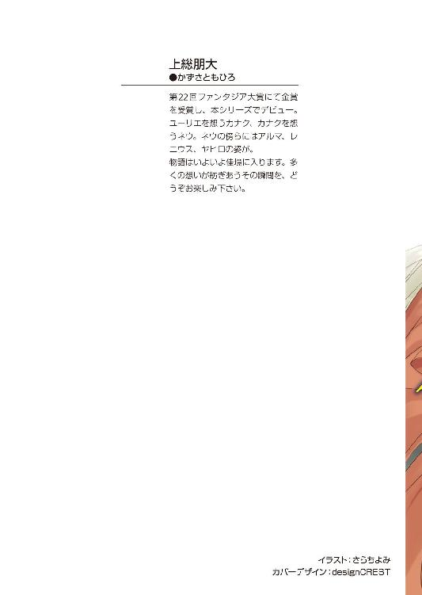
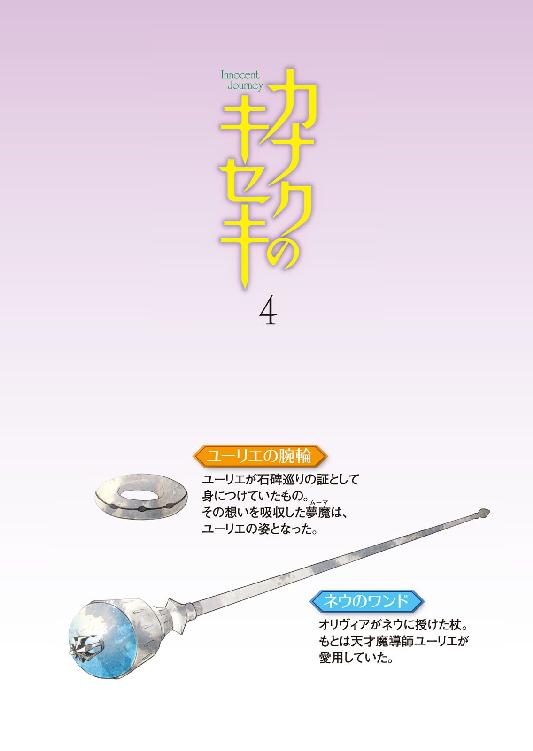
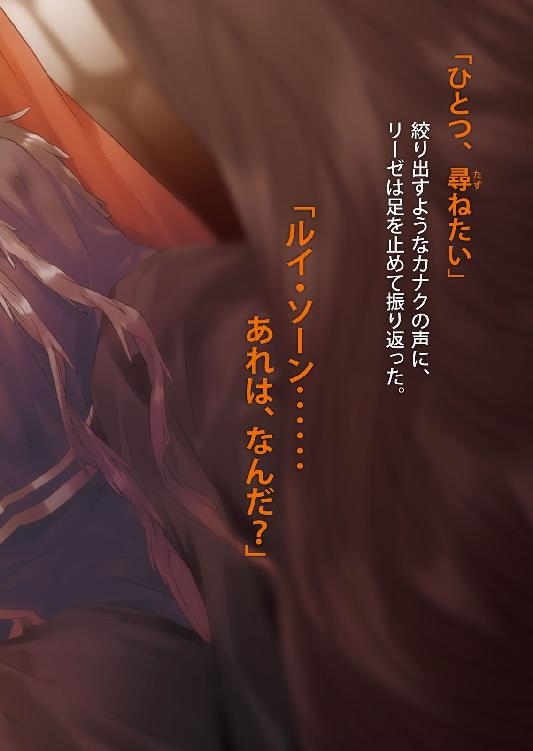
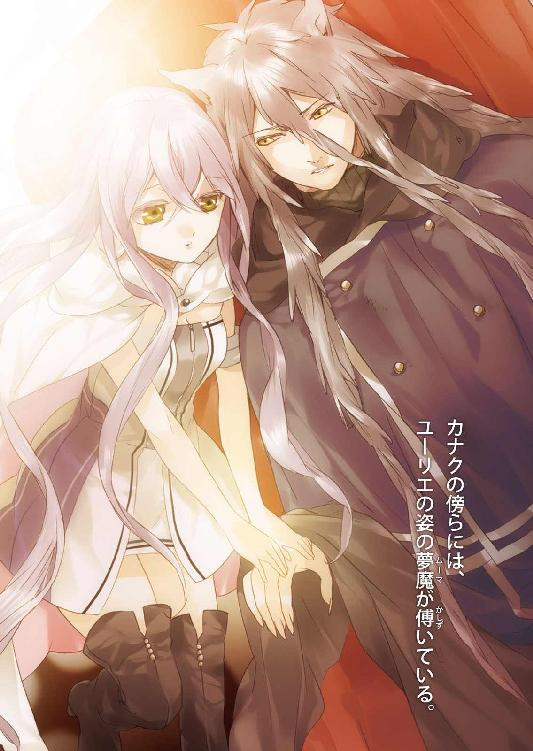
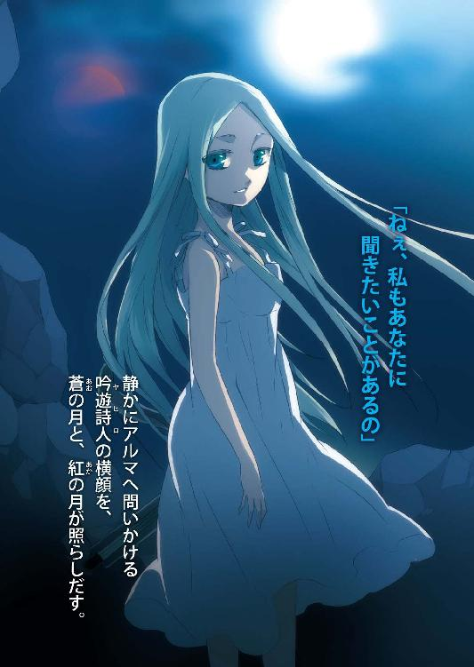
カナクのキセキ４
上総朋大

富士見ファンタジア文庫
本作品の全部または一部を無断で複製、転載、配信、送信したり、ホームページ上に転載することを禁止します。また、本作品の内容を無断で改変、改ざん等を行うことも禁止します。
本作品購入時にご承諾いただいた規約により、有償・無償にかかわらず本作品を第三者に譲渡することはできません。
本作品を示すサムネイルなどのイメージ画像は、再ダウンロード時に予告なく変更される場合があります。
本作品は縦書きでレイアウトされています。
また、ご覧になるリーディングシステムにより、表示の差が認められることがあります。
口絵・本文イラスト さらちよみ
Ｃｏｎｔｅｎｔｓ
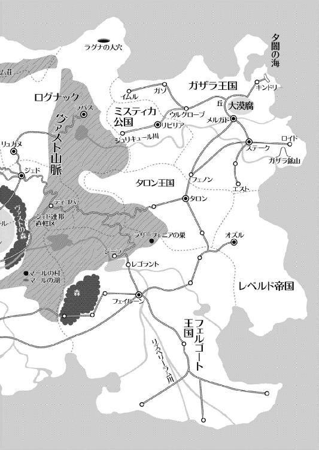
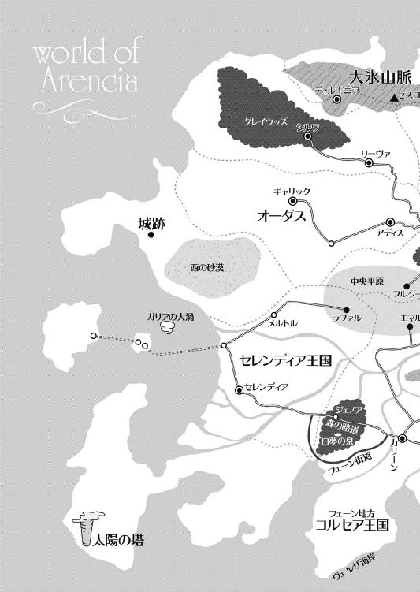
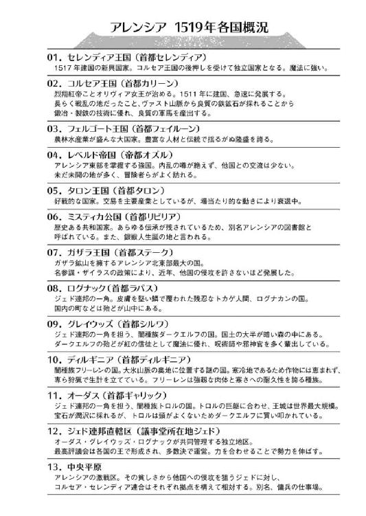
第一章・表 ミスティカへ【ネウ】
コルセア王国の王都カリーンは、その日も賑わっていた。
この地で一稼ぎしようと目を血走らせる商人や、未知なる出会いと冒険を求めて足を運んできた冒険者の一団、魔物や夢魔によって住む地を失い、王都を頼りにはるばるやってきた旅人......。
他にも何処かへ馬を走らせていくコルセア軍の斥候や、仕事を求める音楽団など、カリーンの東門は人でごった返していた。
「さーて、これからは少々長旅になるな」
そんなカリーン東門の雑踏をかき分けつつ、四人の冒険者が馬の鼻を東の向こうにあるフェルゴート王国に向けていた。先頭は黒髪の盗賊のアルマだ。彼はもう水袋に口をつけながらぼやいていた。
天高く昇った太陽が光と熱を容赦なく彼の茶色いレザーアーマーを焼く。アルマは額の汗を拭いながら、照りつける黄色い塊を苦々しく見上げた。
「しょうがないじゃん、昼間なんだから。アルマが寝坊しなければ、涼しくて空いてるうちにここを出られたのにさ」
アルマの腰に腕を回したまま、ネウは言葉を返した。
ネウはこの一団で唯一の闇種族ダークエルフだ。黒髪のアルマよりもさらに濃い闇色の髪は魔法を得意とするダークエルフのシンボルでもあるが、まん丸で僅かに垂れ目がちの黒い瞳には独特の温かさを内包している。
そんなネウの胸には陽種族、即ち暁の賢者マールの信徒である証の首飾りが輝き、その手には天才魔導師ユーリエが使っていたワンドが握られている。
短くて軽いスカートに、長めのレギンスと長手袋は深緑色で、ダークエルフの国グレイウッズでよく見られる衣装だ。
ダークエルフでありながら聖神官でもあるネウは、アレンシアでも希有な存在だった。
「うるせえな。こっちはこっちでいろいろあんだよ！」
乱暴な言葉がネウに降り注ぐ。真夏の照りつける太陽よりも不快だった。
「寝坊盗賊」
「ドジ聖神官」
二人の視線が交錯し、火花が散る。
「おいおい、そこまでにしておけ。余計に体力を使うだけだぞ」
馬を進めて轡を並べ、にらみ合うアルマとネウにそう声をかけたのは聖剣ハート・オブ・フレイムを背負い、戦士から聖剣士となったレニウスである。紅蓮の炎のような赤い髪を風に揺らし、思慮深い茶色の瞳をアルマとネウに向けている。肩が凝りそうなフルプレートメイルに日が射して、光の粒が馬のたてがみに落ちていた。
「そうだよ。ミスティカまで行かなきゃならないのに、最初からそんな調子じゃフェルゴートにも着けないよ？」
レニウスの後ろに腰掛けている少女、吟遊詩人のヤヒロが特有の楽器「ストリングス・ボウ」の弦をぴーんと弾きながら口を挟む。これはこの旅をするにあたり、コルセア王国のオリヴィア女王から特別に賜った美しい銀製のもので、魔法使いの魔法と同じ位置づけである「呪曲」の効果を増幅することができるという魔法のアイテムだ。
ヤヒロは見るものを自然と引きつける顔立ちに水色の髪、玉石のような翡翠色の瞳を持つハーフエルフである。
彼女の両肩には草人と呼んでいる二人の小人が、足をぷらぷらさせながら機嫌好さそうに座っていた。
「ううー、ごめんなさい」
素直に目を伏せるネウに「へっ」と横を向くアルマ。非常に対照的な反応だったが、このパーティのリーダーはしょぼんとうなだれているこのダークエルフ、ネウなのだ。
彼らは遠く北方の国、ディルギニアから銀獣人ライカをこの地に迎えるというオリヴィア女王直々の仕事を終え、報酬をもらったばかりだった。
ネウは魔王になってしまったとはいえ、大好きなカナクを滅ぼす力を持つ銀獣人を迎えに行くというその仕事を引き受けたくはなかったのだが、オリヴィア女王に説得されて渋々、その仕事をこなした。
ネウの望みは魔王カナクを倒すことではなく、リーゼという魔導師のせいで魔王となったカナクを救うことだ。千年前に飛ばされたユーリエの許へ行くために魔王になったカナクに、聖神官としてしっかりとこの世で生きてもらいたい。
ネウの瞳に、決意が宿った。
「さて、まずは北と南、どっちの街道を使うつもりなんだ？」
レニウスがネウに尋ねる。
このレニウスはコルセアの西方、セレンディア王国の王弟でもあるのだが、このような冒険者のパーティにおいては、皆がリーダーと決めたものが全てを決定する。それがたとえ王族であろうが根無し草であろうが関係のない、冒険者独自のルールだった。
「北と、南かあ......」
カリーンから東にあるフェルゴート王都、フェイルーンまでは二本の道がある。ヴァスト山脈南端をかするように延びている、通称〝北街道〟と、コルセアとフェルゴートが同盟を結んだ際に作られた街道、通称「南街道」だ。
もともと、大軍を動かすために造られた南街道は幅も広く、馬の足を痛めないように柔らかい砂と土で三層に固められた道が、両国の首都まで延びている。南街道は所々に冒険者や旅人を目当てとした露店が開かれるほど人通りが多く、活気があった。
対して北街道は山道の上に、鬱蒼とした森を抜けなくてはならないのであまり好まれていない。だが、距離的には北街道の方がフェルゴートに近かった。
ネウはヤヒロの顔を見る。ヤヒロはそれが正解だよ、と言わんばかりに笑顔で返した。
「あたしたちは北街道を使おう。こっちには吟遊詩人のヤヒロちゃんがいるから、人が少ない道の方がいいと思う」
レニウスが首を縦に振った。
「ああ、オレもそれがいいと思う。な、アルマ」
アルマはただ「ああ」とだけ返事をした。
「よーし、行こう、フェルゴートへ！」
ネウの声に皆が頷き、レニウスとアルマは手綱を叩いて馬を走らせた。
道の脇には様々な草花が生え、虫たちがその甘い蜜を求めて飛び、風がひと撫ですると、濃い草の匂いが鼻を擽る。北には雪の帽子を被ったヴァスト山脈が涼しげに聳え、ネウたちの目を楽しませてくれた。
アルマとレニウス、そして荷物だけを乗せた馬はコルセア王都カリーンの堅固な城壁を左手に、北の街道を目指して走る。草花を搔き分け、なだらかな坂を上り終えると、目の前に北街道を行く人の姿が見えはじめた。
「ヤヒロ、北街道が見えたぞ！」
アルマがそう叫ぶと、待ってましたとばかりにヤヒロがストリングス・ボウを構える。
「じゃーみんなー、行くよーっ！」
ヤヒロが弓にも楽器にもなる吟遊詩人固有のストリングス・ボウをかき鳴らす。すると馬の足先が仄かに輝き、みるみる加速していった。
これこそが吟遊詩人自慢の呪曲「快速の呪曲」だ。
ネウたちはヤヒロが奏でる調べに乗って風のように走り、北街道に躍り出ると、一気に東のフェルゴート王国に向かって駆け出した。
勢いがついている分、何かに激突した時の衝撃はトロルの棍棒三発分に匹敵する。故に先頭は馬術に長けたアルマの馬が走り、後方からレニウスの馬が続いた。
「うはー、こりゃ速いな！」
アルマが歓喜の声を上げる。
「ちょ、これ、速すぎない？ 大丈夫？」
アルマの腰にしっかりと身を寄せるネウが、心配そうに言う。
「確かに速いな。あの女王さまに貰ったストリングス・ボウのせいか？」
ひょい、とアルマが後ろに目を向ける。アルマたちの馬の後方から、レニウスの馬、荷物を載せた馬と続いている。三頭とも、まるで鷹か鷲のような速度だった。
「ちょーっとアルマぁー！ よそ見しないでええええぇえええ！」
ネウがぎゅうう、とアルマの腰に胸を当てる。
「おお、こ、これは......」
「ななな、なによー？」
「いや、何でもない。さあ飛ばすぞっ！」
吟遊詩人が奏でる快速の呪曲にもう一つ、素晴らしい効果を見出したアルマは、手綱をさらに叩いて速度を上げた。
この日は好天にも恵まれ、人通りの少ない北街道を選んだことにより、日暮れにはもうヴァスト山脈にさしかかろうというところまで来ていた。
山道に入る前にキャンプをし、馬とヤヒロを労った。
そして翌日から、再び馬を走らせる。ヤヒロの快速の呪曲は本当に素晴らしい効果を見せ、ネウらが想像していたよりもずっと目的地を近いものにしてくれた。
緩やかで日に焼かれたヴァスト山脈の山道を登り、その先の森で廃墟となった砦を発見し、そこで休む。
馬を走らせれば薄暗くて空気の湿った森の木々を揺らし、森を抜けた先の乾いた広野で砂を巻き上げながら魔物の襲撃を振り切った。
意外だったのが、目をギラギラさせて行き交う冒険者たちがかなり多かったことだ。冒険者は実力重視でパーティ編成することが多いので、陽種族と闇種族の混成パーティが多く見られた。人通りが少ないとはいえ立派な街道なのだから、旅人や商人、冒険者などとすれ違うのは当たり前なのだが、それにしても冒険者の比率が圧倒的に多いのがネウたちの心に引っかかった。
そしてカリーンを出立して五日目、ネウたちはフェルゴートに辿り着いた。
一般的には十日以上かかってもおかしくない道のりを、半分で走破してしまった。ネウたちはヤヒロに惜しみない賛辞と休憩を与え、一泊だけして再び旅路についた。
ネウたちは遊山に来ているわけではない。魔王となったカナクを救うため、その手がかりと情報を、アレンシアの図書館と呼ばれるミスティカ公国に求めているのだ。
フェルゴート王国からミスティカ公国までは、まだまだ遠い。
コルセア王都カリーンよりも賑わうフェルゴート王都フェイルーンを出立した一行は次の地、タロン王国を目指して東の街道をひた走る。
ネウたちは東のリズベリーラム川を渡り、タロン王国を経由、一旦ガザラ王国南端の町フェノンに立ち寄って、そこからミスティカ公国を目指すことにした。
野宿をする場所選びは、旅の音楽団としてアレンシアの全国を巡ってきたヤヒロと、同じく情報収集で各地を渡り歩いたアルマの経験が、大いに役に立った。
二人はどの場所なら安全か、どんな地形が危険なのかを熟知していたからだ。
ネウたちはヤヒロとアルマが提案する場所で野宿を続け、さらに七日間かけてフェノンに到着した。そこで二泊して英気を養い、そこからは坂と砂利が多く白い岩肌がむき出しになっている道なき旅路を経て、ミスティカ公国首都リビリア付近に到達した。
コルセア王都カリーンを出立して、僅か十八日後のことだった。
「あー......最初からわかっていたこととはいえ、この国に来るのは気が引けるぜ」
と、アルマが溜息をつく。馬の手綱を面倒そうに持ち、その瞳にはやる気の欠片も垣間見えない。
「何でー？ ミスティカってどこの町も綺麗で、私は好きだけどな」
もう一頭の馬上、レニウスの後ろでヤヒロがストリングス・ボウを奏でながら鼻歌を歌っていた。いかなる場合においても吟遊詩人だけは歌を歌い、曲を奏でる。冒険者たちにとってその調べは勇気になり、心を落ち着けてくれる。それが、ヤヒロに吟遊詩人としての心得を教えてくれた人の言葉だった。
それにしてもこの十八日間、ヤヒロはずっと休みなく快速の呪曲を奏で続けてくれた。その腕前もそうだが、何より見かけは十歳程度にしか見えないこの小さな体の、どこにそんな力があるのかと皆が感心した。
「ミスティカはお前みたいな吟遊詩人やレニウスみたいな聖剣士、んでもってドジ聖神官には好意的だろうさ。だが盗賊は歓迎されない国なんだよ。特に、情報を盗む盗賊団リュシオルファクルはな」
アルマはアレンシア最大の盗賊団「リュシオルファクル」の幹部だ。素性がバレれば歓迎されないどころじゃ済まない。
「でもなあ、お前の出番が無いとは思えないんだが」
馬を操る聖剣士レニウスが、アルマにそう声をかける。
「そんなこと、言われなくたってわかってるっ──」
『きゃああーーっ』
「って、何だあっ!?」
遠くから飛び込んできた突然の悲鳴に、四人全員が前を向く。
左側は崖になっており、その下には樹林が広がり、大きな茶色の鳥が木々の隙間から飛び立っている。右手は崖になっていて、粘土質の硬い土の間から水がにじみ出ていて、それに集まるように苔が生えていた。
むせかえるような水と木々の匂いが立ちこめるなだらかな街道を下りきったところに、横倒しにされた馬車があり、その周りを黒い人影が取り囲んでいた。
囲まれている方はどうやら旅人か商隊のようで、戦闘ができるようなものがいないらしい。為す術なく小動物のようにひとかたまりになって、彼らを逃がさないようにと囲んでいる黒い影にただ怯えていた。
黒い影は四体が人間と同じくらいだったが、一体だけ周りのものの倍はあろうかという巨軀を持っていた。
「こんな所にまで出るようになったのか、夢魔のやつら！」
レニウスはそう言って、目つきを鋭くした。
夢魔、それは西に居を構える黒夢の魔王の下僕だ。まるで影が立体化したような体軀を持ち、その身体につけられた白い仮面を被せられると、二度と醒めることのない眠りに落ちる。そうして眠らされた者たちは「眠りもの」と呼ばれていた。
「全部で五体、しかも一体は体が大きい。あのでかいのがちと面倒だな」
そんな言葉とは裏腹に、アルマの手は既に短剣の柄を握っている。
「行こうよ、ネウ！」
小さなヤヒロも矢筒を背負い、戦闘準備は万端だった。ネウはキッと眉を吊り上げ、蒼く輝くワンドを手にして叫んだ。
「うん、あの人たちを助けよう！ アルマは先行して攻撃を、レニウスはあの人たちを守って。ヤヒロちゃんはここから援護をお願い！」
アルマとレニウスは口元を緩め、手綱を叩く。走り出す馬上で、アルマが背中越しにネウに話しかけた。
「お前、だいぶパーティリーダーっぽくなってきたな」
「え、そ、そう？」
ネウは特にそんな意識はなかった。目の前に困っている人がいるのだから、助けるのは当然の行為だ。それはアレンシアの神、ネウが信奉する暁の賢者マールの、一番基本的な教えでもあるのだ。
「んじゃ、馬頼むわ」
アルマはそう言うと走っている馬の背で立ち上がり、両手を離して短剣を持った。
「え、えええええ!? ちょっ......いきなり......」
ネウが慌てて手綱を握ると、もう目の前に夢魔たちがいた。
「ひ、ひえええええ!?」
次の瞬間、アルマが馬から宙を舞って一回転、そのまま一番手前にいた一体の夢魔を短剣で切り裂いた！
切られた夢魔はよろよろと後ずさる。左肩につけていた仮面が真っ二つに割れて地面に落ちると、夢魔は形を保てず、霧のように崩れて姿を消した。
ネウは何とか手綱を引いて馬を止め、力いっぱい叫んだ。
「ばかアルマあっ、何かやるなら先に──」
「さあああいっくぜえええええ！」
まるっきり聞いていなかった。
素早さにおいて盗賊の右に出る者はない。アルマは向かってきた夢魔が振り下ろす腕を悠々と躱し、今度は太ももにつけた仮面めがけて短剣を突き立てる。
「まず二つ、だな」
躍動するアルマの背後で、一体の夢魔が倒れて消えた。
馬車を襲っていた残り二体の夢魔は、アルマを無視して縮こまっていた旅人に襲いかかる。その時、既に馬車のそばにいたレニウスが背中から橙色の剣を引き抜き、素早く夢魔の腕を斬り飛ばした。
「オレは無視できる相手じゃないぞ？」
腕を飛ばされた夢魔の仮面は、腹にあった。レニウスがちらりとそれを確認し、素早く剣を夢魔の腹に突き刺す。夢魔は身体をのけぞらせて避けたが、仮面はその一撃で傷がつき、ジリジリと音を立てる。
レニウスは旅人たちを背に、視線を右に振る。もう一体の夢魔が、左手でレニウスに摑みかかってきていた。レニウスは身体を引きながらひゅん、と軽く剣を振るう。夢魔の右足がずるりと膝から切り離され、倒れ込む。そして夢魔の左胸についていた仮面に剣を突き立てて、レニウスが叫んだ。
「滾れ、ハート・オブ・フレイム」
聖剣士は普通の戦士と違い、特殊能力を持った聖剣を携えている。レニウスが持つ聖剣ハート・オブ・フレイムは、熱を自在に操る剣だった。
腕を飛ばされた夢魔は腹から、剣を突き立てられた夢魔はその胸から蒸気が立ちのぼり、ぶくぶくと泡立っていく。やがて乾いた音を立てて仮面が砕け散ると、夢魔は断末魔の叫びを上げて消滅した。
「さて、あと一体か？」
アルマとレニウスが肩を寄せて、その夢魔に目を向けた。
夢魔らから馬車を引き離すことはできた。今や夢魔の的は、完全にレニウスとアルマに絞られている。馬車を脇目にずしり、と重そうな足をレニウス、アルマの前に出す夢魔。街道に窪みができて、小石が辺りにぱらぱらと舞い落ちる。
これまで倒してきた四体とは、明らかに違う体軀である。通常の人間の一・五倍はあるトロルですら、すこし顔を上げなければならないほどの大きさがある。
明らかに先ほど倒した下級の夢魔ではなく、中級以上の夢魔だった。
しかも仮面の位置は右側頭部にある。
「どうする？ このままじゃヤツの仮面には届かないぞ？」
アルマはちらりと夢魔の足に視線を落とす。どうにかして上体を下げさせないと、夢魔の弱点である仮面に手が届かない。仮面を壊さなければ、夢魔は倒せないのだ。
「そうだな、じゃあここはまずオレが前に立って──」
その時、向かい合う二人の髪を後方からの突風が巻き上げた。
『貫通の呪歌っ！』
凄まじい速度で二人の頭の間をすり抜けたのは、青白い光の粒をまき散らしながら飛んでいく矢だった。
それは少しもぶれることなく、夢魔の右側頭部に激突する。バギン、という鈍い音と共に夢魔の仮面が砕け散り、矢はそのまま勢いを落とすことなく夢魔を貫いて青空へと吸い込まれていった。
夢魔は雷撃を受けたかのように手をぶらんと垂らし、膝を折り、黒い煙となって消えた。
「えへへ、どう？」
この矢を放ったのは可愛らしい吟遊詩人、ヤヒロだった。ストリングス・ボウはその名の通り、逆手に持つと弓になる。あっけにとられた前線の二人は剣を手にしたまま、ぽかんと口を開けていた。
その後、アルマとレニウスは倒れた馬車を元に戻し、その間にネウが傷ついた旅人に治癒魔法を施した。
「あ、ありがとうございます」
旅人たちはネウらに何度も頭を下げ、タロン方面に向かって馬車を走らせていった。
「いいことしたな」
レニウスがネウの頭にぽん、と手を置く。
「えへへ」
ネウはあまり人から頭を下げられたことがなかったので、少し照れた。
なぜなら彼女はアレンシアの神マールを暁の賢者ではなく紅の魔女として信奉し、人間やエルフ、ドワーフらに忌み嫌われる闇種族、ダークエルフだったからだ。
ネウはそっと胸の首飾りを握りしめる。ネウをここまで成長させてくれたのは、奇しくも黒夢の魔王になってしまったカナクなのだ。
「さあみんな、先を急ごう！」
ミスティカ公国の首都リビリアはもう目前だった。
第一章・裏 魔王の苦悩【カナク】
ネウたちがコルセア王都カリーンを出立した頃の、アレンシア西方。
朽ち果てた古城の上を、どす黒い雲がゆっくりと南の方角へ流れていく。時折雷鳴が轟き、瞬時に膨張した空気の振動が枯れ木を僅かに揺らしていた。
夢魔だけが跋扈する古城の中、誰も訪れることのない謁見の間に、一人の男が玉座に腰掛け、長きにわたって体中を引き裂かんとする悪しき力に耐えていた。
黒夢の魔王と化した、カナクだった。
マールの村をそのまま出てきたカナクは、ネウが縫ってくれた神官衣を身につけたままだった。銀色に黒が混じった髪を腰まで垂らし、耳と爪は長く尖っている。カナクは黒夢の力をマナで押さえ込んでいたため、銀獣人の姿を解くことができなくなっていた。
額に玉のような汗が浮かんでは足許の床に滴り落ち、岩をも砕く鋭利な牙は、痛みに耐えるため常にぎりりと嚙みしめられている。
黒夢とはアレンシアに住む者たちが見る悪しき夢のことだ。それは通常、この現世界アレンシアから夢幻界イストリアルに送られるのだが、カナクはそれを強制的に集める黒夢の結晶「黒晶石」を体に埋め込んでいた。
そしてカナクが生み出した黒夢の化身「夢魔」がアレンシアに広がっていくと、カナクの許へ集まってくる黒夢の量や強さ、濃度が次第に大きくなり、カナクはその黒夢を抑えるのに必死だった。油断すると黒夢は容赦なく心に食い込み、浸蝕し、意識を削ってくるからだ。
カナクが生み出している夢魔は無差別に生き物を襲い、その身につけた仮面を相手に被せ、目の醒めない眠りへと落としていた。
黒夢によって強制的に眠らされた者は、その者が最も恐ろしいと思う悪夢を黒夢が呼び水となって引きずり出す。そうして生み出された黒夢は、何倍にも大きくなってカナクの許へ帰ってくる。その黒夢を使い、また新たな夢魔を作り出す。これを繰り返すことで、カナクは莫大な黒夢を集めていた。
黒夢の力は、この現世界アレンシアから夢幻界イストリアルに行くために必要なものである。だが、カナクはどれほどの量の黒夢を集めればイストリアルに行けるのか。具体的なその方法はというと、肝心な部分をまだリーゼから聞き出していなかった。
「ぐう......う、がぁ......」
カナクの頭上からは、絶え間なく黒夢が流れ込んできている。それはまるで脈打つ小さな滝のように、一粒余さずカナクの中に溶け込み、苦痛をもたらしていた。
ふと、カナクは部屋の片隅に気配を感じた。
「リー、ゼ？」
声をかけると、土埃が吹き溜まった部屋の隅が湾曲し、女性が現れた。
彼女こそがカナクを魔王にしたイストリアルの魔導師リーゼだ。長く伸ばした黒髪に、遠謀深慮が渦巻く漆黒の瞳。そして闇色のドレスに身を包み、白くきめ細かな肌をより強調させていた。
見た目は人間、それもかなりの美人だが、リーゼはイストリアル人であり、この世界で肉体という器を持たないため、砂で体を形成している。つまり、どんな姿にも形を変えられるという異質な特技を持っていた。
「どこに、行っていた？」
リーゼは衣擦れの音を立てながらゆっくりとカナクの前に移動し膝をつく。リーゼはカナクが魔王になったその日から、カナクより下の立場であるという姿勢を崩さなかった。
「イストリアルに」
カナクはその単語を耳にし、顔を上げる。
「い、イストリアル!? 君が操る程度の黒夢で行けるのか？」
黒夢の魔王たるカナクには、その量を感知することくらい容易だ。今の時点でカナクは、このリーゼの三倍近い黒夢を内包している。
だがリーゼはカナクの思考を読み取り、首を振った。
「魔王さま、私はもともとイストリアルの者であり、こんな砂の体を捨てることなど、さして難しいことではありません。ですが、あなたはこのアレンシアの人です。そう簡単にはいきませんわ」
リーゼは意地悪そうに目を細めた。
カナクはこのリーゼに「イストリアルを救って欲しい」と言われ、黒晶石を差し出された。夢幻界イストリアルは増えすぎた黒夢のせいで、黒夢を幸せな夢、白夢に変える力が追いつかないのだという。故にカナクがここアレンシアで魔王となり、黒夢を引き受けてくれれば相対的に増えた白夢の力でイストリアルは復興できるし、カナクは集めた黒夢の力を使ってイストリアルへ行き、過去に飛んで......カナクが愛した人、ユーリエに会うことができると言った。
二人の利害は一致し、こうしてカナクは黒晶石を手にして魔王となった。
「......イストリアルは、どう......だった？」
少し多めの黒夢が入ってきたため、カナクの言葉が乱れる。胸が詰まり、吐き気がした。
「はい、魔王さまのおかげで白夢の世界はかなり復興していました」
「黒夢の......カオスのほう、は？」
「かなり弱まっていました」
カナクの瞳が濁る。カナクが行きたいのはその混沌の世界、時間と空間が入り乱れるイストリアル・カオスなのだ。
「力を弱めたカオスから、過去に、行けるのか？」
「ご心配は無用です。アレンシアから人が全ていなくならない限り、イストリアルから混沌が無くなることはありませんから」
リーゼは短くそう言い、静かに立ち上がる。砂の粒がぱらぱらと床にこぼれ、凹凸のある古びた床に吸い込まれていく。
「魔王さま、今は焦らずに黒夢を集めることに専念して下さい」
リーゼはそう言い、目を細めて姿を消した。
カナクはこの姿になってから何も口にしていないのに、空腹感はまるでなかった。
リーゼが言うように、カナクはまだ黒夢という力を受け入れることに慣れていなかった。
平常心を奪われ、時折意識を刈り取られ、気づけば床に倒れていたこともある。
（ユーリエ......）
カナクは心が乱れそうになる度に、心の中でその人の名を呟いた。
ユーリエ・セレンディア。今は一国となったセレンディア王の義妹である彼女に、カナクはずっと恋心を抱いていた。
ユーリエはカナクと共に、セレンディア魔法学校卒業後、アレンシアの神であるマールの石碑を巡礼していく「石碑巡り」の旅に出た。二人は相思相愛だったにもかかわらずなかなか想いを伝えられずに旅路を行く。
だがその旅の結末は、悲惨なものとなった。カナクを助けたユーリエは禁術を使い過去に飛ばされ、マールとしてこのアレンシアを生きることとなった。
そしてカナクへの熱い想いを石碑に刻んで、死んでいった。
そのことをカナクは、ユーリエを失ってから知ったのだ。自分を助け、千年も前にその命を終わらせてしまった愛する人、ユーリエにもう一度会いたい。
カナクの支えは、その想いだけだ。
「ううう、ユーリエ、ゆーりえぇ......」
頭を抱えるカナクの胸に埋め込まれた黒晶石が、怪しい輝きを湛えていた。
第二章・表 銀獣人【オリヴィア】
カナクが黒夢と格闘していたその頃、アレンシアの南にあるコルセア王国では、兵士たちの訓練場に意外な姿があった。
この国の女王オリヴィアと、遥か遠く北方ディルギニアという国からやってきたライカという少年だ。
目元を常に仮面で隠した女王のオリヴィアは、その猛勇と深慮から「烈翔紅帝」と呼ばれ、アレンシアで最も大きな国であるフェルゴートの王ですら一目を置く人物だった。
そのオリヴィアは今、銀の甲冑に身を包み、亜麻色の髪を束ね、ライカと対峙していた。
アレンシアでは珍しい銀の髪を汗で濡らし、身につけていた浅黄色のローブは土埃で汚れている。膝は笑い、肩で息をしているライカに、オリヴィアは溜息混じりで言う。
「まだまだだな。お前の体から銀獣人のマナを少しも感じない。もう一度だけやってみろ。内なる力を引き出し、肉体の変化を恐れるな」
「は、はいっ！」
ライカは思い切り歯を嚙み、膝を手で押さえて集中する。銀色の髪にマナが行き渡り、炎のようにゆらめく。
ライカはもう少しで、コツをつかめるというところまできている。
だがライカはそこでふっと力尽き、倒れて意識を失った。
「......道は険しいか」
倒れたライカを背負い、オリヴィアは城の医療室に向かった。
オリヴィアはかつてガザラ王国、キンドリーの長城で夫スフィアに聞いた言葉を思い出していた。
銀獣人の力は、成人してようやく制御できるという。確かにはじめて会った時のスフィアはまだ未熟で、その力を抑えられず、寝所ではオリヴィアに嚙みついてきた。
銀獣人は十五歳前後になると、急にその力が発現しはじめる不安定な時期に入るらしい。ライカの父ディクトはその時に銀獣人の力を解放、制御する術を教えるつもりだったらしく、まだ十三歳だったライカは結局何も教えてもらえなかったという。
もっとも、だからこそあのリーゼの銀獣人狩りから難を逃れていたのだが。
オリヴィアはライカを医師に預けると、軽く唇を嚙んだ。
リーゼが自分に仇なす可能性を持つ銀獣人を狙うのは自明の理だったが、まさかアレンシア中の銀獣人を襲うとは思わなかった。そこまで考えが至っていれば、もっと違った手を打っていたものを。
イストリアルの魔導師リーゼと、烈翔紅帝オリヴィア。直接会わずとも、二人の戦いはこのアレンシアの至る所で繰り広げられていた。
（ライカが銀獣人に目醒めれば、リーゼは必ずここに来る）
オリヴィアは執務室に戻って椅子に座り、メイドが淹れてくれたハーブティーに口をつけつつ、山積みになった書類に目を通し、羽根ペンを手にしてサインを入れていく。
（リーゼ......早く、ここに来い！）
ガザラでは大好きだった夫、スフィアを目の前で殺された。マールの村では最愛の息子を、黒夢の魔王に落とされた。
オリヴィアはこれまでリーゼに一回も勝ったことがない。いいように奪われ、踊らされ、あざ笑われているのだ。
だが......最後は勝つ。
自然と指に力が入り、ぼきりと羽根ペンが折れ、その破片がオリヴィアの指に刺さる。赤い液体と黒いインクが紙の上に垂れた。
赤き女王オリヴィアと黒き魔導師リーゼのように、二つの液体は混じり合うことなく紙の上でその身を躍らせていた。
オリヴィアは椅子にもたれかかり、壁に立てかけた聖剣「紫焰」に目を向ける。オリヴィアはライカの特訓を行う時は、必ずこの聖剣を腰に差し、とある短剣を懐に入れていた。
肉体ではなく、その者が内包する力、即ちマナを直接焼くことができる聖剣、紫焰である。試しにこの剣で夢魔を斬ってみると、夢魔は紫の炎に包まれ、瞬く間に消滅した。
紫焰の炎は黒夢をも焦がす。予想していたこととはいえ、その事実を目の当たりにしたオリヴィアは、思わず歓喜に身を震わせた。
そしてもう一本。こちらは「琥珀」という。夢魔に対しては何の効果もないこの鼈甲色の短剣だが、これこそが対リーゼの切り札だった。
この二つの剣を得るためにオリヴィアはこのフェーン地方を駆け回り、国王の座について情報を集めまくったのだ。
そうまでしてようやく手に入れたこの刃、必ずあの女に突き立てる。
オリヴィアは、復讐の女王だった。
ライカへの特訓は、それからも毎日続けられた。
徐々にではあるが、ライカは銀獣人の力を体から滲ませるようになってきた。
そして五日後。ライカはついに、その一線を越えた。
「おお......」
対峙したオリヴィア女王と、周囲で訓練を重ねていたコルセア兵が感嘆の声を上げた。
ライカの銀髪が腰まで伸び、硬化した爪が長く鋭利に尖る。頭に獣の耳が生え、体全体が盛り上がり、上着とローブを破いてしなやかな筋肉を露わにした。
ライカのおっとりした顔つきが一転し、瞳に狂気が宿る。喉を鳴らし、血を求める獣......それは、紛れもなく銀獣人の姿だった。
小さなライカが、今はオリヴィアの背丈を優に超える大きさとなっている。オリヴィアは、思わずその姿を亡き夫スフィアに重ねてしまった。
「ついにその力を手に入れたか、ライ──」
ヒュン、と空気を裂く音がして、オリヴィアは後ろに跳び退いた。
つう、とオリヴィアの腕から赤い滴が流れる。ライカを見ると、いつの間にか鋭い爪をオリヴィアに向かって振り上げていた。
「じょ、女王さまッ!?」
慌てるコルセア兵たち。だがオリヴィアは平然と兵士たちを手で制した。
「私は問題ない。この場にいる者は全員訓練場の外に退避し、門を閉じよ。大事なお前たちを守りながら戦うには、少々厄介な相手だ」
「し、しかし......」
何人かの兵士が盾になろうと、オリヴィアとライカの間に立ちふさがる。オリヴィアはそんな兵士たちの肩を叩き、腰の聖剣「紫焰」を背中に移して兵士の一人から普通の剣を受け取った。
「私に二度、同じことを言わせるな」
オリヴィアから、闘気という名のマナが溢れ出す。
「う......は、はっ！」
周りの兵は渋々、命令通り訓練場を去って行った。
がしん、と重たい門が閉められる。ライカはぐるる、と咽を鳴らしたまま訓練場の中央から動かなかった。
きっとあの体を制御しようと、必死に戦っているのだろう。オリヴィアはふぉん、と剣で風を切り、ゆっくりとライカに近づいていく。
「さあ、その姿になったお前の力を見せてくれ。私はこれでも烈翔紅帝と呼ばれる女。まだまだ今のお前で仕留められる相手ではない」
ライカがゆっくりと、顔を上げた。
「さあ力を解放しろ！ この私に総てを見せてみろ！」
ライカの身体から凄まじいマナが噴き出し、両手を開いて爪を光らせた。
「ルオオオオオオオオオオオオ！」
雄叫びと共に、ライカの足が大地を蹴る。オリヴィアの腹めがけて爪を立て、一気に抉りとろうと腕を振るう。オリヴィアはそれを剣で受け止めると、力まかせにライカを体ごと吹き飛ばした！
「はあああああああああっ！」
オリヴィアはすかさずライカに接触し、五つの剣尖がライカの体を刻んだ。硬化したライカの肉体は頑丈で、オリヴィアの剣でも薄皮一枚斬ったに過ぎず、致命傷とはほど遠い。
ライカはオリヴィアに向かって嚙みつこうと牙を剝くが、オリヴィアはいち早くその間合いを離れては、瞬時に距離を縮めてライカの肩に剣を突き立てた。
「ウギャアアアアオオオオオオオオオオオオ！」
オリヴィアがひゅん、と剣を抜くと、ライカの傷口から鮮血が溢れ出す。
ライカはオリヴィアを捕らえようと、足に力を入れて地面を蹴る。
「!?」
体当たりだった。
不意を衝かれたオリヴィアの脇腹にライカの肩が当たり、オリヴィアは地面を削りながら吹き飛ばされる。
「ウオアアアアアアアアアアアアアア！」
ライカが両手にマナを集めて吼えた。
目一杯開かれた手の先の爪が、まるで十本の剣のように鋭く輝く。ライカが膝をつくオリヴィアに接近して斬りかかると、オリヴィアの鎧が砕け、髪留めが切られてはらりと髪が乱れる。
だが、オリヴィアはライカが繰り出す斬撃を紙一重でかわしていた。銀獣人になったライカは確かに強かったが、百戦錬磨のオリヴィアを上手く捉えきれなかった。
「どうしたライカ！ 銀獣人の力とはその程度のものなのか？」
オリヴィアは仮面をくいと指で直す。
「さあ、もっとだ、力つきるまで来い！」
接近しすぎた二人は互いの体を蹴り合い、距離を置く。オリヴィアは喜びにも似た感情に流されぬよう、剣を構えてライカに飛び込んでいった。
その頃、訓練場を追い出された兵士たちは慌てて上官とグウェイル大神官を呼びに行った。訓練場の中からは刃と刃が激しくぶつかり合う金属音や、煉瓦が砕ける鈍い音などが合わさって震動となり、兵士たちの足許を揺らす。
兵士たちの間に動揺が走った。もしここで女王の身に何か起これば、コルセアはどうなってしまうのか。コルセアが一国としてまとまっているのは烈翔紅帝オリヴィア女王の存在が大きいからだというのは、兵士どころか町娘ですら理解している。
不安が不安を呼び起こしていたその時、コルセアの大神官グウェイルと聖騎士団長ロゴスが現れた。
「こ、これは、どういうことだ!?」
グウェイルが呟く。ロゴスがその場にいた兵士たちに事情を聞いていると、急に訓練場の中が静かになった。
「行きましょう、大神官さま」
ロゴスは重たい鉄の門に手をかけながらそう言う。グウェイルは頷いてロゴスの隣にやってくると、兵士たちに門を開かせて中に入った。
広々とした訓練場の中央にオリヴィアが折れた剣を片手に立っており、彼女の足許には少年が横たわっていた。
「女王さまっ！」
オリヴィアはばらばらに解けた髪を上げ、声がした方に顔を向ける。
「グウェイルに、ロゴスか......」
オリヴィアは折れた剣を地面に落とし、その場に膝をつく。
グウェイルは「失礼」と短く言い、オリヴィアの肩を担いだ。
「女王さま、あまり無茶をなさらないで下さりませ！」
心の底から出たようなその言葉に、オリヴィアは思わず笑ってしまった。
「ふふ、幼いとはいえさすがは銀獣人だ。押さえ込むのに少々苦労した」
グウェイルはあきれ顔だった。少年とはいえ覚醒した銀獣人とまともにやり合って、苦労した程度で済んでいるのがおかしいというのに。
「笑い事ではございません！ もう少し御身を大事にして下さりませ！ 女王さまにもしものことがあれば、この国の大事ですぞ！」
グウェイルはそう言って目をライカに向けると、ロゴス団長がライカを背負っているところだった。
「ともかく、急いでお二人を医務室に！」
グウェイルがそう叫ぶと、ロゴスは頷いてライカと共に訓練場を後にした。
オリヴィアとライカは急遽、王城の医務室に運び込まれた。白く清潔感のあるシーツをかけたベッドが並び、絶えず消毒用アルコールの臭いが鼻を突く。
グウェイルとロゴスには心配いらないからと言い、早々にこの部屋から追い出した。
ライカを個室のベッドに寝かせると、オリヴィアは医師のメディカに彼の手当てを頼み、自分は鎧を脱ぎ、棚から傷薬を取って怪我をした箇所に塗っていった。
肩から脇腹にかけて薬を塗布していくと、途中で硬くざらざらした質感に変わる箇所がある。それはオリヴィアの胸の中央にある、大きな十字の手術痕だ。
オリヴィアは幼少のみぎり、ガザラで暮らしていた。その時にタロン軍との戦闘に巻き込まれ、あろうことか味方であるはずのガザラ軍団長に矢で心臓を射貫かれたのだ。
ザイラス・ウォートン。通称ザイル。
不意にその名がオリヴィアの脳裏を過ぎった。
（ここフェーン地方に来てから、思い出すことはなかったのに）
ザイルはその時運搬中だった「マール石」と呼ばれる貴重な石をオリヴィアの心臓と入れ替え、一度は息が止まったオリヴィアを生き返らせた。
もっとも、その罪でザイルはガザラ軍を追われ、辺境キンドリーへと送られることになってしまったのだが。
（懐かしい）
オリヴィアはベッドに腰掛け、暫し過去に思いを馳せた。
今ではコルセアの烈翔紅帝と謳われるオリヴィアがまだ何も知らない牧場の娘レベッカだった頃、父の言いつけでガザラの影砲士スフィアの許に嫁いだ。
そこにいたザイルが、まさかあのザイラスだったとは。
そこにいた老人が、まさかクーデターで国を追われた先代ガザラ国王だったとは。
そして影砲士が、銀獣人だったとは。
毎日が驚きの連続で、毎日が楽しかった。
（楽しい日々は、続かないもの......）
はあ、と溜息をつくオリヴィアの許に、メディカがハーブティーを持ってやってきた。
メディカはまだ若く、丁度オリヴィアがスフィアに嫁入りした年頃の女の子だ。大地を思わせる赤茶色の髪を白い帽子の中に詰め込み、大きな丸い瞳をオリヴィアに向けていた。
「女王さま、ライカさまが目を醒まされました」
「そうか、わかった」
ライカはあれだけの力を発揮してオリヴィアに向かってきたことを覚えているだろうか。オリヴィアは重く感じる身体に力を入れ、立ち上がってライカの許へ向かった。
（さすがにマナの消耗が激しいか）
オリヴィアの命は、マール石のマナが尽きたときに終わる。それがいつになるのかは予想もできないが、長くても数年しかもたないだろうとオリヴィアは感じていた。
（やれやれ、そろそろ後継者も決めねばならないし......忙しいな）
オリヴィアはハーブティーを一飲みし、部屋を出て行った。
ライカの寝所に入ると、包帯だらけのライカが慌てて上体を起こした。
「そのままでいい」
オリヴィアはライカを寝かせ、そばにあった椅子に腰を下ろした。
「すまなかったなライカ。暴走したお前の力を止めるには、無傷では不可能だった」
ライカは布団を口元まで引っ張り上げ、ぽろぽろと涙を零した。
「こちらこそ、お怪我をさせてすみません、女王さま」
オリヴィアは自分に手傷を負わせるほどの力を持った子供とは思えない、怯えきったライカに愛しさを感じ、彼の髪を撫でた。
「気にするなライカ、お前だけを傷つけさせたりはしない」
ライカは呻き声を上げて泣き、オリヴィアはそんなライカを抱きしめた。
「女王さま、何故女王さまはディルギニアの銀獣人に優しくしてくれたんですか？」
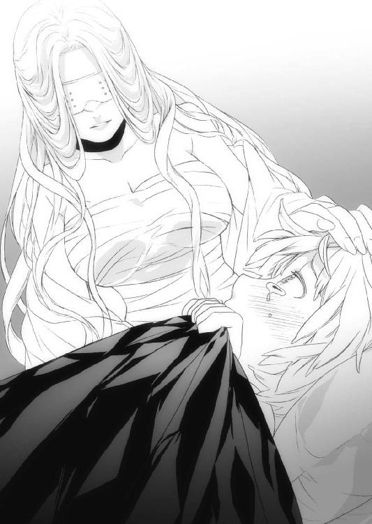
オリヴィアはライカの髪を撫でながら、少し首を傾げる。
「何故だ？」
そう問いかけるオリヴィアに、ライカは語りはじめた。
「銀獣人は、確かにアレンシアの最強種です。でも、すごく病気に弱くて、しかも男しか産まれてこない種族なんです」
オリヴィアはその話を、スフィアから聞いたことがあった。
故に、純血の銀獣人という者は存在しないのだ。
「昔から、僕らディルギニアの銀獣人はフリーレンの女性を半ば強制的に攫い、彼女らに子孫を産んでもらうことで生き延びてきたと、父が言っていました。
それはとてもよくないことだけど、そうしなければ僕らは滅びてしまう。当然ですが、そのせいで僕らとフリーレンの国ディルギニアは非常に仲が悪く、争いが絶えませんでした」
オリヴィアは口元を少し緩め、ようやく自分のことを語ってくれているライカを胸元に引き寄せた。ライカは真面目で素直で、争いが嫌いな少年だった。それが故郷を離れ、眠りものにされた父と帰りを待つ母のために、今やたった一人になってしまった銀獣人であるという理由でコルセアにやって来た。
その双肩には、アレンシアの運命がかかっている。ライカはそんな運命と、必死に向き合っていた。
「ところがコルセア王国が建国された頃から、僕らとディルギニアの関係は変わったそうです。あれだけ嫌われていたフリーレンたちの方から、暖かな場所に住まないかと言ってきたんです。はじめは罠だと反対する声もあったそうですが、結局僕らはそこに移り住みました。それまで住んでいた洞窟に比べれば、そこより悪いところなどないだろうと」
オリヴィアは当然、そのことを知っていた。ライカらが移された場所はかつてマールが生きた千年前、アレンシアの三分の二を支配したディルギニアの氷公と呼ばれたフリーレンの英雄、ディルギノの別荘「セスコム荘」だった。
セスコム荘には地下に巨大な空洞があり、地熱と陽光によって温められている、北にあって唯一の楽園なのだ。フリーレンたちは長らくその場を聖域としていたが、オリヴィアはそこを多額の金で買収していたのだ。
「僕の父や村のみんなは、全てコルセア女王オリヴィアさまのおかげだと言って、いつも深い感謝を忘れずに暮らしていました。女王さまにして頂いたことは、子供の頃から何度も教わってきました。
だから僕はこうして女王さまにお会いできてとても嬉しかったですし、その、力になりたいと、いつも思っていました」
オリヴィアは何度も頷いて、ライカを抱きしめた。
確かにオリヴィアは北の銀獣人を支援するために莫大な援助物資をディルギニアに送っており、それは今現在も続けられている。それは全て銀獣人の力を借りて、あの黒き魔導師リーゼを倒すためだった。
「なあライカ、フリーレンの国ディルギニアは北の大氷山脈にあって、大した産業を持たない弱小国家だ。作物を作ろうにも氷に阻まれる。工芸品を作ろうにも材料がない。そんな国だから、いつも金に困っていると予想できた。そうだろう？」
ライカはオリヴィアに抱かれながら、小さく頷いた。
かつてフリーレンの氷公ディルギノが今のジェドに侵攻し、アレンシアの三分の二を支配したその最大の理由が、自国の貧しさだったのだ。
もっとも、氷公ディルギノがマールに敗れて引退すると、ディルギニアはそれまで支配下においていた国々の反乱を鎮圧できず、また大氷山脈に押し戻されてしまったのだが。
「そんなディルギニアに銀獣人が住んでいると知った私は、すぐに使者を出した。もしその銀獣人たちを手厚く守ってくれるなら、コルセアはディルギニアのために支援を惜しまない、とな」
ライカは一生懸命、オリヴィアの言葉を理解しようと努めていた。まだ少年のライカには、オリヴィアの話す政治的な話は受け止めるのに努力を要するのだ。
「しかし女王さま、何故、銀獣人が必要だったんですか？」
「はじめはアレンシアを混沌に叩き落としている魔導師リーゼを倒すためだった。だが今はそれよりも、黒夢の魔王を撃ってもらいたいからだな」
「!?」
さすがのライカも、その言葉の重さは瞬時に理解できなかった。
「魔王はおそらく銀獣人でなければ倒せない。だが、ただの銀獣人では駄目なのだ。それは先の銀獣人狩りで実証されている。黒夢の魔王を倒せるのはやはり影砲士しかいない」
ライカの困惑は、頂点に達していた。
「かげ、ほうし、ですか？」
「そうだ。まずは銀獣人の力を使いこなし、その後にお前を影砲士にする。色々思うこともあるだろうが、魔王も銀獣人である以上、普通のやり方では歯が立つまいからな」
それを聞いたライカは、宝石のような青い瞳を見開き、オリヴィアを凝視した。
「魔王が、銀獣人ですって!?」
呆然とするライカに、オリヴィアはもう一度ライカの頭を撫でて立ち上がった。
「そうだ。だから明日から、また特訓だぞ」
オリヴィアはそれだけ言い残し、紫焰を手にして部屋から出ていった。
それから十日間、オリヴィアは政務を側近の大神官グウェイルに任せ、城の訓練場でひたすらライカを鍛えた。集中的に訓練を受けたおかげで、ライカはかなり力を使いこなせるようになってきたが、それでも時々気が散っているような素振りを見せ、オリヴィアを苛立たせた。
その日のライカも集中力に欠けていた。そんなライカに、オリヴィアはとうとう剣を石の床に叩きつけて折り、怒り叫んだ。
「ライカ、何がそんなに気になる!? ここ最近、集中力も気魄も感じないぞ！」
両手両膝を地面につき、肩で息をするライカが、オリヴィアに向かってぽそりと言った。
「魔王は、銀獣人なんですよね？」
「ああそうだ。それがどうした!?」
ぽたり、と汗ではない滴が目からこぼれて地面を叩いた。
「僕も、銀獣人です。魔王は数少ない同族なんです。それをこんな......こんな方法で......」
ざりっ、と砂を踏む音がライカの耳に入ると、ライカの頰にオリヴィアの拳がめり込んだ。地面を転がりながら吹き飛ぶライカは煉瓦の壁に背中をしたたかに打ちつけて、呼吸が一瞬止まった。
ライカの瞳から、涙が弾け飛んだ。
「うぐっ......はっ......」
オリヴィアはその唇を血が流れるほど嚙みしめていた。
「なあライカ。お前の母は、お前を愛していたか!?」
唐突なオリヴィアの質問に、ライカは慌てて首を縦に振る。
「奇しくもお前が言っていたではないか、銀獣人は男しか生まれないと。だからお前の母はフリーレンなのだ。そうだろう？」
ライカは眉間に皺を寄せ、怪訝そうに俯いた。
「ならば、魔王となった銀獣人カナクの両親のことをかんがえたことがあるか？」
その言葉にライカははっと目を開き、折れた剣を手にしたオリヴィアを見た。
「教えてやる。魔王の父はガザラ王国の英雄、影砲士スフィアだ。慈悲深くて優しくて、少し世間知らずなところもあったが、何度も何度もその身を削ってガザラを守ってきた、誇り高き銀獣人だ」
オリヴィアは視線を落とし、悲しげな口調でライカに告げた。
「そして魔王の母は、父親の命令でウルグローブの牧場からスフィアの許にやって来た。はじめは嫌で嫌で仕方がなかったが、傷つきながらも笑顔を向けてくれたスフィアの姿を見て、気が変わった。私はずっと、この人の妻でありたいと心の底から思うようになった」
オリヴィアの声が震える。剣を握りしめ、絞り出すように言葉を続けた。
「あたしは、スフィアを世界で一番愛していた！ スフィアとの間にできた子も同様だ！」
ライカは口元についた土を拭い立ち上がる。
「だがそれを、あの女......リーゼが、全て奪った！」
ライカの瞳から再び涙が溢れる。それは体の痛みからでも、銀獣人としての軋轢からでもなかった。
「大好きで大好きでたまらなかった人を殺され、愛しい愛しい我が子を魔王にされ......この気持ちが、この悔しさが、お前にわかるかライカ！」
「............」
まだ幼いライカには、そんな壮絶な人生を送ってきたオリヴィアにかける言葉が見つからなかった。
「私は、私から全てを奪ったリーゼという魔導師を何としても討つ。アレンシアのために、夫スフィアのために、そして私のために。だからお前は、是が非でも黒夢の魔王を討ち果たせ」
オリヴィアの声は平静そのものだったが、手が、震えていた。
「女王さまは......それで、よろしいのですか？」
オリヴィアは口元を押さえ、顔を背けた。
「この、母の手で、息子を......斬らせてくれるな」
オリヴィアは泣いていない。だが、それは風に乗ってライカの心に染み込んだ。
愛しさ、悲しさ、無念さ、憤怒、憐憫......あらゆる感情が混ざっている。ライカは袖で涙を拭い、大きく息を吸って叫んだ。
『ぼ、僕はもう迷いません、最高の影砲士になってみせます！』
ライカの瞳に、決意が宿る。そこにいたのは悩みに体と心を凍らせていた男の子ではなく、凜然とした意志を宿した一人の男の姿だった。
「......頼むぞ」
そんなライカを見て、オリヴィアはただ短くそう口にしただけだった。
第二章・裏 銀獣人【カナク】
ライカが銀獣人として目覚め、影砲士となる決意を固めていた頃。
アレンシア西の魔王の城では相変わらずカナクが黒夢を集めていた。
銀獣人のシンボルでもある銀の髪は、今やリーゼと同じ闇色に染められている。顔にも黒い蔦のような模様が浮き出ており、銀獣人らしい面影が徐々になくなっていた。
その瞳に力はなく、ただ呆然と虚空を眺めている。足の指から頭に生えた耳の先まで、余すところなく黒夢が浸蝕し、激痛でもはや動くこともかなわなかった。
「ゆー、りえ......ゆーり、え......」
カナクの胸に埋まった黒晶石は、凄まじい量の黒夢を集めてきていた。かつてこの石をイストリアルからアレンシアに持ち込んだリーゼは、黒夢を制御するマナの力を持っていなかったため、瞬時にして黒夢に全てを食われ、闇に落ちた。
だがカナクはその力に必死に耐え続けることができた。銀獣人であるカナクの力は、黒夢の力と拮抗していたからだ。
とはいえ、アレンシア中から集まってくる黒夢をそう易々と制御できるはずもない。カナクは不安定になりながら、ただ必死にユーリエの名を呟いて耐えていた。
そんなカナクの傍らにはユーリエの腕輪を与えられ、彼女の姿になった夢魔が佇んでいる。リーゼが勝手に生み出した偽者のユーリエだったが、カナクはその夢魔から腕輪を奪い返すようなことはしなかった。
姿形は彼女そのものだが、本物のユーリエとは比べるべくもない。おしとやかで清楚な姿の裏側に、我が儘で、自分勝手で理不尽で闊達で、カナクのことを本当に好きで、好きで、本当に大好きで......。
だが、今のカナクにとって顔色一つ変えない偽者とはわかっていても、ユーリエの姿を見るだけで黒夢なんかに負けてたまるかという気持ちが湧き起こる。
ほんの小さな抵抗だが、それができることがとてつもなく重要だった。
「ユーリエ......ユーリエぇえええあああああああ！」
カナクが突然、立ち上がった。その瞳は、傍らの夢魔に向けられている。
「ま、魔王、さま？」
夢魔は自分が消されるのではないかと思い、少しだけ表情を曇らせる。カナクは荒々しく夢魔の手を引いて抱き寄せると、まるで縋るように夢魔の体に腕を回した。
「ううううううううううううああああああああああああああああああああああああああああああああああああああああああああああああああああああああああああああ！」
狂ったように叫ぶカナクを、夢魔はきつく抱きしめた。
ユーリエの想いを基に作り出された夢魔なので、当然カナクのことを愛する気持ちを持っている。だが夢魔は、カナクが自分を受け入れないことを理解していた。
カナクが今苦しんでいるのは、本物のユーリエに会うため。千年前に行き、マールとして生きた彼女のそばへ行くためだ。
夢魔は黙って愛する人の胸に顔を埋め、その人の苦しみが少しでも和らぐようにと背中を摩るだけだった。
翌日、虚ろな表情で黒夢を受けるカナクと、その横でカナクの手に自分の手を置くユーリエの姿をした夢魔の前に、リーゼが現れた。
「魔王さま、ひとつご報告があります」
いつも泰然とした微笑みを湛えているリーゼにしては珍しく、不機嫌な表情だった。
「私はどうやら銀獣人を一人、見逃していたようです」
カナクは身を動かさず、その目だけをリーゼに向けた。
だが口をきける状態ではないことを悟ったリーゼは、カナクの返事を待たずに話しかけた。
「まだ反応が小さいのでおそらく子供だと思われますが、その反応がある場所が気にくわないので、これから行って参りますわ」
荒い口調だった。やはり、かなり苛ついている。
「その、場所と......は？」
しわがれた声で、カナクがそう言った。
「コルセア王国」
それを聞いて、カナクは再び天を仰いだ。
コルセア王国......つまり、オリヴィア女王が銀獣人を迎え入れたということだ。
コルセアの烈翔紅帝、オリヴィア女王。ユーリエを失ったカナクにマールの墓のある地に村を造り、そこで聖神官としてずっとユーリエを弔ってほしいと言ってくれた、情け深い女王だ。
カナクはオリヴィアに対して重恩があるし、それを忘れたことはなかった。そのオリヴィア女王が、銀獣人を迎えたということは、黒夢の魔王たるカナクを倒すという意思表示でもある。
「そう、か」
がくん、と力なく首を落とし、胡乱な目つきでリーゼを見る。
「私はこれからコルセアに行ってきます。どんな理由があれ魔王さまが黒夢を集めるのをやめてしまったら、黒夢の暴走を許し、この世界は衰滅してしまうのですから」
それが、カナクを縛る鎖でもあった。
「では、これにて」
リーゼはカナクに一礼し、背を向ける。
「ひとつ、尋ねたい」
絞り出すようなカナクの声に、リーゼはぴたりと足を止めて振り返った。
「ルイ・ソーン......あれは、なんだ？」
沈黙が、二人の間に落ちる。窓の外が一瞬光り、稲妻が天を走った。
「魔王さま。彼の中の黒夢、しっかりと探ってみたことはございますか？」
それはカナクも既に何度か試みたことだった。
ソーンの中には今まで感じたことがないほど強く、大きく、深く、そして濃い黒夢のようなものが宿っていた。それはしっかりとソーンの体に根付いてしまい、黒夢の魔王たるカナクでも奪うことが出来なかった。
リーゼはふっと笑い、カナクを凝視する。
「このアレンシアには稀少種族と呼ばれる人種が三つあります。一つは魔王さまと同族の〝銀獣人〟、一つは精霊界よりやってきたエルフ族の祖〝フェイエルフ〟、そして最後は？」
カナクはかっと目を見開いた。
「ドラゴン、か？」
「その通りです。ソーンの中に入っている黒夢は、さしもの魔王さまでもどうにもならないかと存じます」
銀獣人は確かにアレンシアで数ある種族の中でも最強のマナを持つ。だが、それは別格であるドラゴンを除いて、ということだ。
ドラゴンは目撃証言から、現在アレンシアで四体確認されている。
西の砂漠の金翼竜エキドナム。
大氷山脈の白爪竜レディ・ヴェルファリア。
ジェドの緑牙竜エレネディオ。
そしてフェルゴートの蒼尾竜ラザーフェニアである。
これらは生物というより、もはや天災に近い。もっとも、蒼尾竜ラザーフェニアは二十年ほど前にフェルゴート軍とソーンたち五英雄によって倒されたが、それでも散々暴れまわって弱り切っているところを、さらに寝込みを襲って辛くも勝利したにすぎない。
もしラザーフェニアが万全であれば、五英雄などこの世に存在していないだろう。
「という、ことは......怨念の、ような、ものか」
「ご推察の通りです」
カナクは再び口をつぐみ、目を瞑った。
「ソーンは、いま、どこに？」
「一階の兵宿舎跡です。彼はいつもそこにいますわ。少々意識混濁が見られるので、お話しすることはできないでしょうけれど」
意識混濁......つまり、今のカナクとあまり変わらない状態だ。
それだけ大きな力が、何故急にソーンに宿ったのか。それに、その黒夢は今までどこに潜んでいたのか。ルイ・ソーンに関してはまだまだ謎が多い。カナクは少し調べてみる必要があると感じた。
「では、行って参ります」
そしてリーゼは微かに口元を緩め、謁見の間を出て行った。
第三章・表 ミスティカの図書館【レニウス】
リーゼがアレンシア西方から東に向かったその時、ネウをリーダーとする一行はミスティカ公国の首都リビリアに足を踏み入れた。
永世中立国、ミスティカ公国。アレンシアでは珍しく、どの国とも同盟を結ばずに独自の文化を築き上げてきた国であり、首都リビリアはミスティカが誇る要害でもある。
アレンシア北東部最大のジュリキュール川から引き込んだ五層の堀、全ての方角に建てられた塔、決して分厚くはないものの、防護魔法がかけられている城壁、建物の全てが大軍の障壁となるよう設計された町並み。
それは東にガザラ王国、西にログナック、南にタロン王国と比較的不利な位置にある中で、永きに亘って中立国を貫き通してきた礎でもあり「知識は誰の手によっても支配されてはならない」というミスティカ公家の伝統を体現していた。
ミスティカは自国を囲う三国に対し同盟は組まないが、どこにも攻め込まないという意思を貫いていたため、長らく戦禍を免れてきた。
だが、そんな高尚な精神は黒夢の魔王の下僕、夢魔には通じるべくもない。どことも争わず、どことも同盟を結ばないということは、裏を返せば自国が危機に陥っても、どこからも助けが来ないということでもある。そういう意味では、現状で夢魔の災厄に対して厳しい立場に置かれている国でもあった。
レニウスたちはリビリアに到着すると、首都中心部から少し外れにある宿屋「蠟燭亭」に部屋を取り、荷物を置いて休息をとった。
リビリアは芸術性の高い町だ。四角く切り出した石をはめ込んで造られた道や、紅の月と蒼の月の上で手を取り愛を語る恋人をイメージした街灯、宿の部屋から眺める均整のとれた美しい町並みは、有名な吟遊詩人が歌の題材としてよくこの町を選ぶというヤヒロの話も頷ける。
「先に断っておくが、俺はあの図書館には行かねぇからな」
アルマがベッドで仰向けに横たわり、目を閉じて言った。
「え、どうして？」
隣のベッドでアルマと同じく俯せで横になるネウ。
「この国は盗賊に厳しいからな。ただ入国するだけならともかく、何かやらかして失敗すれば、おそらく命はない。俺が必要な状況になれば仕方ねぇけどよ、それまでは安易に顔を覚えられるような真似はしたくねぇ」
ネウは口を布団に埋め、目だけをアルマに向ける。
「そっか......じゃあ、仕方ない、ね......」
がくん、と首を落とすネウ。ここまでネウは馴れないパーティリーダーという役目を必死にやり通してきた。全てはカナクを救うんだという強い気持ちでここまで来たが、長旅だったこともあって疲労が顔に滲み出ていた。
「じゃあレニウス、今からあたしと図書館に行ってもらえませんか？」
ちょうど鎧を脱いでいたレニウスは、驚いてネウに視線を向けた。
「オレは構わないが、お前は──」
「だいじょうぶです！ 今は少しでも早く調べないと、いけませんから」
ベッドの上で両手を突き、瞳を潤ませてレニウスに懇願するネウの姿は、妙に艶っぽかった。レニウスは嘆息し、ズボンとシャツの上からセレンディアの正装である丈の長い、紅の刺繡が入ったガウンを着て帯を締め、ショートソードを腰に差した。
「......わかった。付き合おう」
「あ、ありがとうございます」
ネウは体を重げに起こし、捲れたスカートを直す。レニウスはネウと同じく疲れて目を閉じそうなアルマに告げた。
「おいアルマ、寝るな。お前はヤヒロと一緒にソーンについて聞き込みをしてこいよ」
「はー？ 何で？ めんどくせぇ......」
アルマが瞼を開き、いかにも面倒くさい、という顔でレニウスを見た。
「それいいね、私もちょうどこれから酒場に行こうと思ってたから」
ヤヒロがストリングス・ボウを壁に立てかけ、アルマの顔を覗き込む。はらりと零れる水色の髪がハーフエルフ独特の色気を放っていた。
「ねえアルマー、酒場ならいいでしょ？ 一緒に行ってくれない？」
足首まである長めのスカートに、僅かな膨らみのある胸、まだまだ子供の体なのに、ヤヒロは妙に妖艶なところがある。
「う......そうだな、酒場ならいいだろう」
「わあ、嬉しい！」
ヤヒロが手を広げてぱちんと叩いて喜ぶと、アルマは顔を赤らめて起きあがる。レニウスとネウは視線を交わし、アルマに向かって口を合わせた。
「ロリコン」「超ロリコン」
アルマの目が丸くなる。
「違う！ そ、そうじゃなくて──」
「じゃあ行くか、ネウ」
「その、急だったから──」
「行きましょ、レニウス」
アルマの言うことは完全に無視し、レニウスとネウは部屋から出ていった。
「ち、違うんだああああああああ！」
扉の中から、悲痛な声が響いた。
ミスティカはその中心部にミスティカ大公が住む城と、ミスティカ大公を支える貴族たちの居住区がある。そこを最も大きくて深い堀が囲み、二層目にはミスティカ中央図書館、劇場、医療施設などがある。三層目はミスティカを守る軍事施設があり、四本の塔が立っている。四、五層目は一般市民たちの居住区、商業施設や馬小屋など、町を構成する主な設備が軒を連ねている。真上から見ると、巨木の年輪のような町だった。
レニウスらが宿泊する宿屋は全ての堀の外にあるので、図書館に向かうには四つの堀を越えなければならない。堀には頑丈そうな石の橋が三カ所ずつかかっていて、中央のミスティカ大公邸へと続く石畳の道に繫がっていた。
「ミスティカ中央図書館......早くカナクさんを救う手段が見つかればいいんですけど」
ネウは草人を両肩に乗せ、潤んだ瞳には寂しさが宿っていた。
「そうだな。だが、本当に大丈夫か？」
レニウスはただ、短くそう言った。
「あたしは、一刻も早く黒夢をやっつける方法を調べた......わゃっ！」
橋を構成する石畳の隙間に足を取られ、べたん、と転ぶネウ。
本当によく転ぶ娘だと半ば感心しつつ、レニウスは丸見えになっているぱんつに視線を向けないよう気を遣いながらネウに手を差し出す。
「あ、ありがとうございます」
しょぼんと項垂れて、ネウは弱々しくその手を取った。
カナクが千年前に行きたがっていて、そのために夢魔を生み出していることは知っているが、カナクがいつその悲願を達成してしまうのかは全くわからない。
今日かもしれないし、十年後かもしれない。
だからネウは疲れた身体に鞭打って、図書館に向かって歩いている。
ネウはマールの村の聖神官になっていたカナクの許で修道士として修行し、カナクが魔王となって姿を消してから、コルセア女王オリヴィアの命で聖神官に抜擢された。
レニウスにしてもセレンディア魔法学校からの親友にして、義妹のユーリエが本気で愛した男、カナクを救いたい気持ちはある。
だがレニウスは、自分とネウの想いにはかなりの温度差があると感じていた。
「なあネウ、お前はカナクをそこまで？」
つい、レニウスの口からそんな言葉が漏れる。
ネウは少し頰を染めて、小首を傾げながら言った。
「はい、大好きです！」
臆面も無く断言されて、聞いた自分がバカだったとレニウスは後悔した。
「よし、がんばろうな」
「はいっ！」
二人は再び、橋を歩みはじめた。
橋の下ではジュリキュール川から引いてきた水が勢いよく流れ、水の玉をはじけさせている。石と靴底が奏でるこつこつ、という軽やかな音が心地良い。
「そういえばネウは早くからここミスティカの図書館にカナクを救う方法があると確信していたようだが、何か根拠はあるのか？」
レニウスの問いに、ネウが応える。
「ミスティカ中央図書館といえば種族、歴史、事件、魔法、剣術書、聖剣や魔剣......この世のありとあらゆる知識が収められているという場所です。カナクさんは黒夢という得体の知れない力に頼ろうとしているので、それを調べるならここしかないと思ったんです」
「なるほどな......じゃあネウは、ミスティカに来たことはあるのか？」
「はい、二、三度来たことはあります。ただその時は図書館に近づくこともできなくて、その、結局、遠くから指をくわえて眺めるだけでした」
レニウスはネウが何を言いたいのかを、ネウの悲しげな瞳で理解した。
ネウは陽種族とは敵対関係にある闇種族、ダークエルフであり、ここミスティカは陽種族の国だ。よくよく注意して周りを見てみると、町の人々はネウを目にすると顔をしかめ、眉間にしわを寄せていた。特にこの町は線の細い魔術師風の人間や頭の良さそうなフォレストエルフが多かったため、ネウは存在が際立っている。
早く気づいていれば、もう少し人通りの少ない道を選んだりできた。レニウスはもっと気を遣ってやればよかったと反省した。
「すまないネウ、お前の立場に気づかなくて」
レニウスが素直にそう言うと、ネウは「あはっ」と明るく笑った。
「気にしないで下さい。今のあたしはただのダークエルフではなく、れっきとしたコルセアの聖神官ですから！」
レニウスはネウの顔つきを見て、自分の心配は杞憂であることを悟った。
そうだ、ネウはただのダークエルフじゃない。何度も辛い目にあって、それを乗り越えて、正式な聖神官として認められた凄い女の子なのだ。
「あ、あそこが図書館の入口じゃあぅはんッ!?」
そう言いながらまた石畳の隙間に足を取られ、派手に転ぶネウ。今度は膝を擦りむいた。
「うぐう、いだいー......」
この道で四回も転んだネウもさることながら、もはやそれを織り込み済みで、ネウの肩から華麗かつ優雅に着地する草人らもただ者ではない。
「なあネウ、そろそろその服を替えたらどうだ？」
その言葉に、ネウはきょとんとしていた。
「な、何でですか？」
「そんな短いスカートで四回も転ばれたら、どう視線を外してもさすがに白いぱんつをはいていることはわかってしまうしなあ」
「はわっ!?」
ネウはボッと顔を赤くし、スカートを押さえる。
「聖神官なら聖神官らしく、丈の長いローブとか銀の胸当てとか着ればいいじゃないか。何でそんな、いかにもダークエルフですというような服を着ているんだ？」
レニウスは真っ赤になるネウに手を差し出し、ネウは立ち上がってお尻についた砂を払った。確かにネウが身につけている服は、およそ聖神官とはほど遠い恰好だった。
「こ、この服はですね、はじめてグレイウッズに行った時に買ったんです。それまでボロボロの作業着と煤けたローブしか持ってなかったので、グレイウッズの女の子がこの服を着ていて、凄く可愛いなって思ったんです」
「......そうか、その服はネウにとって思い出の品なんだな」
「はい。ちょっとスカートが短くて恥ずかしいんですけど、この服を着ると、グレイウッズの森を思い出せるので」
旅人や冒険者にとって、故郷の品というのは特別なものだ。レニウスだって今身につけているガウンはセレンディア製であるし、故郷から遠く離れて旅をする者ほど、そういう物への思い入れが強いものだ。
「じゃあ無理に着替えろとは言わないが、あんまりサービスしなくてもいいぞ」
「べっ、別にわざとじゃありませんようっ!?」
腕を振り、頰を目一杯膨らませて怒るネウに、レニウスはダークエルフでも可愛気のある女の子はいるもんなんだなと思い、顔を綻ばせた。
やがてミスティカ中央図書館の前にたどり着いた二人は、揃って目を丸くした。
図書館の前には城でもないのに衛兵が立ち、頑丈な鉄製の柵まで備えられている。綺麗に磨かれた大理石の階段が眩く輝き、奥には古くて重そうな木の扉が図書館への道を閉ざし、そこにも二人の衛兵がいた。
「図書館にしては、ずいぶん厳重だな」
レニウスは驚嘆しながら、ネウと共に歩いていく。
「!?」
衛兵がネウを視界に捉えると、慌てて手にしていた槍を向けてきた。
「ここは神聖なる知の聖域、ミスティカ中央図書館である。闇種族への規律が緩くなったとはいえ、入館までは許可できない。引き返してもらおうか」
丁寧な口調だったが、要は門前払いだった。
その衛兵はミスティカ公国でも選りすぐりの戦士だろう。背丈は二人ともレニウスよりやや低かったが、ミスティカ人が好む銀色に着色された鎧の隙間から、鍛え上げられた筋肉が覗き見える。
どこの国の衛兵も大体日に焼け、無精ひげを生やしているものだが、この二人は日には焼けているものの、短く整えた髪に髭一本ない顎は、まるで風呂上がりのようだった。
「ミスティカ人の清潔好きは国民性だと聞いたことがあるが、なるほどな」
レニウスはそう思いながら、ネウに向けられた槍を摑む。
「な、何を!?」
動揺する衛兵に、レニウスが応えた。
「オレはレニウス・セレンディア。そしてこの女性はコルセアのネウ聖神官だ。無礼な真似は、慎んだ方がいいんじゃないか？ 下手をすれば国際問題だぞ？」
レニウスがその名を出すと、二人の衛兵の顔に困惑の色が浮かぶ。
「レニウス・セレンディア......もしやセレンディア王の弟君にして、中央平原の!?」
レニウスはにやっと笑い、槍を放す。
「何故君がそこまで知っているかは聞かないでおくが、紛れもなくオレはその中央平原のレニウスだ」
二人の衛兵はレニウスのことを知っていたが、それがコルセアの聖神官というネウと何故一緒にいるのか、しかもどう見てもダークエルフなのにと混乱した。
「そ、それで、セレンディアの王族とコルセアの聖神官殿が、ここに何の用ですか」
衛兵の一人が、おずおずとレニウスにそう尋ねる。
「図書館に来たんだ、調べ物に決まってる」
レニウスは人なつっこい笑顔を見せ、コルセア女王オリヴィアから賜った「紅の徽章」を衛兵に見せる。それに倣ってネウも胸元に輝く聖神官の首飾りを無言で指さした。
「我々セレンディアはコルセアと強固な同盟を結び、ここにいるネウ聖神官と共にアレンシアを苦しめる黒夢の魔王を倒す鍵はここにしかないだろうと、わざわざ旅をしてきた。
今は、陽種族だ闇種族だと小さなことを言っている場合ではないことくらい、君たちも理解しているんじゃないのか？」
レニウスの言葉に衛兵たちは怯んだ。王族の風格を滲ませるレニウスに対し、この衛兵たちではあらゆるものが足りなかった。
「......仰る通りです。これはアレンシアの民として、お二人を後押ししないわけにはいきません。館長や館内の衛兵たち、司書、職員らにご無礼なきよう、あなたたちのご来訪をお伝えしておきましょう。館内までは私が案内します。さあ、こちらへ」
レニウスはにこりと笑って、ネウの背中を押した。
「レディ・ファーストで頼むよ」
衛兵たちは改めて、レニウスとネウに頭を下げた。
コルセアの象徴が天を衝かんばかりの高さを誇る「尖塔」であるとすれば、ミスティカの象徴は言うまでもなく、この「ミスティカ中央図書館」である。
頑強な煉瓦造りで、大きさの違う円柱を七段重ねにしたような建物で、上に行くに従ってその円柱がどんどん小さくなっていく造りだ。そして建物の頂上には、知識を意味する木を四重の円で囲ったマークが入ったミスティカの国旗がはためいている。
この図書館は、それ自体が城ともいえるほどの規模だった。
衛兵はネウとレニウスを先導し、他の衛兵たちに事情を話して道をあけてくれた。さらに館長にも報告してくると言い残し、レニウスらを残して部屋の中心に歩いていった。
図書館の中は涼しく、室内であるにも拘らず微かな風が吹いていた。外観からも想像できた通り、室内の壁は円筒形になっており、その広さは数千人の部隊ひとつが丸ごと入るほどだった。
「はわあああ、す、すごい......はわああああっ！」
レニウスの隣で、ネウが寸分違わぬ並び方をした巨大な書架や、読書をするために設けられているにしては少々贅沢なガラステーブルとソファに目を輝かせる。さらには軽食や写本を販売する売店と、テラスまで備えられていた。
だが、レニウスはこの静かで広い図書館に違和感を覚えた。
人が殆どいないのだ。これだけ設備が充実していれば、知識を好むミスティカ人たちの憩いの場になっているはずだが......。
その時、ネウが拳に力を入れて叫んだ。
「よーし、元気が湧いてきました！ 行ってきます！」
「あっ、こら、ネウっ！」
言うや早く、ネウは同じく拳を天に突き上げる草人たちと共に、瞳を輝かせながらこの知識の宝庫に飛び込んでいった。
「あいつ、何を調べるのかきちんとわかってるのか？」
レニウスは不安顔で溜息をつき、辺りを見渡す。ネウは書架ばかり目が行っていたが、レニウスはそれよりもこの図書館の構造に興味を持った。
天井がやたらと高い。部屋は外から予想した通り円形になっていて、構造的には塔に近いのだが、妙な違和感があった。
（そうか......ここは、上に通じる階段がない。どうやったら上の階に行けるんだ？）
通常こういった建物の階段は壁際に沿って造られるか、一本の柱を突き刺し、それを支柱とした螺旋階段があるものだが、このミスティカ中央図書館には絵画や調度品などはあるものの、それらしきものが全く無かった。
（さてと、オレはどうしようか）
そう思っていた時、レニウスの正面から一人の司書が歩いてきた。
「おお......」
この時レニウスは、心底この図書館に来てよかったと思った。
背はレニウスとあまり変わらず、金色の髪を几帳面にうなじのあたりで揃え、黒いスカートがよく似合っている。薄手の白いブラウスの上からでも容易に想像できる豊満な肉体に思わず想像力をかき立てられる。目つきが鋭く、銀縁の眼鏡と相俟って知的な雰囲気を持つ人間の女性だった。
「失礼」
考えるより先に、口が動いていた。
「はい、何かご用ですか？」
その知的な容姿とは裏腹に表情ひとつ変えない、実に平静たる対応だった。
「これだけ広大な図書館なのに、人の姿は殆どないんだな。何故だい？」
司書は眼鏡をくいと上げて話す。
「世の中は黒夢の魔王と夢魔のせいで恐々としています。こんなご時世に、読書を愉しむ心の余裕がある人が少ないんじゃないでしょうか」
ふむ、とレニウスは呻く。言われてみれば、確かにそうだ。
「おっと失礼、自己紹介が遅れたね。オレはレニウス、旅の聖剣士だ」
そう言ってレニウスは右手を差し出す。
司書はふっと軽く笑みを零し、その手を握った。
「私はマリアナと申します。ここミスティカ中央図書館で司書を務めています」
そう言ってにこっと笑うマリアナは、とてもチャーミングだった。その時レニウスの目に、柱にかけられた時計の針が見えた。
昼を食べるにはいい時間だった。
「そろそろ昼時だね。どうだい、この軽薄な男とランチをご一緒しないか？」
マリアナは口元を緩め、目を細めた。
「ご自分のことを軽薄だなんて......面白い方ですわね」
レニウスはにっと笑い、彼女をテラスへと招待した。
周囲にはよく磨かれた白い裸婦の彫刻や丁寧に刈られた木々があり、中央に設置された小さな噴水が水を跳ね上げている。風がほどよく入り、日当たりも抜群だった。図書館の施設というよりは、要人をもてなす迎賓館にあってもおかしくないような、美しい庭園のほとりに造られたテラスだった。
レニウスはマリアナを一番涼しげな席に座らせ、自分は対面に腰を下ろす。レニウスが左手を上げると、退屈そうにしていたウェイターがすぐに近づいてきた。
「ここで出せる最高のサラダとワインを二つ、頼むよ」
ウェイターは軽く一礼し、俊敏な動きで立ち去って行った。
「慣れてらっしゃるんですね、こういうところ」
マリアナは眼鏡を外し、レニウスに聞いた。
「いいや、慣れてなんかないさ。ただオレは美人と食事を共にする時は、まずサラダとワインって決めてるだけだ」
マリアナは「まあお上手」とだけ言い、レニウスを見つめた。
ほどなくして注文した品がテーブルに並ぶと、二人はグラスを当てて乾杯した。
「で、そのレニウスさんは私から何を聞き出したいのでしょう？」
ワインに口をつけ、マリアナは淡々と聞いた。
「こんな時でなければもっとゆっくり時間をかけて君を口説きたいところだが、事情が事情なもんでね。率直に聞こう。アレンシアを救うため、君に協力してもらいたい」
「アレンシアを？」
マリアナの目に猜疑心が宿る。レニウスはずいっと体を前にずらして、マリアナの瞳を覗き込んだ。
「アレンシアは今、黒夢の魔王の脅威に晒されている。夢魔は各地で暴れ回り、被害者は増える一方だ。このミスティカでも、ヤツらには手を焼いているんじゃないのか？」
「それは......確かに。夢魔のせいでこの図書館を守る衛兵も駆り出されて、警護が甘くなっています。でも、私に何か協力できることがあるんでしょうか？」
レニウスは体を引き、マリアナと同じくワインに口をつけた。
「衛兵から聞いていないか？ オレは西方セレンディア王国からの使者だ。コルセアの聖神官と共に黒夢の魔王に対抗できる術を求めて、ここまでやって来た」
その瞬間、マリアナの目が大きく見開かれた。
「レニウス、セレンディア......中央平原で活躍して、セレンディアを一国にのし上げた立役者の名前じゃないですか！」
今度は少し椅子に深く腰掛け、静かにワインを口にする。
自分が喋る時は前に、聞く時は後ろに。そうすることでレニウスの言葉を聞き逃さないよう相手に届け、相手の言葉は大きな声で話させる。
それがレニウスの交渉術だ。
「そういえば衛兵たちもオレを知っていたな。ここまで噂が届いているとは光栄だね」
レニウスが腰を引いたことで、自然とマリアナが前に出る。
「それは当然だと思います。我々は中立国として、各国の動向を独自に調査していますから。それでレニウスさんは何を調べたいんですか？」
「黒夢の魔王、いや魔王だけじゃない。黒夢やイストリアルという単語に関して、情報を集めたい。既にオレの連れであるコルセア聖神官のネウが調べているが、これだけ広大な場所をただ闇雲に一冊ずつあたっていては、何年かかるかわからない。
だから君に協力してもらいたいんだ。黒夢、夢魔、イストリアル、それにここの図書館に詳しい人物に、思い当たるものがあれば教えてほしい」
マリアナは「ふむー」と息を吐き、腕を組んで目を閉じた。
「黒夢、イストリアル。それらは北東ガザラ王国の伝承に残されています。子供向けの絵本とか、あとは二階のガザラ王国伝あたりに、ひょっとするとそういう本があるかもしれません。それと......」
マリアナはずいと身体を前に出し、たわわな胸がテーブルに触れそうになる。
触れそうで、触れない。この絶妙な位置が実にいいなとレニウスは心の奥で思う。
「私はミスティカの学校を卒業後、もう数年この図書館で働いています。私より熱心で、詳しくて、この図書館に詳しい人物をご紹介はできません」
「ほう、何でだ？」
マリアナの理知的な瞳を覗き込みたいのに、服から零れそうな胸元にどうしてもちらりと視線が向かってしまう。悲しい男の性だった。
「だって、私より詳しい方はいませんから」
そう言って鼻先にずれた眼鏡を直し、はらりと流れる髪をかき上げて微笑むマリアナ。白いうなじがレニウスの瞳に眩しかった。
「それは失礼した、マリアナ教授殿」
「まあ」
二人は笑い合い、ワイングラスをかちんとぶつけた。
「じゃあ、オレとネウに協力してくれるかい？」
「勿論ですわ。司書として全力を尽くしましょう」
レニウスはまず心強い味方を得たことを喜んだ。戦でもそうだが、その地を知るものを味方につけるのは、その後の戦局を左右しかねないほど重要なことだ。
「じゃあまず、この図書館の構造を聞きたいな。随分高い塔だが、この中は蔵書しかないのか？ それと、こういう建物は大体外壁に沿って階段があるものだが、それらしきものもない。どうなってるんだ？」
「えっと、この図書館は中央にある魔法昇降床で移動するんです。それで、五階までは一般人でも手にできる蔵書がありますよ」
「じゃあ、それより上は？」
「六階は私たち司書や職員たちの更衣室と、館長の部屋があります」
「へえ、じゃあ七階が最上階なのかな？」
レニウスの目つきが微かに変わる。彼が本当に聞き出したい情報は一般公開されている蔵書ではない。
「七階はですね──」
そこでマリアナはハッとして口を押さえる。
「七階は、何だい？」
「あ、ごめんなさい、今のは忘れて下さい」
レニウスの直感が、七階に何かがあるということを敏感に受け止めていた。
「なあマリアナ、隠さずに教えてほしいんだ。ひょっとしたらミスティカの、いやアレンシア全土を救う情報を君が握っているかもしれないんだから」
レニウスは体を前に出し、マリアナの瞳を射貫く。だが困惑したマリアナは「ごちそうさま」と言い残し、そそくさと席を立ってしまった。
「やれやれ、最初のデートは失敗か......」
嘆息して見上げた先には、図書館の頂上にはためく国旗があった。
「いや、そうでもないか」
レニウスはその言葉を胸にしまって、図書館内に戻って行った。
その日の夜。
レニウスはネウ、ヤヒロ、アルマと共に一階にある酒場で夕飯を済ませ、部屋に戻った。
この町での拠点として宿泊している「蠟燭亭」はアレンシアではよく見られる形式の宿屋で、一階は飲食できる酒場、二階以上は宿泊のために使われている。
アルマはネウ、レニウス、ヤヒロら仲間たちとビールを飲みつつ、ミスティカの名物キザヤ豆と川魚の塩焼き、そして飲み物を一階で注文し、部屋に持ち込んでそれらを摘みながら卓を囲んでいた。
ジュリキュール川で採れる魚は身がもっちりとしているが、脂はあまりないのであっさりしていて食べやすい。そしてキザヤ豆のほうはミスティカの特産品である。小指の先ほどある大きめの豆で、さっと茹でるだけで肉に似た芳香を持つ。柔らかくてジューシーでやみつきになる味なのだがサヤが固く、ヤヒロと草人たちは真剣にサヤを剝いていた。
そしてこの宿屋はその名が示す通り、辺りが暗くなりはじめると大量の獣脂蠟燭に火を点し、夜でも本に目を通すことができるほどの光量で室内中を照らす。実に知識の国らしい、趣のある宿屋だった。
「で、まずはどうだったよ、アレンシアの図書館は」
アルマは部屋の奥にある固めのソファに腰掛け、そう聞いた。
「凄かったよ！ 専門書から子供向けの絵本まで、いーっぱいあって！」
ネウは目を輝かせ、少し興奮気味だった。
「それでね、一階の図書は貸し出しまでやってて、どうしてもみんなに見せたい本があって、借りてきちゃった！」
軽く興奮しているネウに、アルマが重い溜息をつく。
「結構あっさり本を貸し出すんだな。何かあるんじゃないか？」
「んー、まあ返さないと本を開けなくなる呪いにかかるので注意しろって言われた」
「い、意外とおっかねえな」
「それより見てよ、これ」
そう言ってネウが嬉しそうに見せてきたのは「いたずらぼうずとくろぼうず」という、まさに子供向けの絵本だった。
「絵本......はあ......何か言葉も出ねー」
「あっ、馬鹿にしたね!? 馬鹿にしたでしょう!?」
ぷんすか怒るネウから、ヤヒロが絵本を取り上げ、パラパラと捲る。
「折角本を借りられるのに、手にしたのが絵本じゃあ......って、あれ？ これは──」
確かにそれは子供の絵本だったが、その内容がネウの気を引いたのである。レニウスもアルマやヤヒロと同じく呆れたが、その絵本を開いて驚いた。
ネウはヤヒロから絵本を受け取り、ぱらぱらと開いた。
「この絵本はカナクさんも知っている物語だったんだ。あたし、聖神殿で何度か聞いたことがあったから。多分、この絵本のことだと思ったの」
ネウはあるページで手を止め、アルマらに見せる。
そして自分は声に出してそのページを読んだ。
『おばあさんは、いたずらをやめない子供に言いました。
「こらぼうずども！ あんまり悪さをすると、イストリアルからかげぼうずというおそろしいばけものがやってきて、おまえたちをつれていってしまうぞ！」
子供たちは首をかしげておばあさんに聞き返しました。
「おばあさん、いすとりあるってなに？」
「イストリアルというのはこのせかいとはちがうばしょなのさ。おまえたちみたいなわるい子供はそこにつれていかれて、ずっとねむらされて、ずっとつらいゆめを見せられるんだ」
まじめにはなすおばあさんの言うことを、子供たちはうそつきとよんでわらいながら走っていきました』
そのページにはその文章に合わせて、怒る老女と三人の笑う子供たちが描かれていた。ネウはそっとページをめくり、続ける。
『ずーっといたずらをやめなかった子供たちのまえに、とうとうほんとうにくろぼうずがあらわれました。ぜんしんがまっくろで、かたにしろいかめんをつけたくろぼうずは、のしのしとこどもたちにてをのばしてきます。
そのすがたにこどもたちはこわくてこわくて、ふるえあがりました。
「ごめんなさい、ごめんなさい、もうにどとしないから、ゆるしてください」
まっくろなくろぼうずはくびをふります。
こどもたちはなんどもあやまりましたが、くろぼうずはどんどんちかづいてきます。
「だれか、だれかたすけてー！」
その日から、三人のいたずらがだいすきなこどもが村からいなくなりました。』
黒い人影が、泣きじゃくる三人の子供を両手に抱えている絵が描かれたこのページは、子供でなくても背筋をぞくっとさせるものがあった。
「おいおいそんなモン、子供に見せていいのかよ！」
そうぼやくアルマに、ネウは本を閉じながら言った。
「この絵本は言うことを聞かない子供に読ませる本なの。元はガザラの伝承だけど、はっきりと〝イストリアル〟って言葉が出てくるわ」
「イストリアル、か......」
それはマールの村でリーゼが口にした言葉でもあった。
「さすがはミスティカ中央図書館だよね。このまま順調にいけば、まだまだ手がかりになりそうなものが出てくるかもしれないよ！」
ネウは絵本をテーブルに置いて、アルマの隣に座った。
「初日にしては上々なんじゃねぇの？ お前にしてはな」
珍しくアルマが褒めるものだから、ネウは思わず顔が熱くなった。
「で、レニウスのほうはどうだ？」
そう水を向けられたレニウスは、首を振って答えた。
「こっちはネウと少し違った方法で調べ物をしている。まだまだ準備段階だから、結果が出たら後でまとめて話すさ」
「あん？」
意味深な言葉に首を傾げるアルマに、レニウスが聞いた。
「それより、そっちはどうだったんだアルマ。ルイ・ソーンについて、何か摑めたか？」
何か巧くはぐらかされたように感じたアルマだったが、ひとまずそれは置いておくことにした。
「こっちはまだまだだ。なあヤヒロ」
いつの間にか草人たちを膝に抱えていたヤヒロがそう水を向けられ、頷いてソファに座るネウと壁に寄りかかるレニウスを見た。
「そうね、今日のところは酒場の下調べみたいなものだったし。ただこの町は人の出入りがほかの町と比べてあんまりないから、厳しいかもしれないけど......」
小さな声で、膝の草人たちに目を落とすヤヒロ。
「焦ることはねぇよ。こういう情報集めは運だからな。何つっても捜し人がフェルゴートの五英雄だからな。そのうち知ってるヤツが現れるさ」
アルマは意外と楽観的だった。
「さて、今日はもう休もっか。明日からまた手分けして、がんばろうね！」
ネウがそう言うと、その場にいた全員が「おおっ！」と気合いを入れていた。
それから六日間、ヤヒロとアルマはひたすら足を使って酒場を巡って旅人に話を聞き、レニウスとネウは朝から閉館まで図書館に通った。
ネウは一日一階を制圧する勢いで蔵書を読み耽り、時には通りすがりの司書を何時間も付き合わせた。だが黒夢とイストリアルに関する資料というのは、先の絵本以外に見つけ出すことができず、雑学と疲労だけがネウに蓄積していった。
レニウスは司書マリアナからデートの約束を取り付ける勢いで話を聞きまくっている。
アルマとヤヒロのほうも順調に情報を集めているようだが、情報をまとめるのは後日とし、その日もレニウスはネウと共に図書館へ向かった。
「ねえレニウス」
ネウが肩を落とし、弱々しい声をレニウスにかける。二人の草人はなで肩になったネウから落ちないよう、服をしっかと摑んでいた。
「何だ？」
そんなネウに対して日増しに元気になっていくレニウスに、少々苛つきを覚えた。
「各地の銀獣人伝説、アレンシアのダンジョン攻略指南、全魔法辞典、フェルゴートの五英雄伝説、夕闇の影砲士、世界の珍品名物全集、マジックアイテム大全......いろんなものを読んできましたが、なかなか黒夢とかイストリアルとか出てこないんですー......」
ここ数日ずっと本と格闘していたネウの顔には、さすがに疲れの色が浮かんでいた。
「レニウスも女の子に声をかけてばかりじゃなくて、少しは手伝って下さいよー」
ネウがそう言うと、レニウスは目を丸くしておどけて見せた。
「お、おいおい、何を言ってるんだ。オレだってちゃんとやることはやってるぜ？」
「女の子と仲良くすることがですかー？ そろそろリリルに手紙書きますよー？」
リリルと聞いてレニウスの顔つきが豹変した。
「そ、それは誤解だネウ！ オレはあの図書館に詳しい司書から、あれこれ情報を聞き出しているだけだ！」
「ふーん」
ネウはいかにも怪しいと目を細めて訝しむ。
「じゃ、じゃあ、その証拠に五階までの本をいくら調べてもオレたちが目的とする本は見つからない、ってことを教えておこう」
「はえ？」
首を傾げるネウに、レニウスは汗を拭きながらにこっと笑う。
「ええと、どういうことですか？」
「オレたちの目的は黒夢とイストリアルとは何か。魔王の力に対抗し、カナクを助ける方法はないのか、だろ？」
ネウがはい、と言って頷く。
「まず、銀獣人についての情報は五階までの蔵書にあるだろうな。もう既に調べはついてるんじゃないか？」
「確かに、四階に〝アレンシアの種族〟という本があって、それに記載されていました」
「じゃあ黒夢、イストリアルについてはどうだ？」
レニウスがそれらを挙げると、ネウは眉をひそめて首を振った。
「そうだろう。そう簡単に人目につくような情報なら今まで耳にしたことがあったはずだし、オレもセレンディア魔法学校で習っただろうからな」
そう言われて、ネウは聖剣士のレニウスがセレンディア魔法学校出であることを改めて思い出した。
レニウスはカナク、リリル、ユーリエの同級生なのだ。
「それでもオレが黒夢の力を実際に体感したのは、夢魔と戦闘した時がはじめてだった。ということは黒夢についての情報があるとすれば、一般人が閲覧できない所にあるとしか考えられない。即ち......」
レニウスは目の前にそびえるミスティカ中央図書館の頂上を指さした。
「立ち入り禁止の七階だ」
ネウはぽかんと口を開けて図書館を見上げた。
「じゃ、じゃあ、今日は館長さんに頼んで七階の蔵書を見せてもらいましょう！」
拳を握ってそう言うネウに、レニウスは首を振って応える。
「なあネウ、それが可能ならもっと早くそうしてると思わないか？」
「へあっ!? は、それは、そうですね......」
目的の本がある場所が予想できているのに、そこに行けない理由があるのだ。
「あの図書館の七階は一般人どころか、国主たるミスティカ大公ですら安易には立ち入れないんだとさ。行けるのは館長と、蔵書を手入れする一部の司書だけだ」
「ええ、ええっ!?」
ネウは素直に驚いた。
「七階はこの図書館の宝物庫みたいなもので、一冊数十万エルもするような高価な本もあるらしい。そんな場所に他国者のオレらが〝緊急事態だから行かせて下さい〟って言っても聞き入れられるわけがないし、仮にセレンディア王かコルセアの女王さまのお力添えがあったとしても、許されるかどうかはわからないだろうってさ」
ネウはむむー、と唸った。ここに来た時は本を探し出せればいい、くらいに思っていたのだが、まさかそこまで複雑な話になるとは思わなかった。
「どうだ、これが数日間身体を張って司書から聞き出した情報だ。ただデートしてたわけじゃないんだよ」
はっはっは、と笑うレニウスに尊敬と猜疑の念を同時に抱くネウだったが、結果を見ればレニウスのほうがネウより何倍も有益な情報を得ているのは確かだった。
「じゃあ、今日はどうするんですか？」
そう聞くネウに、レニウスは少しだけ真面目な表情で言った。
「ここまで情報を集めてきて、もう普通の方法で七階の蔵書を目にすることは不可能だと悟った。ここから先はオレじゃなくてアルマの出番だな」
アルマの名前が出たということは......レニウスがまっとうではない方法を考えているのは明らかだった。
「というわけで、今日はそのための前準備だ。図書館の館長に会うぞ。根回しはもう済んでいる」
「うえっ!?」
そう聞いて、ネウは少し緊張する。レニウスは笑顔でネウの肩に座る草人、カナちゃんとユーちゃんに視線を向けた。
「それとな、今日はこの二人に大事な仕事をしてもらう」
ネウと草人たちは訳がわからず、首を傾げた。
「いいか、よく聞いてくれ」
レニウスは歩きながら、とある作戦をネウたちに授けた。
レニウスたちは、いつもとは違う雰囲気で図書館にやってきた。
まずレニウスがカウンターの奥にいたマリアナを見つけると、これまで通り声をかけた。
「やあ」
忙しそうに働いていた彼女はレニウスの顔を見た途端に頰を染め、慌ててずれた眼鏡と乱れた髪を整える。
「あ、い、いらっしゃいレニウス」
親しげに、というよりは少し怪しげに話す二人にやっぱり疑惑の目を向けるネウだったが、レニウスは気づかなかった。
「今日はどうかな？」
「ちょっと、待ってて」
いそいそと何かを調べ出したマリアナは、頷いてレニウスに言った。
「......うん、大丈夫。館長はいらっしゃるわ。ついてきて」
レニウスはネウに目配せすると、ネウは緊張した面持ちになった。
マリアナはレニウスらと共に図書館中央に設置されている魔法昇降床に乗ると、スタンドに付けられたパネルを操作する。がたん、というおおきな音がして床が仄かに光り、滑らかに上昇していった。
ゆっくりと視界が変化し、今まで見上げていた書架が整然と並ぶ麦畑のように眼下に広がっていく。そして一階の天井がまるで平らな水面に石ころを落とした波紋のようにほわんと開き、二階へと上がる。同じように、魔法昇降床は閃きながら次々と天井を突き抜けて上階へと飛揚していった。
これがこのミスティカ中央図書館で唯一、上り下りが可能なものなのだ。
「前から思っていたが、図書館なのに随分派手な音がするよな、これ。周りに迷惑じゃないのか？」
さりげなくそう漏らすレニウスに、本を両手に持ったマリアナが俯き加減で答える。
「もっと静かにできるんだけど、防犯の意味もあるから」
「防犯？」
「そう。この図書館は上に行けば行くほど貴重な蔵書があるから、司書や衛兵に気づかれずに上へ行けないよう、わざと音と光を出すようにしてるのよ」
「ああ、そういうことか、なるほどね」
レニウスはマリアナがネウを目にしていないことを確認し、ネウと軽く頷き合う。
やがて魔法昇降床で上れる最上層、六階にたどり着いた。
そこは東西南北へと通路がのびている、十字路の真ん中だった。
「ここはもう関係者でなければ入れない場所なんだから、感謝してよね」
マリアナはそう言って、南側の通路を指差す。
「あの奥が館長室よ。私が案内するわ」
「ありがとうマリアナ。で、君が着替えをするのはどっちの通路だい？」
レニウスが臆面もなくそう言うと、マリアナは満更でもなさそうな顔で言った。
「やだもう......あっちがそうよ」
照れながらも意外とあっさり教えてくれた。その方角は西だった。
「いや、君のこととなると好奇心が搔き立てられてね」
そう話しながらレニウスが左手で頭を搔く。
それが、ネウへの合図だった。
ネウはマリアナに悟られないように、慎重に右手で肩を二回叩くと、フードがもこもこと動き、「不可視の魔法」で姿を隠した草人たちが通路に躍り出た。ネウは後ろ手で指を背中の先と左側の方向を差し、カナちゃんはネウの背中側、ユーちゃんは左側の通路を走って行った。
これがレニウスの作戦だった。レニウスはマリアナから六階が十字路になっていること、そして館長室が南側にあること、残る三方のうち、一つは更衣室であることを予め聞いておいた。
肝心の七階に上がるための階段がどの方角にあるかだが、それは今、マリアナから巧みに聞き出すことで二択に絞ることができた。あとは姿を消した草人二人に、残る方角を探索してもらえばいい。草人たちとの意思疎通は難しいが、ネウに指で差し示させることで探索する方向を指定したのだ。
レニウスとネウはそのまま南の館長室に入った。
タイル状のカーペットにブーツを沈ませ、二人は辺りを見回した。それほど大きな部屋ではないが、部屋の天井には大きなシャンデリアがかかっており、室内を琥珀色に染めていた。白い漆喰の壁には風景画が三枚飾られており、部屋の隅には草人が入ったら出られなそうな壺や、杖を片手に天を仰ぐマールの像など、高価な調度品が置かれている。中央には応接用のガラステーブルとソファがあり、テーブルの上には客用の葉巻入れと重そうな金のライター、そして色とりどりの花が挿さった花瓶がある。
これが、一介の図書館の館長室か。レニウスは目映いばかりの豪奢趣味に軽く目眩を覚え、マリアナの顔を見て口直しならぬ視覚直しをした。
「館長、セレンディアのレニウスさまと、コルセアの使者ネウさまをお連れしました」
それを聞くと、部屋の奥にある大きな木のデスクの向こう側から窓の外を眺めていた男が振り返った。
「うむ。ようこそ、レニウスさん、ネウさん。私が当図書館の館長、ロイターです」
まるで夜のパーティにでも行くかのような蝶ネクタイに燕尾服、頭は綺麗に禿げ上がり、口ひげだけは立派に整えている。ビールを飲み過ぎたドワーフのように出っ張った腹に、蛇の皮でできたベルトが食い込んでいる。
レニウスが、できることならば最も対面したくない種類の人間だった。
「話は、あらかたマリアナから伺いましたよ。ささ、こちらへ」
ロイターはソファにレニウスとネウ、それとマリアナを座らせる。そして自分は引き出しから葉巻を取り出し、先を口で切って火をつけた。
「失礼、どうもこれがないと話ができんもんでね」
レニウスは涼しい顔をしてロイターに視線を向けた。
「で、今回はどのようなご用件で？」
レニウスが口を開こうとしたその時、一足早くネウがロイターに向かって言った。
「あたしたちはアレンシアを救うために、ここまでやって来ました。お願いです、どうか七階の蔵書を見せて下さい！」
単刀直入だった。あまりにも真っ直ぐすぎて、レニウスが考えていた話の組立てが根底から瓦解するほどだ。
ロイターはあかあさまに眉を顰め、ふかした煙をゆっくりと天井にくゆらせる。
「それはできん相談だ、ダークエルフのお嬢さん」
「あっ、あたしは、これでもれっきとしたコルセアの聖神官で──」
ネウが胸元の首飾りを手にして訴える。だがロイターは首飾りよりもその奥に視線を向けていた。
「あんたがどこの誰だかなんぞ関係ない。ダークエルフは、ダークエルフだ」
「う......」
氷の刃のように冷たく、かつ胸に突き刺さるような言葉だった。
「でも、このままじゃ世界が、黒夢の魔王に支配されてしまうかもしれないんですよ！」
ネウは涙目になって必死に訴えた。だがロイターはそんなネウの表情を見て、いやらしい目つきになるばかりだった。
「それがどうした？」
「えっ？」
「門外不出の蔵書を君に見せて私に何の得がある？ それとも君が私に蔵書を見せる気にさせるようなことをしてくれるのかね？ 今夜、この部屋で！」
きり、と歯を嚙むネウ。ネウは今までもこのような手合いの人間には出会ったことはある。ダークエルフというのは闇に落ちたとはいえ、人間族よりも美しい容姿を持つエルフなのである。寧ろ闇種族であるが故に、年頃のダークエルフは「黒蜜」という隠語で呼ばれ、下品な人間にとって興味の対象だった。
だがこのロイターという人物はその中でも一、二を争うほどの恥知らずだった。
「見たところ、君はなかなかのものをお持ちのようだ。私はまだダークエルフというのは経験がない。どうだ、ここはひとつ夜のギブアンドテイクということで──」
ネウはダークエルフとはいえ、れっきとした聖神官だ。無論、こんな言葉をかけられて屈辱に思わないはずがない。
拳を痛いくらいに握りしめ、涙をいっぱい溜めて俯くネウ。
その時だった。
「ロイター館長殿！」
顔を真っ赤にし、胸元を手で隠すネウを庇いながら、レニウスが立ち上がって叫んだ。
「なな、何だね？ 今大事な交渉を──」
レニウスは表情を変えないまま、ロイターの机の前に行った。
「私は西方セレンディアの王弟、レニウスという者です。我が国は魔法に力を入れておりまして、このミスティカが誇る中央図書館を是非一目見ておきたいと、居ても立ってもおられずにここまでやってきてしまいました。
帰国の後には、セレンディア王にこう報告しましょう。ミスティカ中央図書館は我々の想像を遥かに超える立派な施設であり、その館長は貫禄と英知、慈悲を具え、さらに気品もある人物だ。そんな方とこうしてお会いできたことを、大変誇らしく思いますと！」
レニウスに一気にまくしたてられたロイターは、目を丸くした。
「そ、そうですか。この図書館が知識の城であると同時に、美の館でもある。それを理解して頂けるとは、嬉しい限りですな」
「いや、誠に感服しました。我が国はこのような煌びやかな建物がなく、土臭くて辟易としていました。こうして文化と美術、そして知識が見事に融合したこの図書館を管理するロイター殿と面識を持てて、こちらこそ嬉しく思います」
レニウスはしばらくの間、あらゆる言葉を駆使してロイターを褒めちぎった。
こうして気を良くしたロイターとの時間を過ごした後に、レニウスはネウ、マリアナを連れて館長室を辞し、中央の魔法昇降床があるホールに戻ってきた。
ネウは自分のフードが動いたのを確認し、レニウスの足を軽く蹴る。それは、草人たちが戻ってきたという合図だった。
「あ、ありがとう、レニウス」
気落ちしたネウが、レニウスを労った。
ダークエルフというだけで、いやらしい目つきで見られてきたことはこれまでも多々あったが、ここまであからさまに屈辱を受けたのははじめてだった。
「なあに、ミスティカ人はみな理知的だという認識を改めるには、いい機会だったな」
はは、と力なく笑うレニウス。
「ネウさん」
そう声をかけたのは、申し訳なさそうに視線を落とすマリアナだった。
「あのロイターという男は欲望の塊なの。聖神官であるあなたに大変失礼な振る舞いをしたあの男を、ミスティカの民として恥に思います。どうか、お許し下さい」
マリアナはネウに対し、深々と頭を下げた。
「あ、い、いえ、大丈夫です。えへ、ダークエルフなのは事実ですから。こんなこと、な、慣れっこですよ」
青ざめ、ひきつった笑みを浮かべるネウに、マリアナは手を取ってもう一度頭を下げた。言葉はなかったが、それは誠意と敬意の表れだった。
「それにしてもあのロイターという人物は本当に気色の悪い男だな。あれでよくここの館長が務まるもんだ」
レニウスとて、心の底からロイターを持ち上げていたわけではない。話を煙に巻き、後顧の憂いを取り除くため、仕方なくそうしたに過ぎないのだ。
「あれでもミスティカ大公の弟君だからね」
国主の弟......レニウスと同じ立場である。そんな妙な共通項があること自体、勘弁して欲しいとレニウスは思った。
「もしレニウスがこの町にもう少し滞在しているようなら、今度はあの館長のほうからお声がかかると思うわ」
その言葉を聞いて、レニウスは首を傾げた。
「何故だ？ オレはそんなにあの男に気に入られたか？」
マリアナはその長い髪を揺らしながら、首を振った。
「それもあるでしょうけど、それよりも館長はセレンディア王の弟であるあなたと、ミスティカ大公を引き合わせたいと考えているのよ。本当は今日にでもミスティカ大公をお呼びしたかったようだけど、間が悪くてね」
マリアナの台詞に、レニウスとネウは不思議そうに顔を見合わせた。
「何で今じゃ、間が悪いんですか？」
ネウがそう尋ねると、マリアナはネウの顔を見ながら口を開いた。
「実はね、セレンディア、コルセア、フェルゴートの三国から、全世界の王を一堂に会した〝世界会議〟を開くという親書が送られてきたらしいの。議題は勿論、黒夢の魔王と夢魔についてよ」
ネウは驚きのあまり、二の句が告げなかった。マリアナの言うことが本当なら、オリヴィア女王はライカを影砲士にして、カナクを攻める算段がついたことになる。
「マリアナ、それは確かなのか？」
レニウスも真顔になって尋ねる。
「間違いないと思うわ。そのせいで最近は城のほうが慌ただしいし。口を滑らせたのが他ならぬ、あの館長だからね」
ミスティカ大公の弟である館長のいうことならば......人物はともかく情報は信用できるだろう。
（これはいよいよ、時間が無くなってきたか）
レニウスはそう思い、アルマの顔が脳裏を過ぎった。
当初はアレンシアの図書館と呼ばれたここを土足で荒らしたくはないと考えていたレニウスだったが、あのロイターの言葉で今はそうすることに何の躊躇いも感じない。
「他に、どこか行きたい場所はある？」
マリアナが潤んだ瞳をレニウスに向ける。
「いや、今日はもう疲れたから宿に戻るよ。一階に降ろしてくれ」
マリアナは不服げに嘆息し、スタンドのパネルを操作して床を階下へと動かした。
第三章・裏 ユーリエの想い【カナク】
レニウスたちが図書館を出て、急いで宿に向かっていた頃。
魔王の城の二階、謁見の間で玉座に座るカナクに、微かな変化の兆しが見えていた。
髪の先が銀色に戻っている。まだ頭はどす黒かったが、耳の先も爪も黒くはなかった。
カナクは、ようやく黒夢を操るコツを摑みはじめていた。これまでカナクは絶え間なく流れ込んでくる黒夢に対し、真正面から受け止めていた。
だが、そうではなかったのだ。
鍵はカナクの胸で輝く黒晶石にあった。カナクは体内に入ってきた黒夢を肉体で受け止めるのではなく、マナを使って身体の中で通り道を作り、黒夢を黒晶石へ送り込む術を身につけた。
黒晶石は、イストリアル・セントラルで白夢に浄化しきれなかった黒夢の結晶体だ。この石になら、いくらでも黒夢を蓄積することができる。
カナクはただ、マナを使って黒夢を導いてやれば良かったのだ。
そうして一度コツをつかんでしまうと、もう全力で黒夢を押さえ込む必要がなくなった。
今のカナクは意識もはっきりしている。傍らで心配そうな瞳を向けるユーリエの姿をした夢魔に、微笑みを返す余裕も生まれた。
そういう意味で、カナクは真の「黒夢の魔王」に近づきつつあった。
さらに四日後、カナクはとうとう玉座から立ち上がることができるようになった。
髪は完全に銀の色を取り戻し、見た目は通常の銀獣人と変わらない。だが、身体から噴き出ている黒いオーラを操るカナクは、紛れもなく黒夢の魔王だった。
「ようやく......ここまでになれた」
カナクは久しぶりに痛みに耐える呻き声ではない、普通の言葉を口にした。
これまでは足を動かそうとすると腕が動いたりと体中が混乱していたのだが、カナクは今、普通に足に力を入れ、自分の力で立ち上がった。
その姿を目にした夢魔はすかさずカナクから距離を置いて膝をつき、頭を垂れた。
ユーリエの姿をした夢魔は必死にカナクを励まし、抱きしめ、常に傍らにあって離れようとしなかった。
そんな夢魔に、カナクはゆっくりと近づいた。
「............」
夢魔の身体が震えている。
カナクが黒夢を制御できるようになった今、自分は用済みである。元が夢魔であるので、消え去ってもカナクの中に吸い込まれるだけだ。
そうなることは怖くない。怖いという感情もない。
だが、ユーリエの腕輪に込められた残滓が、カナクと離れたくないと告げていた。
動けるようになった今、カナクは自分をどうするのか。それがわからなくて、夢魔は震えていた。
そんな夢魔の前にやってきたカナクは、膝をついて夢魔の肩に手を置いた。
「ありがとう。君のおかげで、僕は自分を失わずにすんだ」
夢魔は頰を染め、ただ俯いた。
ぽた、ぽたと床に雫が落ちる。
夢魔は、泣いていた。
「ユーリエの腕輪を使って君を作りだしたことはリーゼの悪い悪戯だと思った。でも、今ならわかる。僕が黒夢の魔王になれたのは、君がいたからだ。リーゼには最初からそれがわかっていたんだ」
夢魔の頰を、ぼろぼろと涙が伝う。その姿は、本当にユーリエがこの世に帰ってきたのかと錯覚するほどだった。
「君には、僕が千年前に飛ぶその日までその姿でいてもらいたい。いいかな？」
心に染み入るような優しい声で、カナクはユーリエの姿をした夢魔を抱きしめた。
夢魔は泣きじゃくりながら何度も何度も頷いた。
「それと、もう一つ頼みがある」
カナクは夢魔の身体を離し、立ち上がった。
「僕を、カナクと呼んでくれ」
意外な言葉に、夢魔の身体が硬直する。
カナクは笑顔で夢魔に手を差し出した。
「さあ、早く」
見た目は銀の獣なのに、優しくて、暖かくて、吸い込まれそうな魅力を放っているカナクの手を取り、夢魔が口を開いた。
「か......カナク」
それを聞いたカナクは、嬉しそうに笑った。
「君は、ユーリエだ。間違いなくね」
瞳から涙が弾け、夢魔はカナクに飛びついた。
夢魔はもう、消されてもいいと思った。
ただ一度だけ、このカナクに抱きつくことが出来れば。
「カナク......カナク......」
カナクはそっと、夢魔を抱きしめる。
「何だい、ユーリエ」
「好き......大好き！」
「うん」
「好き、大好き。だいすき......カナク、カナクぅあああああわああああん」
そこにいたのは、黒夢の魔王でも夢魔でもなかったかもしれない。
ほんのひとときだけ、セレンディア魔法学校を卒業し、石碑巡りの旅に出たあの頃のカナクと、カナクに無理矢理ついてきた猫かぶりの少女ユーリエだった。
第四章・表 蠟燭亭の一夜【アルマ】
「さて、と」
ミスティカに来て七日目の夜。
この町で動く拠点として宿泊している「蠟燭亭」の一階で、アルマはネウ、レニウス、ヤヒロら仲間たちとビールを飲みつつ、またもミスティカ名物キザヤ豆と、川魚の塩焼きを摘みながら卓を囲んでいた。
本来なら地元の人間や旅人たちでごったがえすはずの時間だというのに、客はアルマたちしかおらず、宿の経営は成り立っているのか他人事ながら心配になる。
「まずはこっちから話そうか、なあヤヒロ」
ヤヒロはアルマから水を向けられると、豆を慌てて頰張る。
「もぉあふ、ろーんれんれいをいらろいう......」
「食ってから喋れ！」
体の小さなヤヒロには、キザヤ豆丸ごとは少し大きすぎた。もふもふと咀嚼し、豆を喉に通すヤヒロ。さらに水を飲んで口を潤した。
「んんっ、えほえほ、えっと、まず私とアルマは町中の酒場に行って、ソーン先生の姿を見た人はいないか尋ねてきたわ」
ヤヒロは少し俯いて、続けた。
「しばらくは有力な情報を得られなかったけど、今日、旅人からコルセアの町ジェノアで先生を見たという冒険者がいたっていう話を聞けたわ」
それを耳にしたネウはどきりとした。ジェノアの町は、フォレストエルフの拠点ともいえる町だからだ。ヤヒロのようなハーフエルフは比較的種族を問わず接してくれるが、フォレストエルフとダークエルフは顔を合わせただけで戦闘になってしまうほど仲が悪い。
幸いここミスティカのフォレストエルフは争いごとが嫌いなので、いきなり実力行使してくる者はなかったが、ジェノアとなると話は別だ。
気位の高い陽種族のエルフと闇に落ちた闇種族のエルフなのだから、それは当然のことともいえるのだが。
「で、でも、その冒険者が今もジェノアにいるとは限らないんじゃないの？」
目をせかせかと動かしながらネウがそう言う。
「それについては俺から補足してやる」
アルマは魚をばりばりと食べながら、偉そうに言った。
「コルセアを出てフェルゴートに向かう途中、やけに多くの冒険者を見かけただろ？」
「うん、そういえば多かったね」
アルマの言葉に、ネウが相づちを打つ。
「そのあたりも調べてみたんだが、どうやらタロンとレベルドの二国が魔王にかなりの賞金をかけたらしい。そのせいで東から西へ、冒険者が流れて行ってるんだ。だが戻ってこなかった者もあれば、失意の中、国に帰る者もある。俺とヤヒロが聞いたのはジェノアに流れ着いたそんな連中の何人かが、魔王の城付近でルイ・ソーンを見た、と言ってたらしいんだ」
ルイ・ソーンはフェルゴート五英雄の一人であり、彼が立ち上げたソーン音楽団はアレンシアで一番の音楽団だと各地で賛辞を浴び、王侯貴族にも招かれて演奏したこともある。
腕のいい楽士に恵まれ、ヤヒロはそこの看板歌姫として多くの人たちを魅了してきた。
ところが、どういうわけかそのルイ・ソーンが忽然と姿を消した。ソーンというカリスマを失った楽団は一人、二人と引き抜きに合い、とうとうソーン音楽団はなくなってしまった。
一人になってしまったヤヒロはかつて旅の途中で出会ったカナクとユーリエの跡を追って旅をした。
ただひたすらマールを信仰し、愚直なまでにユーリエを想うカナク。
そんなカナクになかなか想いを告げられず、とうとう二人で旅をするという大胆な行動に出たセレンディアの天才魔導師ユーリエ。
眩しいくらいに真っ直ぐなカナクとユーリエという石碑巡りとの出会いは、それほどヤヒロにとって鮮烈だったのだ。
カナクとユーリエなら、きっと自分に力を貸してくれる。その思いだけを頼りに、ヤヒロはジェド連邦のディゴバまで辿り着いた。
だがそこでカナクたちの足跡を見失い、途方に暮れて酒場で働いていた時、ヤヒロの前に密命を帯びてディルギニアへ向かう途中だったネウ、レニウスが現れた。
以来、カナクの知人であった二人と、後に合流した盗賊のアルマを加えた四人で行動を共にしてきたのだ。
「ソーンが何をしてるのかは定かじゃねぇが......何せ、あのフェルゴート五英雄の一人だからな。ひょっとしたら魔王を討つために、あえて楽団を捨てたんじゃないかと思ってる」
アルマはヤヒロに目を向けて、笑顔で頷き合った。
密かに五英雄たちに声をかけ、魔王に挑んでいるのではないか──。それならば何も言わずに失踪したというのも、楽団の者たちに被害が及ばないようにしたソーンらしい配慮だと考えられる。
真意は定かではないが、ヤヒロは「きっとそうに違いない！」と、持ち前の明るさを取り戻していたので、アルマは余計なことを言わないことにした。
「つーわけで、こっちはこれ以上情報を得られそうにないな。あとは噂のジェノアに直接行った方がいいだろ」
レニウスはビールで喉を潤し、ヤヒロに皮をとったキザヤ豆を皿に載せて差し出すと、ヤヒロは静かに目を輝かせて、大粒のその豆を草人たちと食べだした。
どうやらヤヒロはこの豆がかなり気に入ったらしい。草人たちと奪い合いながら、真剣に豆を頰張るヤヒロの姿は、とても可愛かった。
ネウはそんなヤヒロをほほえましく眺めながら、アルマに質問した。
「ねえアルマ、リュ......あんたんとこのギルドは、何か摑んでないの？」
「リュシオルファクルな！ いい加減言えるようになれな！」
うぎゅー、と口を噤むネウを後目に、アルマが嘆息して答える。
「無論ギルドの方にも要請はした。だが俺たちは裏が取れない情報は流さねぇ。確認には少し時間がかかるだろうな」
だからこそアルマの盗賊ギルド「リュシオルファクル」はどの国からも信頼されているのだ。
「そんじゃ、次はそっちの話だ。収穫はあったか？」
アルマがレニウスにそう促す。
「いいだろう」
レニウスがネウに目を向ける。
「まずは図書館の司書さんが言ってたことだけど、オリヴィア女王さまは、もう全世界の王に向けて親書を送ったそうよ。何でも、世界中の王様を集めるとか」
「なんだと!?」
さすがのアルマも、この情報には驚きを隠せなかった。
「レニウスがミスティカ大公に会いたいって言ったらそういう話になって、準備が忙しいから今は会えないんじゃないかって言われたの」
アルマの目つきが鋭くなる。普段はあまり見せない、一流の盗賊の顔だった。
「わかった。その件はこっちでも調べてみよう。他には？」
「うん」
ネウはポケットから手帳を取り出し、これまで調べたことを読み上げた。
まず銀獣人という種族の特性である。銀獣人はあらゆる種族と子をなすことができ、その子は例外なく男の銀獣人となる。そして銀獣人は巨大な力を持つ反面、病気に極端に弱く、集落ごと命を落とすこともあり、今では稀少種族として残るのみとなったという。
そして図書館五階で仕入れたのが、影砲士に関する伝説である。
ガザラ王国の北東に広がる海は「夕闇の海」と呼ばれ、そこに十日に一度、巨大な人の姿をした影の巨人が陸を目指して歩いてくる。それをガザラ鉱山で採れる稀少な鉱石「ガザリウム」で作った砲弾で撃ち、ガザラ王国を脈々と守り続けたのが影砲士なのだという。
そして影砲士は、初代から現代に至るまで代々受け継がれてきた銀獣人がその役を担っていたらしい。
「銀獣人が、影の巨人を撃つ......」
アルマがそうぽつりと呟き、ネウは頷いて続けた。
「うん。でももう今は影の巨人は現れなくなったんだって」
「ん？ 何でだ？ ついに影砲士がその巨人を滅ぼしたのか？」
ネウは残念そうな表情で首を振る。
「その逆。影の巨人は、目的を果たして消えたの」
首を傾げるアルマとヤヒロに対し、レニウスはもう話を聞いていたので、険しい顔をしてビールを喉に入れていた。
「度重なるガザラ王の暴政に鉱山のドワーフたちが反旗を翻したのをきっかけに起きた事件、知ってるでしょ？」
「ああ、ガザラのクーデター事件だろ。あれのせいで王都メルガドが破壊されてステークに遷都したとか。その話は俺らリュシオルファクルの間でも伝わってる」
ネウが真剣な顔つきでアルマに聞いた。
「アルマが知ってる事件って、どんな感じ？」
「暴政に反対した住民とガザラ軍が過去に冤罪で追放された前国王を見つけ、王都メルガドに攻め込んで国王を捕らえた事件だ。まあ至極一般的なクーデターだが、調査に行った仲間が妙なことを報告してたな。城壁の一部が完全に損壊してて、町に巨大な足跡が......あ！」
アルマが目を見開いた。
「ま、まさか、あのクーデター、影の巨人も一枚嚙んでたのか？」
「そうみたい。五階にあった別の書物からなんだけど、影砲士スフィアの功績と、その妻レベッカについて記録された本があったわ」
そしてネウは「夕闇の影砲士」という本の内容を基に、ガザラ王国を救った一組の夫婦の話をした。
影砲士スフィアと、その妻になるべくウルグローブという町から嫁いだ娘レベッカである。スフィアは気弱なところがあるものの勇敢で優しい影砲士で、レベッカは逆に豪放で非常に頭の回転が速い人物だった。
ところがある日、影砲士の武器であるガザリウムの弾が届けられなくなってしまったという。困ったスフィアに、レベッカは先代国王を復権させ、暴君たる現王を廃するというクーデターを敢行する。
だが時はすでに遅かった。力を増した影の巨人はガザラ王都メルガドを陥落し、スフィアは影の巨人を最後まで打ち続け、命を落としたという。
「影の巨人、影砲士......あのクーデターの裏にそんなことがあったのか」
レニウスが目を見開いてそう呟いた。
「うん、その本にこうあったの。その場に居合わせたガザラ聖騎士団の一人はこう語った。影の巨人が消えると同時に、一人の女が忽然と現れた。その女は砂の身体を持つ黒髪の美しい女性で、槍も矢も如何なる魔法も通じなかった。女は不気味な笑みを残し、影砲士の妻レベッカを連れてその場から姿を消した、ってね」
ネウの話にアルマは魚を口に入れたまま凍りついた。
「黒髪に砂の身体って、リーゼじゃねぇか......」
ネウははっきりと頷いた。
「おそらくその影の巨人って、黒夢の塊だったんじゃないかなって思うの。だとしたらガザリウム弾は、本当に黒夢を打ち砕けるのよ」
アルマの脳裏に、コルセアで銀獣人ライカをオリヴィア女王に引き合わせた時のことが蘇る。
「なあ、コルセアの女王さまは確かにライカを影砲士にする、と言っていたよな」
ネウはレニウス、ヤヒロと顔を見合わせ、首を縦に振った。
「しかも、どういうわけかガザリウムの弾も持っていた。このままじゃカナクさん......本当にあれで撃たれて......」
ネウは泣きそうな顔でテーブルに目を落とした。ネウが手に入れた情報は、奇しくもカナクを倒す裏付けになってしまったのだから、無理もない。
「よくそこまで情報を集めてきた。がんばったじゃねぇか、ネウ」
アルマにそう言われて、ぽろりと涙が一粒、テーブルにこぼれた。
だが、今は泣いている時ではない。ネウは必死に目と鼻を拭った。
「じゃ、じゃあ次はレニウスだね。あ、じゃあその前にちょっとお水を──」
「ああ......ああっ！」
立ち上がったネウが、テーブルの脚を蹴飛ばす。
「ひゃわあああああっ！」
ネウがテーブルの上に載ったものごと派手に倒れた。豆に集中していた草人とヤヒロは機敏な動きで、自分のキザヤ豆を空中でキャッチしていく。がしゃあ、とグラスが割れ、ビールがかかった蠟燭の火が消え、魚の骨が皿ごと宙を舞った。
「ううう、ひーん......」
魚の骨を頭に載せ、テーブルの下敷きになったネウが泣きべそをかく。
「おいおい、お前、椅子を倒す程度ならまだわかるが、どういう奇跡を起こしたらテーブルを倒して、しかもその下敷きになれるんだよ！」
アルマが容赦のない言葉をネウに浴びせる。
「おいアルマ、店の人間に見つからないうちに早くテーブルを戻すぞ」
レニウスは淡々と倒れたテーブルを起こす。
「あーわかったわかった！」
アルマも渋々、レニウスの手伝いをする。
「あうー、ありがと──」
ネウがそう言おうとしたその時、レニウスとアルマの二人がテーブルを抱えたまま硬直していることに気づいた。
「おお......これは......」「おお......こんな......すげえ」
二人はネウの腰を凝視していた。
ネウがじっとりとした感触でハッと気づき、急いで目を腰に向けると、スカートが完全に捲れていた上にビールで濡れてしまっていたため、白いぱんつが透けて......。
「い─────────やぁ───────────！」
ネウは慌ててぐしょぐしょになったぱんつをスカートで覆って隠した。
「うわーん、二人とも、えっちーっ！」
魚の骨を髪に絡ませたまま、ネウが顔を真っ赤にしていた。
「だって、なあ」
「ああ、今のは不幸な大事故だ」
レニウスとアルマがハイタッチをして頷く。
やはり、どっちもどっちだった。
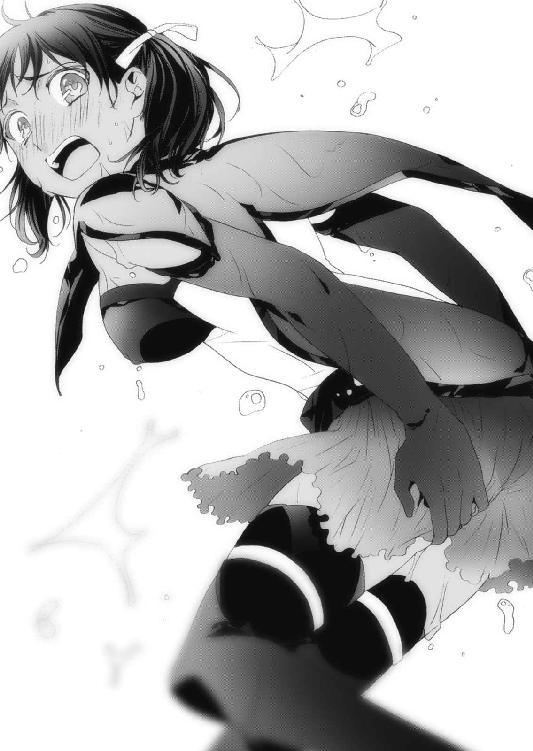
結局、アルマらはどうせ客もなくて席は空いているのだからと、隣のテーブルに移ることにした。
ネウは一度部屋に戻り、濡れた下着を穿き替えてきた。さすがにビールで湿った下着を穿いたままというのは気持ちが悪すぎたからだ。
そしてネウが戻ってくると豆を食べて満腹になったのか、ヤヒロはテーブルに突っ伏して眠っており、彼女の頭に寄りかかって二人の草人が豆を抱きながら寝息を立てていた。
「さて、ここからは大人の時間だな」
右の頰を赤く腫らしたレニウスが、そう告げた。
「ああ。ドジが見事にドジったせいで話の腰が折れたから、仕切り直しだな」
左の頰を青く腫らし、鼻に布を詰めたアルマが応える。
ちなみにアルマは鼻を殴られていない。
「うー、ごめんなさい」
ネウは顔を真っ赤にして両手を太ももに挟み、俯いた。
「まあ、と、とにかく、それじゃあはじめるぞ。こっちはこっちで重要な情報への手掛かりを得たからな」
レニウスは、まず図書館の司書マリアナに近づいたこと、そして彼女から引き出した図書館七階にある蔵書の話をした。
「──とまあ、いろんなものがあるらしいが、その中でオレが最も気になったのはフェイエルフが書いたという一冊の本だ」
レニウスの談によるとその本には「世界の仕組み」が書いてあるらしい。余りに突拍子もなく、かつ現実的ではない内容なので、一般に公開することを嫌った当時の館長が七階に蔵書し、そこから持ち出すことを禁止したという。
その話を聞いてアルマは口を重そうに動かした。
「なあレニウス、そりゃ確かに怪しいがよー、俺らが調べたいのは黒夢っつー力が何なのかとか、魔王になったバカ神官を元に戻す方法とかじゃねぇのかよ？」
あきれ顔でそう言うアルマに、レニウスは微笑む。
「そう焦るなアルマ、重要なのはここからだ」
「本当かぁ？」
「無論、そこ留まりならオレだって気にしない。だがな、マリアナはこう言ったんだよ。〝七階の掃除の時、一度だけ館長の目を盗んでその本を読んだ。だが白夢とか黒夢とかさっぱり理解できないことが書いてあって、すぐに興味を失った〟とな」
「!?」
その時、さすがにネウとアルマの目が丸くなった。
「黒夢に、白夢!?」
ネウがそう呟き、アルマもさすがに反応した。
「これまで俺らがリーゼと対峙してきて、あいつはいくつか意味がわからない単語を出してきた。それは〝黒夢〟と〝イストリアル〟だ。レニウスの情報が確かならその本は、アレンシアのことだけじゃない、何か重要なことが書かれている可能性があるってことだな......多少無茶してでも見る価値がありそうだ」
レニウスは頷き、アルマに視線を向けて続ける。
「あの図書館は少し特殊でな、一階から六階までは魔法昇降床というもので移動する。それは建物の中央にあって、音と光を放つから誰が乗っているのかすぐにわかる構造だ。おまけに閉館するとその動力は落とされ、動かなくなるらしい」
レニウスの説明に、アルマがさらに食いついた。
「ってことはよ、六階までは吹き抜けなのか？」
「いや違う。魔法昇降床が通過する時だけ、天井もしくは床に穴が空く構造だ。それも閉館してしまうと、その穴も閉じたまま動かなくなる」
「そう、か......」
レニウスの話を聞いて、アルマは天を仰ぐ。
アルマは頭の中で、想像以上に厳重なその図書館を攻略する方法を模索していた。
「つまりだ、オレたちはその七階の本が読みたい。だがそこはミスティカ公家の者でも気安く入れる場所じゃないということだ」
「ほう、何でだ？」
「それだけ毒気のある怪しい本があるらしい。ミスティカにおいて公家の力は絶対的だ。もし公家の人間がそれを読んで変な思想に感化されたら、一大事だろ？」
アルマの表情が、より引き締まっていく。集中力が高まっているのだ。
「なあレニウス、本当にその七階への道はないのか？」
魚の骨を咥えたまま喋るアルマに、レニウスは「まあ、ぬかりはない」と口元を緩め、眠る二人の草人を摘んでちょこんとテーブルの真ん中に置いた。
「ぴぴゃあッ!?」「ぴゃああっ!?」
既に眠っていた二人は、突然起こされて大いに機嫌を損ねた。
「おいちびすけ。お前ら草でできてんだろ？ 豆食ったら共食いなんじゃねぇのか？」
豆を抱くカナちゃんとユーちゃんは顔を見合わせ、何のことだかさっぱり、といった具合で肩をすくめる。
「お前ら......」
苛つくアルマに、レニウスが話を続けた。
「実はな、七階攻略の鍵はこの二人が握っている」
「こいつらが!?」
レニウスは笑顔で草人たちに顔を近づける。
「さて、カナちゃんにユーちゃん。今日図書館に行く前に伝えた作戦は、きちんとできたかな？」
優しく言うレニウスに、草人たちは勇ましく敬礼して応えた。
「よろしい、では早速聞こう。六階中央はホールを中心として、十字に伸びる通路があったね。南の通路は館長室、西は職員の控室だった。ではまずカナちゃんだ。姿を消した君はネウの正面から見て、左側の通路に向かったのかな？」
カナちゃんははっきりと「ぴっ」と言って頷いた。ネウが向いていた方向は館長室側、つまり南ということになる。そこから左手の通路を探ったということは、カナちゃんが探ってきたのは東の通路だ。
「その先に階段らしきものはあった？」
カナちゃんは眉間にしわを寄せて少し考え、大きく首を横に振った。
「ふむ、そうなるともう一つの通路が怪しいな。ユーちゃん、君はネウの背中側の通路で階段らしき物を見たかな？」
ユーちゃんはカナちゃんよりも早く、そして大きく頷いた。
草人たちは「ぴぴ」としか喋らないが、だからといって賢くないわけではない。質問を二択にしてしまえばいいだけなのだ。ユーちゃんはネウの背中を越えた先の通路に向かっていたので、即ち北の通路の先に階段があったということになる。
「でかしたぞ二人とも。質問はあと二つだ。君らが向かった通路の先に窓はあった？」
この問いにユーちゃんは首を振り、カナちゃんが頷いた。
「では、これが最後の質問だ。ユーちゃん、その階段には魔法がかかっていたかな？」
ユーちゃんは、はっきりと首を縦に振った。
「ありがとう。君たちは本当に優秀だ。もう眠っていいよ」
草人たちは「ぴっ！」と言い残し、再びヤヒロの頭に寄りかかって眠りはじめた。
「以上の結果を纏めると、図書館六階東側の通路の先に窓があり、北側に魔法がかけられた階段があるということになるな。あの図書館は六階までに階段はひとつもない。ということは、自ずとその階段は下りではなく上り階段ということになる。どうだ？」
アルマはぽかんと口を開き、魚の骨を落としていた。
「驚いたぜ......あのちびすけどもに、偵察をさせたのか!?」
「誰にでも得手不得手がある。得手を活かせば、こんなもんさ」
レニウスはそう言って、ビールを口にした。
「恐れ入ったぜ。お前、いい盗賊になれるぞ」
「うーむ、それは褒め言葉か？」
笑い合うレニウスとアルマ。
この時アルマは、目の前の男が中央平原で活躍したセレンディアの英雄と呼ばれた理由を実感していた。中央平原ではジェドに支配された地を時には剣で、時には罠で、時には魔法で次々と打ち破っていったという。確かにレニウスは戦術に長け、人の心を読むのが実にうまかった。
「これで作戦は明確になった。図書館の外壁を登り、六階東側の窓から侵入する。だが、ここからが難問だ。六階まで行けるのはアルマしかいないだろう。だが七階への階段に魔法がかかっている以上、ネウは絶対に連れて行かなきゃならない」
アルマとレニウスはネウを見る。
視線を感じたネウは何故視線が集まったのか理解できず、不思議そうに首を傾げた。
「この作戦無理じゃねぇ？ なんたってこいつのドジは奇跡的だぞ？ さっきのアレだって見ただろ？」
「ああ、ばっちり見させてもらったが、この役は魔法に詳しいやつじゃないとダメだ。つまりここはオレでもヤヒロでもなく、ネウしかいない」
眉間に親指を当てるレニウスに、頭を抱えるアルマ。
「いやよぉ、俺だけならそこまでは絶対いけると思うんだ。でもよ、ネウと一緒だとしたらマジで自信ねえぞ？」
「むうう、舗装された道で四回転んだネウでも、やる気を出せば何とかなるんじゃないか？」
「待てレニウス。コイツのドジはいつだって本気だ！」
「そこは否定しない。だからネウには幻術系魔術師らしく召喚魔法を使って小動物を召喚し、意識をそれに移してポケットにでも入ってもらえば問題はないだろう？」
「そうか、それなら何とか......はっ！」
アルマとレニウスがゆっくりネウに顔を向けると、彼女は瞳を潤ませ、唇を嚙んでしゃくりあげていた。
「ううう、二人とも、ドジドジってひどいよう......」
涙ぐむネウを見て思わず腰を浮かすレニウスとアルマ。
「あ、いや、その、すまん、調子に乗りすぎた──」
「でも！」
突然、ネウが声を張り上げたので、その場にいた皆がネウに視線を向けた。
「その役、あたしにやらせてください。カナクさんを滅ぼす方法ではなく、今度こそ助ける方法を見つけたいから！」
レニウスは軽く笑みを浮かべ、がっくりとうなだれるアルマの肩を叩いた。
図書館侵入作戦は、翌日夜の決行となった。
明くる日、ヤヒロは朝から新情報はないか確認しに酒場をまわってくると早々に出かけて行き、レニウスはいろいろと教えてくれた司書マリアナにお礼をしなければならない、さあ困った、困ったと言いながら笑顔で出かけて行った。
アルマとネウは今夜の行動に備えて昨夜を寝ずに過ごし、昼に眠ることにした。アルマはうたた寝するネウを小突いて起こしつつ、レニウスの話を基に図書館内部の見取り図を作成し、最短ルートを割り出す。
六階東側の窓から侵入し、中央の魔法昇降床があるホールを抜け、一気に北側の階段を目指す。イメージが固まるとアルマはネウに寝るぞと言い、カーテンを閉めて部屋を暗くしてベッドに入った。
そして、夕方。
「うう......う？」
アルマは妙な圧迫感で目が醒めた。
「何だ、この重さは......!?」
それが何なのかを理解して、思わず息が止まった。
アルマのベッドの中に、ネウがいたのだ。
しかも仰向けに寝ていたアルマの上に乗っている。ネウは肌着しか着けておらず、アルマの胸にその柔らかくてふくよかで、暖かいものの蠱惑的な感触が伝わってくる。
（こ、こ、これは一体!?）
アルマの頭は大混乱だった。今まで数多くのパーティで冒険してきたアルマだったが、このような素晴らしいイベントに遭遇したことは一度もなかった。
（ど、どうすればいいんだ......）
とりあえず、火照る体を抑えて冷静に状況を分析する。おそらくネウは何らかの事情で一回目を醒ましてベッドを出て、帰ってくる所を間違えたのだ。
（こ、この奇跡的ドジが！）
ダークエルフとはいえ、ネウは年頃の女の子だ。その体、その温もりは形容しがたいほどの魅惑を放ち、アルマの男を刺激する。ここはそっとベッドを抜け出し、ネウのベッドに行くのが得策だろうと、アルマが上体を起こそうとした、その時だった。
「ん......かなくさん......」
寝ぼけたネウがアルマの顔を艶美な手つきで撫で、濡れた唇を重ね......ようとして、アルマは間一髪で顔をずらし、何とかかわした。
（───────!?）
アルマの体から急速に力が抜ける。腕にも足にも、思うように力が入らなかった。
「かなくさん......もう、はなさない......」
ネウにぎゅっと抱きしめられると、アルマはますます脱力し、頭が熱くなる。意識まで朦朧としてきた。
（まずいな、こりゃ。理性をもっていかれそうだ......）
寝ぼけている上に、ネウが恋い焦がれているカナクと勘違いされているから、ネウは全力で襲ってきている。
必死に抗おうとしたが、体中を弄くられ、追い打ちのように酒場で見た光景が蘇り、もう全てを受け入れてしまいたい衝動がアルマの体を縛りつける。
（こうなったら......仕方ねぇ！）
アルマは理性を奮い起こし、またキスをしようとしてきたネウの下唇を捉え、嚙みついた！
「ひっ!? ひたたたたたた！」
ネウは痛みで我に返った。
「ひーん......はっ!?」
あられもない恰好でアルマにすり寄っていた現実が、ネウの時間を止める。
（な、殴られるか？）
ネウなら絶対そうするだろう。顔に。しかも拳で。
目を瞑って歯を食いしばっていた、が......なかなか予想した衝撃がこなかった。
うっすら目を開いてみると、ネウは顔を真っ赤にして俯いていた。
「ネ、ネウ？」
アルマがそう声をかけると、ネウはびくんと身体を震わせ、慌てて自分のベッドに戻り、布団を被った。
（た、助かった......か？）
アルマはそのまま強烈な疲労感に襲われ、落ちるように眠りについた。
第四章・裏 幸せの残滓【カナク】
カナクは自力で歩けるようになると、謁見の間から出て城の中を散歩することにした。
まず最初に驚いたのは、この城の荒れようだった。一歩足を前に出すごとに砂埃が舞い、壁は崩れ落ちる。床は割れ、あちこちに損壊が見られた。カナクはユーリエの姿をした夢魔に謁見の間で待つよう告げて階段を下りていくと、ようやく城の状態が見えてきた。
（これは......もう城とは呼べないな）
そこはかつて兵士たちが訓練をしたのであろう、広場だった。だがここも城内とあまり変わらない状態で、乾いてひび割れた土の上に折れた剣や弓、砕けた鎧が散乱していた。
カナクはここに連れて来られてから、一歩も謁見の間を出ることがなかった。無限に降り注ぐ黒夢に耐え続け、動く余裕などなかったからだ。
そして次に驚いたのは、城を徘徊している夢魔の数が想像していた以上に多かったことだ。至る所に夢魔がいて、カナクの姿を見るとその場で固まるか、背中を見せて俯いた。
（こんな人の来ない場所に、何故これだけの夢魔を置いておくんだ？）
そんなカナクの疑問は、即座に解明される。
ふと物音を聞いたカナクが正門の方に目を向けると、数体の夢魔が仮面を被せられた冒険者たちを肩に担ぎ、のっそりと歩いてきた。
（そうか、僕はアレンシアの敵、黒夢の魔王なんだ。この命を狙ってくる者が来たって何ら不思議じゃない）
眠りものを担いだ夢魔は一列になって、兵舎らしき建物に向かって歩いて行く。
おそらく、あそこに眠りものを収容しているのだろう。
（リーゼ......本当に、呆れるほど頭のいい人だ）
リーゼのことは、腹に一物持った怪しい人物であるという印象ばかり強調されていた。だが今思えば、もともとはそれほど悪い人物ではなかったのかもしれないという考えがカナクの中に宿りはじめていた。
あのマールの村での出会いで、リーゼは誰一人犠牲にすることなくカナクを魔王にした。あれほどの力を持っていれば一人や二人、殺していてもおかしくないのに。
その後の銀獣人狩りにしても、必要だったからやったに過ぎないし、眠りものを増やしただけで命までは奪っていない。
黒夢の恐ろしさは魔王となったカナクが身をもって知っている。温かな気持ちがどんどん浸蝕され、苛つきと殺意、そして我欲だけが膨らんでいくのだ。
リーゼは黒夢に喰われたとはいえ、まだ心のどこかに優しい部分が残っているのではないか。そんなことを考えつつ、カナクは踵を返して辺りを見回した。
この城は城壁の四隅に塔があるのだが、そのうち三本は倒壊しており、残っているのは南西側にあるものだけだった。
カナクは何故かそこに興味を惹かれ、塔を目指して歩いた。
城の南西側は比較的損傷が少なかった。建物がまだ建物と呼べる状態であり、あちこちに雑草は生えているものの、人が暮らした痕跡を感じることができる。
南西の塔も他と同じく傷んでいたが、ふと目をずらすと、厳重に鍵のかけられた建物が視界に入ってきた。赤茶色になった鉄の扉は未だ健在で、これまで見てきた中で最も頑丈な建物だった。
（これは......？）
カナクはその大きくて重そうな錠前に手を翳し、黒夢の力を使って溶かし、扉を開けて中に入った。
その建物は意外にも書庫だった。書架が所狭しと並び、大量の蔵書が収められている。壁には歴代の王の肖像画が並び、一番奥には壁一面に巨大な風景画が飾られていた。
カナクはその王の肖像画に目を向けた。
『初代 ロニア・リヴァルト王』
リヴァルト王。つまりここは、かつてのリヴァルト王国ということになる。
カナクはその国の名に聞き覚えがあった。
まだ幼少の頃、アレンシア西の砂漠のさらに西に、リヴァルト王国をはじめとするいくつかの小国があった。だが、ある日突然トロルの国、オーダスが攻め込み、あっという間に滅び去った。
当時はフェーン地方も戦乱の地であったし、アレンシアの北東ガザラでもクーデター騒ぎがあったので、カナクは何故、戦争なんてやるんだろうと悲しく思った記憶がある。
カナクは久々に見た本に興味を持ち、ひとつひとつ手に取ってみる。古びてはいるが、しっかりとその文字を読み取ることができた。
久々の紙の感触に、かつてセレンディア魔法学校でレニウスやリリルと共に学んだ日々が蘇る。もう戻れない、幸せだった時間に胸を痛めつつ、書架から何冊かを抜き出し、部屋を出ようとした、その時だった。
カナクは書庫の一番奥にある大きな風景画から、微かにマナの力を感じた。
（何だ、これは？）
不思議に思い、風景画に近づいてみる。
するとその絵だけは他のものとは違い、巨大な壁画であることに気づいた。歴代リヴァルト王の肖像画と比べると、軽く四倍ほどの大きさがあるその壁画は、中央に四つの塔を持つ威風堂々とした城、そしてその周りに草花や町の様子が丁寧に描かれていた。
どうやらマナの力はその絵の中心、城の部分から感じるようだ。
（小国とはいえ一国に違いはない。これくらいの仕掛けがあってもおかしくはないか）
カナクは指を空中に躍らせて背中に魔法陣を広げると、ふわりと身を浮かせマナを感じる城に触れてみた。
すると、かこんという音がして城の部分が消え、空洞が現れた。カナクがその中に手を入れてみると、木枠がはめられたガラス板のような感触があった。
ゆっくりと、傷をつけないように取り出してみる。
それは一族の写し絵だった。中央には錫杖を持った凜々しい男と、その隣に赤子を抱いて寄り添う美しい婦人。その前に王子と思われる少年と、すみれ色の髪がどことなくユーリエを思わせる可憐な少女のドレス姿が写されたものだった。
これは、この城が滅ぼされた時の王家の写し絵だ。こんな所に隠しておくとは、よほど大切なものだったに違いない。
しかもこの写し絵は魔法で写されている。この王国は、魔法の技術も発達していたのだろう。カナクは嘆息し、興味を無くしてその絵を空洞に戻そうとした時、その絵の裏側に何か書かれていることに気がついた。
その文字に......頭を殴られたような衝撃を受けた。
『双月暦１４７８年、ユーリエ・リヴァルトの誕生を記念して』
......ここが、この城こそが、ユーリエの生まれた国だったのだ。
その写し絵を注意深く覗いてみると、確かに両親や兄姉からユーリエの面影を感じることができる。整った目鼻立ちはどうやら母譲りで、凜々しさはこの父王譲りなのだろう。
そういえばユーリエは、かつて自分は小国の姫だったと言っていた。
カナクは、力なく地面に膝をついた。
そうだ、ユーリエは千年前に飛ばされてから辛苦を味わっていたわけじゃない。ユーリエはまだ幼い時に生まれ育った国と両親を失い、兄姉と離ればなれになり、親戚を転々としていた。
この幸せそうな家族が、数年後には跡形もなく引き裂かれるのだ。
胸が苦しい。カナクも両親はなく育ってきたが、セレンディアの神官のおかげで愛情は受けてきた。
だが、ユーリエはそれを知らない。
知らないまま、千年前に行ってしまった。
このままでいいはずがない。
自分が彼女を救わなければ！
そう思った直後、カナクの体が爆音と共に炎に包まれた。
『うっ!?』
カナク自身は熱くも何ともなかったが、炎は本棚に飛び火し、貴重な書物たちが瞬く間に煙に包まれてゆく。
『ああ......』
この中に、まだ幼い頃のユーリエを記録した本があったかもしれない。
慌てるカナクの背後から、複数の声が耳に入ってきた。振り返ると、冒険者らしき者たちが巨大な斧や剣、魔術師の杖などをカナクに向けていた。
「よし、こいつを倒せば俺らは英雄だ！」
「魔法は効くみたいだな」
「トッド、お前が先頭になってガンガンいけ！ 一気に討ち取るんだ！」
各々が勝手なことを口走る。
「まかせとけ、このトッドさまが世界を救った英雄になる！」
小さなドワーフが、黄色く輝くバトルアックスを振りかぶった。
だが、そんなことよりも、カナクにとってはリヴァルト家の写し絵に火がついたことのほうが重大事だった。
『ああ......あうう......』
滲み出る涙をそのままに、焼けていく写し絵から必死に炎を振り払う。
「おいおい、泣いてるぜこの魔王さまはよ！」
「本当に、これが黒夢の魔王なのか？」
心ない嘲笑など、どうでもよかった。
カナクは外聞など気にもせず、写し絵を叩いて炎を消そうと躍起になっていた。
そこへ、無情な言葉が投げつけられた。
「どけ！ 〝火炎柱の魔法〟っ！」
魔術師の魔法が、カナクを襲う。
足許から、猛烈な火炎が立ち上った。
『うあ、あああああああああっ！』
じりじりと焼けて、消えゆく写し絵。
そして、ついに写し絵は......真っ黒な灰になった。思わぬところで発見したユーリエの思い出が、灰色の粉となってカナクの手や、服にこびりつく。
怒り、悲しみ、そしてユーリエの笑顔が、カナクの中で一気に膨れ上がる。
「効いてるぞ！」
「んじゃ、その首貰うか！」
前衛の戦士、トッドたちが何か言いながらこちらに迫ってきた。
もう、震えるカナクの耳には何も入ってこなかった。
『うおおおおおおおおおおおおおおおおおおおおおおああああああああああああああああああああああああああああああああああああああああああああああああ!!』
カナクは湧き上がる感情にまかせて、暴れた。
そしてカナクは、燃える書庫を静かに後にした。
手のひらには、灰になった写し絵の残りがしっかりと刻まれている。
人はやはりどうしようもなく醜くて、救いがたい存在だ。
千年前に飛ばされたユーリエだって、どれだけ酷い目に遭わされたか。
もうこんな世界など、どうなっても構わない。
もう絶対に揺るがない。
何が起きても誰に邪魔されても、必ずユーリエの許へ行く。
そう決意したカナクの頰を伝う涙は、しばらく乾かなかった。
第五章・表 世界会議【オリヴィア】
カナクがリヴァルト王家の写し絵を発見していたその時。
コルセア王都カリーンの王城で一人、一通の書類を書いている人物があった。
オリヴィア女王である。
オリヴィアは政務室で書類を書き上げると、それを金庫に納めて紅の鎧に身を包み、聖剣「琥珀」を懐に入れ、同じく聖剣「紫焰」を手にして城の裏庭へと向かっていた。
髪を編み、目許は普段通り仮面で表情を隠している。唇を引き締めて背筋を伸ばし、亡き夫スフィアから託された紅の胸当てを着け、純白で丈が長いスカートを穿いている。
大股で歩くその姿は、まるで戦にでも行くかのようだった。
いや、オリヴィアにとっては実際、これから行われる世界会議は、戦そのものなのだ。
アレンシアにある陽種族の国......セレンディア、コルセア、フェルゴート、レベルド、タロン、ミスティカ、ガザラ。そして闇種族の国......グレイウッズ、オーダス、ログナックのジェド三国と、大氷山脈のディルギニア。
これらの王が黒夢の魔王と夢魔への対抗策を話し合うため、一堂に会する時が来た。
オリヴィアはこんなに早く、この会議が実現したことが未だに信じられなかった。
レベルドは後継者争いが勃発しているし、タロンとガザラは昔から仲の悪い国であり、ミスティカは永世中立国である。さらにフェルゴートとジェド連邦という二大大国も一歩間違えば戦争を起こしかねないし、西のセレンディアとてジェドには良い感情を抱いていないはずだ。
闇種族たちとの争いは中央平原で現在も行われており、敵側からの、しかも王を集める会議に来てほしいという提案に乗ってくるとは思えなかった。
ところがそんなオリヴィアの予想に反して、各国の王はこの提案に対して参加の意志を見せてくれた。この日だけは全ての遺恨を忘れ、アレンシアに住むものの共通の敵、黒夢の魔王と夢魔に対抗するための話し合いを行おうという趣旨に賛同してくれたのだ。
ディルギニアにはコルセアの聖騎士団を直接国に赴かせた。これは先のネウらによる銀獣人招致計画の予備部隊でもあり、ネウらが成功すればディルギニア国王への親書を渡し、さらにジェド各国への使者としてそのまま向かわせ、もしネウが失敗していればその部隊がセスコム荘に向かうことになっていた。
逆に言えば、ネウたちがライカを無事にコルセアに連れてきてくれたからこそ、聖騎士団は迷うことなく使者としてジェドを巡ってこられたのだ。
（全てが順調にいきすぎているな......）
オリヴィアは順調な時ほど、足許をすくわれるものだということを熟知している。
あとはこの世界会議を、どのように持って行くかだ。
オリヴィアは各国の状況から、会議の勢力は三つに分かれるだろうと予想した。まずは闇種族であるジェド連邦とディルギニアの四国。
そしてアレンシア北東部に勢力を伸ばすタロン、ガザラ、ミスティカ、レベルド。
最後はアレンシア南部のフェルゴート、コルセア、セレンディアだ。
オリヴィアの策はこうだ。魔王の城より北にあるオーダス、南のセレンディアから夢魔を一掃するという名目で連合軍を結集させる。
そうしてリーゼの目をオーダスとセレンディアに向けさせ、魔王の城が手薄になったところを各国より募った強者だけで結成された別働隊で奇襲をかけて魔王を倒す、というものだ。その別働隊で魔王を倒す役は、ライカに担ってもらう。魔王さえ倒してしまえば、夢魔はもうこれ以上増えないし、リーゼは少なからず動揺するだろう。
そこをオリヴィアが直々に叩く、というものだった。
オリヴィアの懸念は、アレンシアの各国が大軍を集め、一気に魔王の城に攻め込もう、という策が必ずあがってくるだろう、ということだ。
言い出すのは誰か......おそらく闇の知恵者の異名を持つダークエルフの王か、思慮の浅いログナカンのログナック王だろう。
オリヴィアはその策だけは退けたかった。アレンシア連合軍を結成して魔王の城を攻めるという策は、イチかバチかの下策だ。成功すれば問題はないが、失敗してアレンシア軍が敗れるようなことになればアレンシアに住む者たちを、誰が守るのか。
大軍を用意すれば、リーゼも必ず大軍をもって当たってくる。
そうなれば凄惨な大戦争に発展するだろう。
（世界大戦......できることなら、それだけは避けたい......）
リーゼという知も武も兼ね備えた相手に、真っ向から勝負を挑むようなことだけは避けなくてはならない。そう思いながら歩き続けて裏庭に来ると、立派な紅いローブをまとったライカと、コルセア・マール聖神殿大神官グウェイルがオリヴィアを待っていた。
ライカは先日この城で誕生日を迎え、今は十四歳だ。だがその容姿はまだ十四歳とは思えないほど、見違えるように逞しくなった。
自分の意志で自在に銀獣人になれるようにもなっていたし、何よりもその知識の吸収力が早かった。グウェイルの許で少し勉強しただけで世界の情勢を理解してしまったし、初歩の回復魔法まで使えるようになったという。
ライカの顔を見ていると、オリヴィアはかつてセレンディアのユーリエと共に、石碑巡りでここを訪れたカナクの面影を思い出してしまうのだった。
「お待ちしていました、女王さま」
そう口を開いたのはグウェイルだった。
「うむ、ご苦労。瞬間移動魔法の準備はできているか？」
世界会議はフェルゴートの南にあるオーヴィル草原で行われる。そこなら視界を遮るものもなく、各王が腹を割って話すことができるだろう、というフェルゴート王のはからいだった。
「はい。先日、聖騎士団長ロゴスがフェルゴートに赴き、フェルゴートの大臣と共にオーヴィル草原へ行って参りました。瞬間移動魔法の出口はその草原になっております」
瞬間移動魔法は便利な魔法だが、その魔法陣が複雑で失敗する確率も高いことから、各地のマール聖神殿でこの魔法を「禁術」に指定し、一般人の使用を禁じた。
だが特殊な魔法が込められたアイテムにはこの瞬間移動魔法を書き込むことが可能であり、高価ではあるが失敗はない。
オリヴィアは各国に宛てた親書そのものに、瞬間移動魔法を込めた。あとは親書に記した約束の日時に、瞬間移動魔法を使うだけでいい。
ちなみにこの会議は王か、それに代わる国の代表一名と、護衛としてもう一名、計二名の参加を認めることで合意している。
オリヴィアの従者は聖騎士団長ロゴスでも大神官グウェイルでもない。
銀獣人ライカだ。
「心の準備は良いか、ライカ」
オリヴィアは拳を握り、グウェイルの隣で跪くライカに言った。
「大丈夫です。女王さま」
しっかりとした、頼れる口調だった。
「グウェイル」
次にオリヴィアは、膝をつくグウェイルに声をかけた。
「この私に万が一のことがあれば、次期国王はお前がやれ」
グウェイルは思わず顔を上げ、目を丸くする。
「は？ そ、それは以前にも伺ったことがございましたが......ご冗談でしょう？」
「遺言書を認めておいた。私が帰れぬような事態に陥った場合、政務室の金庫を開けて中の書簡に目を通せ。そこに私の意志を記した書簡と、国王の証がある」
オリヴィアはそう言い残し、ライカの腕を取って瞬間移動魔法のポータルを開くと、二人でその青白い光の玉の中に入っていった。
「じょ、女王さまっ！」
グウェイルの声は裏庭に植えられた木々に吸い込まれ、オリヴィアの耳に届くことはなかった。
二人がポータルから出ると、光の玉はぱしゅんと音を立てて消し飛んだ。
オリヴィアとライカは、広大な草原に佇んでいた。
足首を僅かに埋める程度の小さな草が密集し、風に靡いて波を形成する。空には綿のような雲がうねりながら形を変え、ゆっくりと流れていく。
道らしきものはどこにもなく、よく晴れているせいか、遠くにうっすらとヴァスト山脈が小さく見える。
その反対側には白い岩肌が四本、草を突き破るように聳えていた。
なだらかな斜面の下には雨水や地下水が集まって小さな湖になっていて、日の光が水面に反射してきらきらと輝いていた。
そこはフェルゴート南部に広がる、オーヴィル草原だった。
オリヴィアは注意深く辺りを見渡す。マナも黒夢も感じられなかった。
（この会議の内容がリーゼに漏れれば、大事だ）
リーゼはカナクを魔王にした張本人であり、自身は砂の体を持っている。だが、強力な黒夢を使う魔導師でもあるので、その力を感知することはオリヴィアでも可能だった。
もっとも、魔術師ではないオリヴィアにとってはかなりの労苦だったのだが。
「じょ、女王さま！」
ライカが左手前方を指差して叫ぶ。
そこに光のポータルが開くと、中から身なりの良い、色白で小柄の男性が出てきた。細くて柔らかい赤髪に、意志の強そうな茶色の瞳。煌びやかな装飾を施したローブに、如何にも王らしい錫杖を手にしている。
ユーリエの義兄にしてレニウスの実兄、セレンディア王ラティアだった。
「おや、一番乗りではなかったか」
ラティアはオリヴィアたちを目にすると、細い声でそう言った。
「お久しぶりですわね、ラティア王」
オリヴィアは左手を差し出して握手を求め、ラティアはそれに応えた。
そしてラティアが現れたポータルからもう一人、女性が出てきた。淡緑色の短い髪に、金の瞳。銀色の甲冑に身を包み、巨大な剣を背負った聖剣士。
レニウスの妻、リリルだった。
「ラティア王っ！ あれほど先に入っちゃダメって言ったじゃ......あ、ああっ!? オリヴィア女王さま!?」
リリルはオリヴィアに気づくと、慌てて膝をついた。
「お久しぶり。元気だった？」
「あ、あはは、はいっ！」
ぱあっ、と、場が明るくなる。
リリルが持つ明るさは、すぐに場を和ませてしまう不思議な魔法のようだった。
「ラティア王、今日の従者にはリリルを選ばれたのですか」
オリヴィアから問われると、ラティアはオリヴィアの言いたいことを察して首を振った。
「リリルにはもう第七騎士団長の地位を与えています。実際、リリルの力は団長を任せられるほどの腕ですから」
オリヴィアは言葉とは裏腹に苦々しく話すラティアの表情で、本当に言いたいことを理解した。西の国セレンディアはアレンシアで最も新しくできた国であり、さらには黒夢の魔王の居城に近い。ということは、夢魔の被害が大きいのはこのセレンディアと、魔王の城の北にある国オーダスだ。
（新参者のリリルがもう聖騎士団長......セレンディアは、かなり追いつめられているな）
オリヴィアは、ラティアとリリルの二人を見ただけで国の内情を推察した。
「こちらの紹介が遅れましたね」
オリヴィアはライカの背中をとんと押して前に出した。
「コルセアの影砲士、ライカを連れてきましたわ」
ライカは初めて見るオリヴィア以外の王族を前に、萎縮していた。
「はは、初めまして、ライカです！」
ライカはたどたどしく膝をつき、頭を垂れる。ラティアはそんなライカの肩に手を置き、彼らしく静かな物腰で語りかける。
「君のことはオリヴィア女王さまから聞いているよ。はるばる大氷山脈からやってきて、魔王を討つために女王さまの下で修行中とか。全く、頭が下がる思いだよ。苦しいこともあるだろうけど、アレンシアのためにがんばってほしい」
その言葉にライカは唇を嚙み、瞳を潤ませて平伏した。オリヴィアはこのセレンディア王ラティアという男を、若いながらも立派な王だと感心した。
それから、オリヴィアとラティアらがいる場所に次々とポータルが開き、そこから各国の王が従者を伴って現れた。
大国フェルゴートを盤石の体制で治めている、フェルゴート国王クロウ。
彼は十八代目の国王であり、フェルゴートの正装である装飾を施したチュニックに、金色のレッグアーマー、そして深紅のマントを身につけていた。
アレンシア北方、山岳地帯にあるログナカンの国ログナックの王ゼスレス。
ログナカンの外見は巨大な二足歩行のトカゲそのものといっても過言ではない。鋭い歯、硬い鱗に、入れ墨を施した顔。独特のリングメイルを着用し、背中には細い剣を背負っている。好戦的で、何よりアレンシアで唯一、人を喰らう種族である。
アレンシア北東部、タロン王国の王ジン。
歴戦の戦士でもあるジン王は筋骨隆々で、体が大きいのが特徴である。タロン人は総じて筋力があり、頭髪が薄く、髭が濃い。巨大な棍棒を片手で軽々と持ち、上半身は裸同然であり、ただ上から足首まであるファー付きの重そうな青いマントを羽織っていた。
永世中立国ミスティカ公国のフィオレ・フォン・ミスティカ大公。
タロン王と比べるとまるで棒のように細い容姿であるが、その瞳は誰よりも鋭く、何にも屈しないという強い意志を感じさせる。眼鏡と手にしたワンドが、いかにも知の国らしかった。
ジェド連邦評議会の知恵袋、グレイウッズ女王ロマ。
深緑色のドレスを鮮やかに着こなし、ダークエルフの女王たる貫禄を具えている。闇種族ではあるが、その美しさはフォレストエルフにも決して引けを取らなかった。
レベルド帝国皇帝ヴェクウ。
アレンシア北東部にあって、大国フェルゴートと直接隣接するこの国は、あまり詳しく知られていない。それは皇帝ヴェクウが絶対的権力者として君臨しているからであり、その治政に反論するものは翌日から姿を消すという。黒いフルプレートアーマーを着ていて、顔までも黒い兜で覆われているため、顔も表情も窺い知れなかった。
闇種族フリーレンの国、ディルギニア国王ゼネディク。
一年を通じて氷が解けることのないヴァスト山脈北部を収める闇種族の王である。毛に覆われ、ぴんと伸びた耳と白い肌、そして顔の一部に痣を持つ。ゼネディクは鼻の中心から顔の両脇に向かって、翼を広げた鳥のような痣を持っていた。
ジェド連邦を形成する一国、トロルの国オーダスからは、王の体調が優れないということで第一後継者ゴバーナが現れた。
王ではないせいか、早々たる面々を前に一人、緊張に身体を震わせ、口から覗いた牙をかちかちと鳴らしていたが、単純に力だけで考えればこのトロルが最も強い。
最後に、顔つきがどことなくオリヴィアの記憶を擽る青年、ガザラ国王ジェマがポータルから出現する。ジェマ王に続いて現れた人物に目を移したその時、オリヴィアは胸を突き上げられるような感覚に陥った。
まさか、と目を疑い、呼吸が一瞬止まる。
ガザラ王の後から出てきた人物......だいぶ年をとり、後ろに流した髪に白い物も混じっていた。オリヴィアの記憶ではいつもよれよれのシャツにカーキ色のズボンを穿いていたのだが、今は白のマントにくすんだ青銅の鎧を身につけていた。
かつてオリヴィアがレベッカという名だった頃、ガザラ北東部、夕闇の海に現れる「影の巨人」を撃つ影砲士スフィアの妻として過ごしていた時、共に泣き、笑った仲間がいた。
一人は国を追われた老人ジョンで、彼は現ガザラ王の父にあたる人物だった。
そしてもう一人。
傷ついたスフィアを癒し続けてくれた元ガザラ軍の守護隊長、ザイラス・ウォートン。皆はザイルと呼び、彼はレベッカが起こしたクーデター後、国王に返り咲いたジョンの下で宰相を務め、ジョン亡き後は現ガザラ王ジェマのお目付役として「亜父」という地位につき、ガザラ復興の立役者として国を支えてきた。
そのザイルが、オリヴィアの目の前に現れたのである。
オリヴィアは思わずザイルから顔を逸らした。オリヴィアの夫、影砲士スフィアはガザラの英雄として奉られている。オリヴィアはセレンディアに保護された時、リーゼの驚異から全てを守るつもりでレベッカという名を捨て、顔を仮面で隠してきたのだ。
オリヴィアの中で、懐かしいザイルに全てを打ち明けたいという衝動と、そんなことをするわけにはいかないという感情がせめぎ合う。
オリヴィアがそんな想いを抱いている中、ついにアレンシア各国の王が一堂に会した。
「はっ、これだけのメンツが揃うと、流石に爽快だのォ！」
ログナック王ゼスレスが、バリトンの効いた声で叫ぶ。
今回の会議で一悶着起きるなら、その火種はログナック王だろうと密かに思うものは少なくなかった。
「普段は争い合うこともある国々もあるでしょうが、どうかこの場だけは遺恨を忘れ、会議に水を差すようなことのなきよう、お願いしたい」
フェルゴート王クロウが、貫禄たっぷりにそう言った。
「心配すんなフェルゴート王ォ。今ここで話さねばならぬのはアレンシアの敵、黒夢の魔王とその下僕、夢魔のことじゃからなァ」
ゼスレスはグロロロロ、と豪快に笑った。
「黒夢の魔王は闇も光もなく、我らアレンシアに住む者共通の敵ですからね」
その隣でグレイウッズ女王ロマが優美な手つきで膝を折り、その場に座る。ダークエルフは闇の知恵者という異名を持ち、日の差さない林に居を構えている。
そんなロマの右隣に、セレンディア王ラティアが座った。
「この会議に上も下もないのでしょう？ ならばここは円陣で話をしましょう」
ガザラ王ジェマがそう口にして、ロマの左隣に座った。
ザイルがそっとジェマの後ろに立つと、ロマの従者もザイルの隣に来た。
「............」
レベルド皇帝ヴェクウも何も言わずに座った。
オーヴィル草原の中心に、小さな輪ができる。それは広大な草原の中にあって、豆粒のような小さなものだったが、アレンシアにとってはとてつもなく大きな輪だった。
やがて全ての王が円陣を組んで座ると、コルセア女王オリヴィアが口を開いた。
「皆さま。この度はセレンディア、フェルゴート、そして我がコルセアの呼びかけに、よくぞ応えて下さいました。まずは厚く、御礼申し上げます」
オリヴィアは各国の王たちに頭を下げた。
「コルセア女王よ、頭を下げる必要はねぇのォ。我々とて夢魔の傍若無人っぷりは腹に据えかねておったからのォ」
ログナック王ゼスレスの大きな声に、各国の王も頷いた。
「時に、いくら上下なしの会議とはいえ、進行役がいなければ無駄に時間を使うだけ。ここは発起人の三国のうちのいずれかに、議事進行役をお願いしたいですわ」
そのグレイウッズ女王ロマの提案でセレンディア、コルセア、フェルゴートのうち、歴史と伝統あるフェルゴート王クロウが議長として会議を進行することになった。
「では不肖、このクロウが栄えあるこの世界会議の議長を務めさせていただく」
誰からも不平は出なかった。
「まず会議を始める前に、共通のルールを決めておきましょう」
クロウは立ち上がり、従者から一枚の紙とペンを受け取る。
「この場で決めたことを口約束で終わらせてはなりません。故に、各王はこの紙に署名をすることにします」
紙とペンはまず隣にいたオリヴィアに渡された。オリヴィアは自身の名前を書き込み、親指を嚙んで血を滲ませると署名の上に押し、隣のラティアに渡す。
ラティアもオリヴィアに倣い、隣のログナック王に渡した。
「署名をしながら聞いていただきたい。まずこの会議の趣旨は親書にも記したとおり、我らのアレンシアを眠りの大地に変えようとしている黒夢の魔王と、その下僕、夢魔に対抗する術を話し合うものであります」
クロウは周りを見渡しながら、大きな声で言った。
「この会議では陽種族、闇種族、暁の信徒、紅の信徒関係なく、我ら皆マールの子として黒き魔王と対抗していきたいと思う。故に議決は全て多数決で行い、異論は許さない。それでよろしいかな？」
どの王も、その言葉に異義を唱えなかった。
やがてクロウの手元に、全員の署名が入った誓紙が返ってきた。
「皆様の寛容さに感謝する。それでは早速本題に入ろう。コルセア女王オリヴィア殿より、皆様に提案する策があるそうだ」
クロウはオリヴィアに視線を送る。
それを受け、オリヴィアはゆっくりと立ち上がって円陣の中央に進んだ。
「では早速。私はまずアレンシアの西方にある魔王の城から夢魔がやってくることを皆さんにお伝えします。ということは、自ずと魔王の居城に近いオーダス、セレンディア両国が、最も夢魔の被害を受けているはずだと予想しました。オーダスのゴバーナ殿と、ラティア王、差し支えがなければ夢魔による被害を、ここでお教え願えますか？」
オリヴィアから水を向けられ、まずラティア王が立ち上がった。
「正直に申し上げましょう。我がセレンディアは聖騎士団、魔術師団、後方支援隊、衛生部隊、傭兵団から成っております。それぞれが七つの部隊に分かれていますが......そのうち五隊は......既に、夢魔にやられました」
おお、と各国の王から悲嘆の声が上がった。セレンディア軍のうち、既にかなりの兵力が失われているというのは、決して対岸の火事ではない。セレンディア、オーダスが敗れれば、次は我が身となる国もあるのだから。
続いて、オーダス王代理のゴバーナがのっそりと立ち上がる。
「わ、わ、我がオーダス軍も、ほぼ同様です。と、特に我が軍は、魔法を使える者が少ない。夢魔に対して......殆どの兵を失いました」
その大きな身体に、哀愁が漂っていた。
この大事な世界会議に、オーダスだけは王が出席していない。もしや、王すら既に眠りものにされたのでは、と勘ぐる者もあった。
「ラティア王、ゴバーナ殿、正直に話してくれてありがとうございます。ご存じのことかとは思いますが、夢魔は腕を斬り落とそうが頭を拭き飛ばそうが、平然と我らを襲ってきます。彼らを倒す手段はただ一つ、その身体につけられた白い仮面を破壊するのみです」
この言葉に頷く者が殆どだったが、タロン王ジンとオーダスのゴバーナだけはそうだったのか、と驚嘆の表情を見せた。
「我らは同じアレンシアの民として、この両国を見捨てるわけにはいかない。そこでアレンシア連合軍を結成し、セレンディアとオーダスを救うために兵を起こすことを提案する」
そこでオリヴィアは一旦、言葉を止める。各国の王は何も言わず、オリヴィアの策に耳を傾けていた。
「アレンシア連合軍がオーダスとセレンディアに入れば、魔王側は必ずこの二国に夢魔を送り込むでしょう。その隙を突き、少数精鋭の別働隊を用意して魔王の城へ奇襲をかけ、黒夢の魔王を討ち取るのです！」
ざわざわと、辺りから声がする。
「黒夢とはそもそもこの世界の力ではなく、それはリーゼという魔導師がアレンシアに持ち込み、黒夢の魔王が操っている力なのです。故に黒夢の魔王さえ倒せば、夢魔は自ずとその力を弱めるでしょう」
オリヴィアは胸を張り、力を込めてそう主張する。
「お待ち下さい、オリヴィア女王」
そう声を上げたのは、ミスティカのフィオレ大公だった。
「その説には何の裏付けもない。魔王を倒しても夢魔の力は残るかもしれないし、眠りものは目を醒まさないかもしれない。その時はどうするのです？」
軽やかな言葉の中に鋭さを内包している。流石は「アレンシアの図書館」と呼ばれたミスティカを統べる者である。
「お言葉ながらミスティカ公、黒夢の魔王が夢魔を生み出しているのはもう周知のことと思います。仮に魔王を倒して皆が救われなくても、これ以上の被害は出さずに済みます」
「じゃがよォ！」
ログナック王がバシンと膝を叩く。
「アレンシア連合軍を結成する、というところまでは気にいったんじゃがよォ、そのあとがどーもしょぼいんじゃねぇかァ？ そんな面倒なことをせず、ここは国を守る兵を残して出せる兵を全て出し、魔王を城ごと滅ぼしてしまえばいいじゃねぇかァ？」
実にログナカンらしい策だったが、オリヴィアはその策が出ることは予測済みだった。
「ではログナック王に問う。もしその大戦で我らが負けたら、あとはどうなる？」
「おいおい、コルセアの烈翔紅帝といわれたお主が、戦う前から負け戦の心配かァ？」
いくつかの王から、小さな笑いが漏れた。
「ログナック王よ、それは言い過ぎではないかな？」
ガザラ王ジェマがログナック王を睨む。この二国はそれぞれの都合で最近は休戦しているが、過去に何度か激しい領土争いを繰り広げている。
「何か文句があるんかァ？」
「............」
ビリッ、と、空気を凍らすほどの緊張感が走る。
「そこまでだ、二人とも」
見かねたフェルゴート王クロウが声を上げた。
「大した話し合いもしていないのにこの会議が失敗に終われば、ご両人は眠りの大地を築き上げた最大功労者として奉られることになりますぞ？」
それを聞いてログナック王は「ちっ」と舌打ちし、ガザラ王は歯を食いしばりつつ沈黙を通した。
「では、ここに二つの案が出された。まずこの二案の前半は類似しておる。アレンシア連合軍を結成する、という部分である」
それについては、どの国も特に異論は無かった。
おそらくそういう流れになるだろう、と誰しもが考えていたからだ。
「ではここからだ。一つはオリヴィア女王が推す、連合軍を囮として使い、手薄になった魔王の城を少数精鋭で攻めるという案。もう一つはログナック王が推す、守護部隊を残した全軍で魔王の城を攻めるというものだ。何か、質問は？」
グレイウッズ女王ロマが、すっと挙手した。
「オリヴィア女王。あなたの言う少数精鋭というのは、魔王を倒せるという根拠に乏しい。何か、それを明示できるものはないのですか？」
流石にダークエルフの女王だけあって、突いてくる論点は鋭かったが、オリヴィアはそれすらも読んでいた。オリヴィアは後ろに控えていたライカを呼び寄せた。
「ロマ女王。目の前におられるこの子こそが、私が示す根拠です」
かちかちに緊張した銀髪の少年に注目が集まると、周囲から心ない嘲笑が起こり、それは大きな侮蔑の笑いへと変化した。
「この少年が、切り札？」
「はっはっは、こいつあ笑わせてくれるのォ！」
笑いの渦の中で、オリヴィアはライカの耳元でそっと「見せてやりなさい」と呟く。
ライカは頷いて、ぴんと背筋を伸ばし、目を閉じて内に眠る力を解き放つ。
変貌したライカを目の当たりにして、笑い声が凍りつき、風をも沈黙させた。長く伸びた銀の髪、鋭利な爪、獣の耳。
そして、静かなオーヴィル草原に巻き起こる嵐のようなマナの力。
銀獣人。誰もがその姿を見て、ライカがアレンシア最強の稀少種であることを認識した。
辺りは騒然となった。力を解放したライカがその気になれば、この場にいる全員を八つ裂きにできる。各国の従者は素早く主の前に立ち、ある者はワンドを構え、ある者は剣を抜いてライカに向けた。
「大事な世界会議の最中である。剣を引いて下がっておれっ！」
オリヴィアがそう一喝すると、従者たちは渋々下がった。
「この銀獣人ライカは、黒夢の魔王を討つ力を持っている。彼を魔王の許に送り届けられれば我々の勝利なのだ。いたずらに兵を出せば、魔王側は必ずそれに対抗すべく戦力を集結させるだろう。
そうなればもう奇襲は成立しない。故に、ここは大きな戦は避けるべきなのだ！」
「戦を避ける、じゃとォ？」
そう言うオリヴィアに、ゼスレス王が立ち上がった。
「それじゃあ聞くがよォ、その銀獣人は本当に魔王を倒せるんかァ？」
「倒せますとも」
オリヴィアは胸を張って、ゼスレス王と対峙した。確かにライカは銀獣人の力に目醒めたが、まだ影砲士としての訓練は行っていない。しかし、ここで「それはわかりません」は通じない。
「ログナック王のご指摘には私も賛同します。これは我が公家のみの極秘事項でしたが、アレンシアの危機を前に、この場で公表しようと思います」
ミスティカのフィオレ大公が、静かに立ち上がってオリヴィアとゼスレス王の間に割って入った。
「我がミスティカ公家は銀獣人と親交を持ち、彼らと共存することを約束してきました。彼らとミスティカは盟友であり、互いに情報を交換していたのです。無論、国内にも銀獣人が住む隠れ村がありました」
それに反応したのは、ディルギニアの国王ゼネディクだった。
「ミスティカ公、隠れ村がありました、とはどういうことですか」
「先日何者かの襲撃を受け、ミスティカの銀獣人十余名、ことごとく眠りものに」
おお......と、各国王から悲嘆の声が漏れる。
ディルギニア王もそれを聞いて、視線を落とした。
「やはり、そうでしたか」
「と言われると、まさか？」
ディルギニア王はミスティカ公に目を向け、頷いた。
「我が国にも銀獣人がおりました。もともと病で数は少なかったのですが......そこにいるライカは我が国の銀獣人です。そして銀獣人を襲ったのは......黒夢の魔王」
「なんじゃとォ!?」
ログナック王が過敏に反応し声を上げたが、ミスティカ公はそれを手で制す。
「話は終わっていませんよ。私がもう一つ気になっているのは、もう一国の銀獣人たちです。レベルド帝国のヴェクウ皇帝。貴国の銀獣人たちは如何か？」
そう言われ、その場の全員が鎧甲に身を包むヴェクウに視線を集める。ヴェクウは何も言わず、ただ首を振るだけだった。
「そうですか......然るにオリヴィア女王、私の言いたいことはもうおわかりでしょう？」
ミスティカ公の言葉に、オリヴィアはぐっと唇を嚙んだ。
「各地の銀獣人を襲ったのは、おそらく魔王か魔王の手のものです。彼らは一人二人ではなく、集落丸ごと眠りものにしてしまった。今更子供の銀獣人一人に、アレンシアの命運を託すという策が上手くいくとは思えません」
オリヴィアは口を噤んで、ミスティカ公に目をやった。確かに、そういう意見が出るのも予想していたし、その答えも用意している。だからこそこの場に聖騎士団長ロゴスでもなく、大神官グウェイルでもない、ディルギニアの銀獣人ライカを連れて来たのだ。
「なァ、コルセア女王よ。ワシらログナカンの住む国は国土の殆どが切り立った崖で、産業の乏しい国じゃあ。ワシらログナカンが生きていくためには、同族の力こそが大事な資源なんじゃ。それをあの忌々しい夢魔どもに奪われるのは、ワシらにとって生きていく術をもぎ取られるに等しい。手も足も出せなくなる前にこちらから攻めなきゃよ、おしまいなんじゃァっ！」
ログナック王の言い分にも理はある。確かに魔王の居城に近いセレンディアやオーダスは夢魔から厳しい攻撃を受けているが、実は最も夢魔によって疲弊しているのは逃げ場の少ない山岳地帯に暮らすログナックだった。
「他人事じゃあねぇぞォ。ヤツら夢魔どもは見境なく襲ってくる。今、アレンシアが一丸になんねぇと取り返しがつかなくなるから、この会議に参加したんじゃねェのかァ？」
現に何人かの王はログナック王に同調し、頷いていた。それと同時に、意外と思慮深いところを剛胆さの中に垣間見せるログナック王に、いやログナカンそのものに、今まで見境なく人を喰らう残忍な種族であるという認識を改める者もあった。
「皆さんは、少々勘違いをしている」
オリヴィアの言葉に、王たちがざわめいた。
「皆さんの仰る通り、ただの銀獣人なら魔王には敵わないだろうな。なのに何故、私がこの少年をこの場に連れて来たのか。それは......」
オリヴィアはライカに耳打ちすると、ライカは腰につけたポーチの中から強烈なマナを放つ黒い球を取り出し、それを王たちに見せた。
オリヴィアから預かった、たったひとつのガザリウム弾だった。
「そ、そ、それは、まさか、ガザリウム!?」
驚嘆したのはガザラ王ジェマと、その従者ザイルだった。
「ガザリウム......確か、かつてロイド鉱山から産出され、ガザラ北東部、夕闇の海から現れる巨人を撃ったという、あの伝説の？」
ミスティカ公もさすがに唸った。
オリヴィアは力強く頷き、その弾をライカから受け取る。
「このライカはただの銀獣人ではない。ディルギニアで生まれ、コルセアで訓練された、黒い力、黒夢を穿てる唯一の存在......影砲士だ！」
その瞬間、ガザラ王とザイルが目を見開いて身体を震わせた。まさかこの会議の席上で、影砲士の名が出てくるとは思いも寄らなかったからだ。
「ログナック王のやり方では確実に魔王を討てるかわからないし、何より多くの犠牲者が出る。この影砲士の力があれば黒夢の魔王を直接討つことができるからこそ、私は少数精鋭で奇襲をかければよいと申し上げた。
先ほどログナック王も仰った通り、夢魔は至る所に出現して眠りものを作っていく。ならば我らは手を取り合って、国の防衛を最優先に考えるべきではないのか？
ここで大事な兵を大量に西に向けてしまうことが、本当に最善なのか!?」
オリヴィアの乾坤一擲を賭した言葉だった。
これには多くのものが心を揺り動かされた。確かに夢魔によって国が疲弊している時に、大軍を差し向け、もしその戦に負ければどうなるか。
それはもう考えるまでもなく、国の終わりを意味する。
オリヴィアの提案に皆の心が傾きはじめたその時、意外な人物が口を開いた。
「その影砲士とやらが、魔王よりも強いという保証はあるのか？」
これまで沈黙を守っていたレベルド帝国皇帝ヴェクウだった。
「我が国の冒険者に、魔王と戦って命からがら逃げてきた者がいた。そやつが申すに、魔王は銀獣の姿をしていたそうだが」
ざわ、と一同が顔色を変える。
「黒夢の魔王という我らの敵は、銀獣人の集落を丸ごと眠りものにするほどの力を持っている。もし魔王も銀獣人なら現に何十人もの銀獣人を眠らせているというのも頷けるし、こちらとしてはその少年一人が切り札というのは、少々心許ない策だな」
辺りは騒然となった。
魔王が銀獣人の可能性がある、というのは、各国の王に恐怖心を芽生えさせるに充分だった。予想外の人物に論破されたことに嘆息するオリヴィアと騒然とする王たちの中で、フェルゴート王が起立して声を張り上げた。
「ではオリヴィア女王、お戻りを。これ以上あれこれ議論をしてもはじまらないようだ」
オリヴィアは涙目のライカの肩に手をのせ、円陣の中へ戻った。
「では、コルセア女王の案である少数精鋭で魔王に対するというものと、ログナック王の案、守護兵を残して各国が軍を出し、大連合軍を結成して魔王と雌雄を決するという案の他に何か、考えがある方はおられるか？」
フェルゴート王の声に、誰も応える者はなかった。
「よろしい。では、この二案で多数決をとりたいと思う」
「待って下さい、フェルゴート王」
そう言って割って入ったのは、ミスティカのフィオレ大公だった。
「その多数決は私にとらせて頂きたい。中立国として我が国はどちらの案にも挙手するわけにはいきませんし、あなたにもお考えがあるでしょう」
ミスティカ公と視線を交わすフェルゴート王。
「......なるほど、わかりました。ではここはミスティカ公にお譲りしましょう」
フェルゴート王はフィオレ公に場を譲り、円陣に戻った。
「ありがとうございます。ではまず、コルセア女王の案に賛成の方は、挙手を」
その声で手を挙げたのはフェルゴート、コルセア、セレンディア、ガザラ、ディルギニアの五国だった。
「次に、ログナック王の案に賛成の方は？」
それにはログナック、オーダス、グレイウッズ、ミスティカ、レベルド、タロンの六国が挙手した。
「これで決まりですね。では、我々は国を守る兵力を残してアレンシア連合軍を結成し、魔王を滅ぼすこととします！」
多数決で議決すると決めた以上、それは破られてはならない。オリヴィアは悔しい思いを抱きながらも、その決定を受け止めるしかなかった。
その後、世界会議は詰めに入った。
まず現時点で緊迫状態にある国、もしくは交戦状態にある国は、休戦調停が結ばれた。これにより、中央平原での戦は全面的に休戦となる。
次に期限だ。これは二ケ月後、中央平原にできうる限りの兵力を集結させること、それにかかる費用、食料などは公平に出費することとし、全ての国が調印した。
さらには皮肉なことに、このアレンシア連合軍を率いるのは一代でフェーン地方を統一した実績のあるオリヴィア女王で決定してしまった。
こうして世界会議は終了し、一人、また一人とこの場を瞬間移動魔法で去っていく。
セレンディア王ラティアとリリル、それにフェルゴート王クロウとその従者は、肩を落とすオリヴィアに声をかけられず、会釈だけ残して帰って行った。
オリヴィアは天を仰いでいた。
影砲士の名を出すことでオリヴィアはかなり有利にことを運べていたのに、最後でレベルド皇帝に論破され、オリヴィアはそれに抵抗出来なかった。
（私も、まだまだ未熟ね）
そう思って目を閉じたその時、オリヴィアは背後に気配を感じた。
「失礼、コルセア女王さま」
その声に、忘れていた記憶が無理矢理頭から引きずり出される。振り返ると、ザイルが立っていた。
「な、何でしょう？」
平静を装うつもりだったが、震える唇を抑えきれなかった。
「オレのことをご存じないか？」
どくん、と胸が跳ね上がる。
「何の、ことを、言っているのか──」
その時、ザイルは突然右手をオリヴィアの胸に当てた。
咄嗟に身を翻し、剣の柄に手をやるレベッカ。
「ぶ、無礼な！」
鎧越しとはいえ屈辱であることに変わりはない。
世界会議では各国のことを思って堪えていた闘気が草原の草を吹き飛ばし、オリヴィアの体から溢れ出す。その場にいたライカも、ガザラ王ジェマも、オリヴィアが放つ凄まじいマナに口も動かせなかった。だが当のザイルは右の手のひらを何事もなかったかのように眺め、オリヴィアに平然と言った。
「オレは長くこの石に携わってきたからよくわかる。これは、マール石の反応だな」
ぴた、とオリヴィアの体が硬直する。
「会議では負けに等しかったとはいえ、なかなかの弁舌だった。それに、その普通じゃない量のマナ。さらにマール石を体に宿すものなど、アレンシアに二人といないだろうよ」
オリヴィアから、怒気がどんどん薄れていく。
「決め手はやはり、ガザラと大した国交もないコルセアの女王が、何で今や幻となったガザリウム弾を持っているのか、だ。そう考えればもう答えは一つしかないわな」
ザイルはゆっくりと、オリヴィアに向かって歩いていき、その肩に手をおいた。
「コルセアのオリヴィア女王さま。あんたはガザラの英雄・影砲士スフィアの妻レベッカで、そのガザリウム弾は影砲士との結婚の証にスフィアから貰ったものだ。違うか？」
剣から手を離して肩を落とし、オリヴィアは仮面に手をかけた。
オリヴィアが仮面をずっと外さなかった最後の理由が、明かされる時が来た。これを外せば、ザイルにはすぐわかってしまうだろう。だが、もうここまで見抜かれてしまっては、隠し通すことはできない。
オリヴィアは仮面を手に取り、その顔をザイルに向けた。
「さすがはザイルね、久しぶり」
ザイルは、目を丸くして驚愕した。
「その顔は......あの頃のまま、だと？」
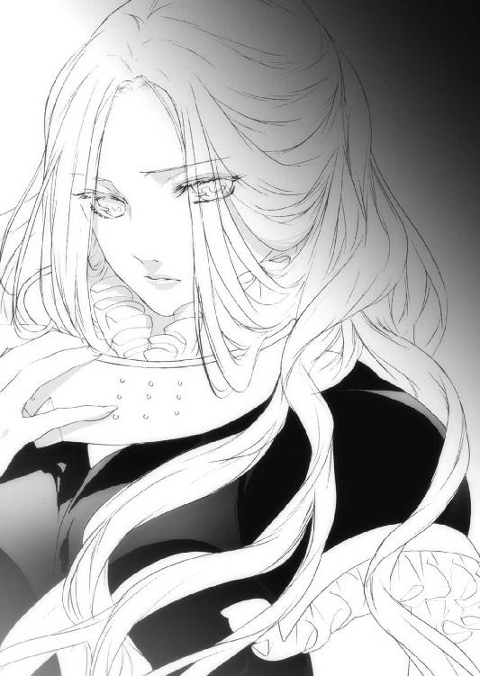
仮面を外したオリヴィアの顔は、紛れもなく十代の少女、あのキンドリーの長城で過ごした時のままだった。そばかすが残ったあどけない顔立ち、才知が宿る力強い瞳、凜々しい眉。どこからどう見ても、ザイルと同じように年齢を重ねたようには見えなかった。
「紛れもなく、レベッカご本人だな。驚いたぜ」
そう言うザイルに、オリヴィアはわけがわからない、といった具合で首を振った。
「どうしてかこの身体は......年をとらないのだ......」
「思い当たることは一つしかない。お前、子供を産んだな？」
オリヴィアは頷いた。
愛するスフィアとの間にできた忘れ形見を、産まないわけがなかった。
「オレはあの時言ったはずだぞ。マール石の力で生きているお前の体は、出産に耐えられないと」
オリヴィアは遠い記憶を思い返す。確かにザイルとの間にそんなやりとりがあった。でもその時オリヴィアは、是が非でもスフィアの子供を産む、ときっぱり宣言していた。
「魔法なんかはそこらへんの草木からマナを借りたりもするが、人は本来、自分のマナを細く長く使っていくものなんだ。ゆっくりと摂取できる栄養と量を増やし、ピークを迎え、溜めこんだマナという名の生命力を徐々に消耗し、老いていく」
ザイルの目が、厳しくオリヴィアを捉える。
「お前の中にあるマール石は、本来あのバカ王が、畏れ多くもマールの石碑と同じものを作らせるために、オレやオレの仲間の魔導師が時間をかけてマナを注ぎ込んだ石だ。その力で生きているお前が子供を産んだことで、マール石が放出するマナのバランスが狂ったんだ」
ザイルはレベッカがスフィアを本当に愛していたことを知っていたから、その時は子供を産むというレベッカの固い意志を曲げることができなかった。
それに、そんなに早く子供ができるとも思っていなかった、という油断もあった。ザイルは今になって、もっとレベッカを厳しく諫めれば良かったと後悔した。
「誰の子を産んだかは聞かないが、オレはお前に厳しいことを言わなきゃならん。お前は老いることなく、そのままの姿で死んでいくだろう......それも、近いうちに」
その言葉に、ライカは思わずカッとなってザイルに飛びかかったが、オリヴィアに易々と捕まり地面に組み伏せられた。
「落ち着け、ライカ！」
「だって、だってこの人は、酷いことを平気で──」
ぐっ、と、腕に力を込めるオリヴィア。
「ザイルは真実を言っているだけだ。そのことは私も気づいていた！」
「え？」
ライカの体から力が抜ける。
「もしかしたら、とは思っていた。子供を産んだのに私の力が衰えないのは、相対的に考えて寿命を縮めているのではないかとな」
だからこそオリヴィアは、死を恐れずフェーン地方を暴れ回り、一国の王にまで昇り詰めることができたとも言えるのだが。
「だが黒夢の魔王となった我が子を残して、死ぬ気はない！」
オリヴィアの悲痛な叫びがその場にいたガザラ王とザイル、そしてライカの胸を打った。
「ちょ、ちょっと待て。魔王が、レベッカの？ 確か魔王は銀獣人で......ということは......まさか!?」
オリヴィアはライカを解放し、立ち上がる。
そしてザイルに見せた顔は、涙に濡れていた。
「黒夢の魔王カナクはスフィアとの......っく、その妻レベッカの、私の......子よ」
涙ながらに語るオリヴィアをザイルは直視できず、足許に目を落とした。
「何という運命なんだ......お前が産んだのは、スフィアの子だったのか......」
ザイルはレベッカにかける言葉がなかった。スフィアとの子供であれば、レベッカは何があっても必ず産むだろう。
レベッカは心の底から愛した夫スフィアを失った。そのスフィアとの間に遺されていた想いの結晶は、黒夢の魔王になってしまった。
そして今度はアレンシアの先頭に立って、その息子を討たなければならなくなったのだ。
「おお、マールよ......あなたはこの世界に、あなたと同等の苦しみを抱く女性があることをご存じか......」
ザイルも涙を流しながら、天を仰ぐ。
「ありがとう、ザイル」
オリヴィアは涙を拭い、ザイルに近づく。
「スフィアを殺し、カナクを魔王にした私の仇敵はまだこの地にいる。私はどうしても、あの女を討たなければならない」
「な、に？ スフィアを、殺した？」
オリヴィアの脳裏に、スフィアの最期が蘇る。
顔を血と土で汚しながら、あいしてる、という言葉を残して倒れたスフィアの姿。そしてあざ笑うかのようにその姿を見ていた女、リーゼ。
「リーゼという魔導師はイストリアルという世界から来た。砂の体を持ち、黒夢を操る。あの影の巨人は、リーゼから剝がされた力の塊だったのよ」
ザイルはもうわけがわからなかった。オリヴィアの言うことが本当なら、ガザラにいた頃から彼女の戦いは、未だに続いているということになる。
「あのリーゼの脅威を、私はもう誰にも味わってほしくない。だから私は仮面で顔を隠し、レベッカは死んだことにした」
ザイルは何も言わずにオリヴィアの言葉を聞いていた。
「でも駄目だった。リーゼに全てを見抜かれ、愛するスフィアとの子を魔王にされ......」
「もういい。わかったよ、オリヴィア女王陛下」
ザイルは優しく、オリヴィアを抱きしめた。
オリヴィアはずっと孤独な戦いを強いられてきた。
そうしなければならないと思ってきた。
だけどオリヴィアを抱きしめるその手はごつごつしていて硬かったが、今まで感じたことのない勇気をくれた。
「ザイル......」
「一人で、よくがんばってきた。オレはお前を......いやオリヴィア女王陛下を支えよう。オレたちはキンドリーの長城で知り合った、最高の仲間じゃないか」
もう一人じゃない。あのキンドリーの長城で過ごした最後の仲間が、こうして自分を包んでくれている。
オリヴィアは今まで耐えに耐えてきた分の涙を、一気に解放した。
「うううう、ああああああああああん......」
その姿は、ただの気丈な少女の姿だった。
オーヴィル草原に、悲しい風が吹く。
ザイルはオリヴィアが泣き止んで平静さを取り戻すと、振り返って、心配そうにこちらに視線を送っているガザラ王ジェマに向かって手招きした。
「ジェマはいい王だ。思いやりがあって、優しくて、民からも、鉱山で働くドワーフたちからも慕われている。ジョンじいさんが残していったものを、多く受け継いでいるよ」
ジェマがザイルのそばに来ると、オリヴィアに改めて頭を下げた。
「ジェマ、オレはこれから暫くコルセアに滞在する。このライカという小僧を影砲士の名に恥じない戦士に育てられるのは、影砲士をそばで見てきたオレだけだからな」
ガザラ王ジェマは、それを聞いてザイルに一礼した。
「わかりました。亜父が国を空けるのは少々不安ですが、国は私にお任せください」
ジェマはそう言って、にっこり笑った。
「胸を張ってくれ。お前はもう一人前の王だよ」
そう言ってにっと笑うザイルの顔は、オリヴィアの記憶にあるものと同じだった。
「コルセアの女王オリヴィアは、ガザラ王国を救ってくれた影砲士スフィアの妻、レベッカであり、オレとは旧知の仲だ」
ジェマはそれを耳にすると驚いて一歩下がり、片膝をついた。
「やはり、そうでしたか。会議で影砲士の名を出されたので、もしやとは思っておりました。その節は父が大変お世話になりました。父に代わって心より御礼申し上げます」
ジェマはオリヴィアに対し、躊躇うことなく頭を下げた。
「ガザラ王、頭を上げて下さい」
オリヴィアはジェマの前に行き、同じく膝をつく。
「ガザラ王国を立て直したのは先王さまと、そこにいるザイル亜父です。私など、ガザラ王に頭を下げられるような大した人物ではない」
「ご謙遜は無用です。私は王位を継承した時から、ガザラは影砲士スフィアと、勇敢にして才知豊かなその妻レベッカの恩を忘れてはならないときつく言われてきました。
そのレベッカさまが建国されたコルセア王国は、ガザラの恩人の国でもあります。これからは末永く、強固な同盟国としてお付き合いしていただけたらと思います」
「ガザラ王さま......」
アレンシア南の雄、コルセア王国の女王オリヴィアと、アレンシア北東の強国ガザラ国王ジェマは、互いに膝をついたまま固い握手を交わした。
こうして世界会議は終わり、オーヴィル草原はまた元の寂しげな風が吹く地に戻った。
この日より、ガザラ王国とコルセア王国の間で同盟が結ばれ、亜父ザイラス・ウォートンは国賓として、銀獣人ライカを影砲士にするための師として、コルセアに迎えられることとなった。
第五章・裏 警戒【リーゼ】
世界会議が終了し、オリヴィア女王がザイルとライカを連れて居城に戻ってきたその直後、黒衣の女性がコルセア王都カリーンにやってきていた。
イストリアルの魔導師にして黒夢の魔王の配下、リーゼだ。
（やはり、ここから銀獣人のマナを感じる！）
確かに銀獣人がここにいる。
だが、リーゼはすぐ銀獣人に会いに行こうとはしなかった。
何故なら銀獣人のマナを感じたのが王城の中だったからだ。
（ここは......あの女の城だ）
リーゼはかつてガザラで復活した時、一人の銀獣人に黒晶石を持たせて命を奪った。
その銀獣人スフィアの妻だという女、レベッカ。
彼女はその後スフィアの子カナクを産み、オリヴィアと名を変えてコルセア王国を建国するに至った。そのオリヴィアが銀獣人を迎え、城の中にいる。そのことに胡散臭さを感じざるを得なかった。
（あの女、私を誘っているのか......生意気な！）
怒りにも似た感情が、リーゼの目つきを鋭くする。
いっそこの城を吹き飛ばしてやろうかと思ったが、考えを改めた。
銀獣人を結界も張らずにここに迎えているということは、リーゼを誘い込む罠があるに違いない。
無策でそんなことをしているわけがないのだ。
あのレベッカという娘はリーゼから見れば抜けているところが多い女だが、油断はできない力と頭脳を持っている。
どんな罠を張っているのかわからない場所に近づけば、どんな目に遭うのか。
それはガザラで身に染みていた。
銀獣人を甘く見て、百五十年も封印されてしまったのだから。
（くっ......こんな屈辱を感じたのは久しぶりだわ）
ぎりり、と歯ぎしりをする。
だがリーゼは、これ以上コルセアの城に近づくことができなかった。
第六章・表 不覚【アルマ】
やがて日が落ち、ここミスティカの首都リビリアにもぽつぽつと灯りが点り始めた。夜の帳が降り、霧が立ちこめると、町全体がまるで魔法をかけられたかのような、淡い白のヴェールで包み込まれた。
レニウスとヤヒロが部屋に戻ってきた時、アルマはまだベッドの中だった。
「おいおい、アルマはまだ起きてないのか？」
レニウスは部屋の奥にいたネウに聞いた。
「え、あ、うん、ちょっと、疲れてるのかな、はは......」
ネウは真っ赤な顔をしてアルマを弁護する。
実際アルマは猛烈に疲れていたが、そうさせたのはネウ本人だ。
ネウは先のことで猛省中だった。
アルマは自分のことをどう思っただろう。聖神官とはいえ、やはりダークエルフだと軽蔑しただろうか。
寝床を間違えた挙げ句にアルマをカナクと間違えるとは。しかも、カナクにそういう想いを抱き続けていることを、奇しくも身体を張ってアルマに伝えてしまったのだ。
ネウはできることならアルマの目が醒めなければいいのにと願っていたが......。
「おいアルマ、起きろ！ 仕事の時間だ！」
レニウスがそう声をかけただけで、アルマはあっさりと体を起こした。
「ああ、もうそんな時間か、すまねぇ......」
目を擦りながら欠伸をするアルマの声に、ネウは手にしたワンドを落としそうなくらい驚き、顔を真っ赤にした。
「どうしたの？ 顔が赤いけど」
ネウの目の前に、草人たちを両肩に乗せたヤヒロがいた。
「はわわ、な、何でもないよ！」
如何にも何でもありそうな態度だった。
そんな弱ったネウに助け船を出したのは、意外な人物だった。
「ヤヒロ、ネウは何もないといってんだ。大人を困らすな」
頭を搔きながら、まだ眠そうにしているアルマだった。ヤヒロは首を傾げつつも「はーい」と良い返事をして部屋の端にある椅子に座り、ストリングス・ボウの弦を弾き始めた。
「ネウ、今夜は集中していくぞ。折角、夜のために寝ておいたんだからな」
アルマは至って平然としていた。
「う、うん」
ネウはアルマの目をまともに見られなかった。
その後、四人は一階の酒場で食事をとった。その日は霧のせいか比較的客が多く、ヤヒロがストリングス・ボウを片手に歌い踊ってくれたおかげで、久しぶりに賑やかな酒場になった。ネウはワインに口をつけながら、ちらっと横目でアルマを見る。寝ぼけていたとはいえ、自分が彼にしたことは感触が覚えていた。
「いたい......」
寝ぼけてカナクと間違えて、よりにもよってアルマに......考えただけで、恥ずかしさで体中が燃えるように熱くなる。
アルマは大事な友達なのだから、二度とあんなことをしてはいけない。そう心に誓いながら、痛みと共にワインを飲み干すネウの横で、平静を装いつつも内心かなり動揺していた男がいた。
アルマだった。隙をついて、涙目でワインを飲むネウの横顔を眺める。こちらはこちらで、どうしてもあのベッドの中でのひとときが頭から離れなかった。
ネウの柔らかな胸、艶やかな唇、温かでいい匂いがする肌。
ネウの体の全てが、これほど甘美なものだとは思わなかった。
（あれが女ってやつなのか......）
ビールをあおりながら、女で身を滅ぼした仲間たちのことを思い出す。
リュシオルファクルは情報を扱う盗賊ギルドだ。彼らが扱う情報は危険を顧みず、勇気と知恵と最高の技術で得た貴重なものだ。
ところが、とある仲間の盗賊が女に夢中になり、重大な情報を漏らしてしまったことがあった。当然、その盗賊はそれ以来姿を見せなくなったが、アルマは女に誑かされて大事な情報を漏らすとは、リュシオルファクルの面汚しだと激しく非難した。
（もしあのまま流れに身を任せてしまって、ネウが言葉巧みに自分から情報を引き出そうとしたら、どうだっただろうか？）
ぞくり、と悪寒がアルマの背中を走る。アルマはビールをもう二口飲んだ後、図書館の女性司書から巧みに情報を引き出したレニウスを横目で見た。
（いつか、こいつに相談してみるか）
そんなことを思われているとはつゆ知らず、レニウスは歌い跳ね回るヤヒロに喝采を送っていた。
食事が済むと、四人は部屋に戻ってきた。
「はー、久しぶりに楽しい食事だったよ、ヤヒロ」
レニウスがそう言うと、ヤヒロはえへへ、と照れ笑いした。
「雑踏と、煙草の煙と、酒の匂いと、歌。やっぱり酒場はこうじゃなくちゃな、アルマ」
突然話を振られ、心を乱すアルマ。
「あ、ああ、そうだな。俺も賑やかなほうが好きだ」
とはいえそこはアルマ、抜け目なく応対する。レニウスとヤヒロはベッドに腰掛け、アルマとネウはテーブルをはさんで向かいの椅子に座った。
「で、今日は何か収穫はあったのか？」
そう聞くアルマに、レニウスが口を開く。
「まあこれまでで情報は出尽くしたような気がするが、オレが今日得た情報は役に立つかな」
「何だよ、もったいぶらねぇで言えよ」
レニウスはアルマにずいっと顔を近づける。
「図書館の六階から七階に通じる階段は、どうやら三つあるらしい」
意外と重要な情報だった。
「ほう、三つ......それが例の魔法か？」
「そうだ。このうち二つは偽物で、七階に通じる階段は一つしかない」
「ちっ、面倒だなそりゃ」
「もし偽物の階段を上がると、外に放り出される仕組みだそうだ。それも、ただ外に出されるだけじゃない。六階と同じ高さの外だ」
アルマとネウは息を呑んだ。
「無論、摑まるものも足場もない空中だ。さすがにその高さから落ちたら......」
仮にその階段を間違えてしまったとして、ネウはもともと体を置いて行くのだから、魔法を解いてしまえばいい。
だが実際そこにいるアルマは、ただではすまないだろう。
「へっ、面白ぇじゃねえか」
アルマはぱしんと拳を手に打ち、ネウに目を向けた。
「ネウ、お前が頼りだからな、しくじんじゃねぇぞ！」
ネウはきょとんとアルマを見て、そして......ぼんっ、と顔を赤くした。
「ああわあわ、わかってるわよ」
目をそらしながら慌てるネウ。やはりアルマのようにはいかなかった。
そんな二人の様子に、ヤヒロの鋭い言葉が飛ぶ。
「ねえ、やっぱアルマとネウ、何かいいことでもあった？」
のぼせる寸前のネウを置いて、アルマが代わりに答えた。
「ああ、あったぜ。すっげぇイイコトが......あっはあッ！」
次の瞬間、アルマの左頰にネウの拳がめり込む！
「あっ、あっ、アルマのバカ！」
結局、アルマはネウの拳を食らうのだった。
その日の深夜。
昼の疲れが出て眠ってしまったヤヒロの傍らに、レニウスがいる。蠟燭の揺らめく明かりが起きている三人を照らす。アルマは腫れた頰をさすりながら、椅子に座ってネウの準備が整うのを待っていた。
「じゃあ、はじめるね」
ネウの言葉に、緊張した顔つきで頷くアルマとレニウス。ネウはオリヴィア女王から賜った、かつてユーリエが使っていた碧い宝玉がついたワンドにマナを込め、床に魔法陣を描いていった。
そして陣が完成すると、最後の詠唱を行う。
「召喚の魔法！」
ぽんっ、という音と共に、小さな灰色の鼠が陣の中央に現れた。
ネウは手を休めず、今度は空中に魔法陣を描く。
「心転移の魔法！」
宙に描かれた魔法陣が二つに分裂し、一つはネウの体に、もう一つは縮んで先ほど召喚した鼠の体に張り付いた。
「おっと！」
ふらりとよろけたネウの体を、アルマが慌てて受け止めた。
「準備できたよ、アルマ」
そう喋ったのはネウの体ではなく、鼠だった。
「へえ、便利なもんだな」
アルマは脱力したネウの体を抱き、ベッドに寝かせる。
「便利だけど、力も鼠と同じだからね。猫とかに見つかると危ないんだ」
小さな体があれば仕事も楽にこなせるのにと考えたアルマだったが、その言葉ですぐに思い直した。
体が小さい分、危険は倍増するのだから。
「じゃあ二人とも、気をつけろよ。オレはお前たちの帰りを待ってるからな」
レニウスはアルマと鼠になったネウに言った。ネウはたたたっとアルマの体を駆け上り、頭の上に乗っかった。
「がんばってくるね、レニウス！」
ふるふると小さな手を振る鼠ネウ。
「やれやれ......気楽なもんだぜ」
アルマは背囊を背負い、窓を開けて人気がないことを確認すると、音もなく外へ跳び出した。リビリアの町は深い霧に包まれており、酷く視界が悪い。だがそれは不審者がいないか見回っている警備兵にも同じことがいえるし、むしろアルマにとっては好都合だった。
町では裏路地や橋の下など、身を隠すところに困らないが、流石に図書館の外壁を登っている最中だとそうはいかない。
「恵みの霧、ってとこかな」
ぽそっと呟いたアルマに、頭上のネウが話しかける。
「どう、この〝大白霧の魔法〟、役に立った？」
アルマは一瞬、足を止めた。
「まさかこの霧、お前が!?」
「うん、アルマが寝てる時にね。あたしは幻術系魔術師だし、図書館の周りだけ霧で覆えばアルマの助けになるかなと思ったんだけど......」
どうやらユーリエのワンドはマナ変換率が高いらしく、町中に霧が広まってしまったという。その分、魔法に失敗すればその反動も高効率で返ってくる、ということだが。
「ごめん、迷惑だった？」
小さな声で言うネウの頭を、アルマが指で撫でる。そして小さく、一言だけ伝えた。
「でかした」
アルマは霧の中を一気に走り抜ける。町の地図は頭に入っているから、視界が悪くても全く問題ない。
「えへへ、よかった」
ネウの声を耳にして、アルマは走りながら思った。ネウは確かにドジで、時には融通が利かないと思えるほど頑固で、一途で、しかも聖神官としてまだまだ未熟だ。
だが何故だろう。そんな未完成さや未熟さに、惹かれる瞬間がある。
アルマは常に完璧を求められてきた。作戦を練り、最小限の労力で最高の仕事ができるように動き、実行し、達成してきた。
そんなアルマの目から見るとネウは気持ちばかり先走って、無為無策で、がむしゃらだ。
（そうか、俺とは真逆なんだな）
そもそも職業的にも、人から何かを盗む盗賊と、人に施しと安らぎを与え、傷つくことすら恐れない聖神官は対極にある。
（くく......面白いもんだ）
考えてみればアルマは今まで聖神官が大嫌いだった。カナクのことだって「バカ神官」呼ばわりしていたし、コルセアの大神官になったグウェイルに膝をつきたいとも思わない。
他の冒険者とパーティを組んだ時も、聖神官とはいつもいがみ合っていた。
それがどうだ。今はその聖神官を頭に乗せ、共に一つの目標に向かって走っている。
前回のディルギニア行きの時もそうだったが、ネウと一緒にいることで嫌悪感を抱いたことなど、アルマは一度としてなかった。
（だからって、惚れているわけじゃねぇんだけどな！）
アルマは顔を赤くしながら、頭の中で思い切り叫んだ。
アルマは霧の中にそびえるミスティカ中央図書館に着くと、早速背囊から鉤爪を二つ取り出し、それを両手に持って壁を登り始めた。霧によって視界が悪くなっているのは、警護兵に見つかりづらいという利点はあるものの、侵入しにくいという欠点も併せ持つ。
だがアルマは、まるで全てが視認できているかのように、吹きつけてくる風も、高さへの恐怖感も全く気にせず壁を登りつめ、あっという間に六階西の窓に到達した。
そのあまりの手際の良さに、到底真似できる芸当じゃない、とネウは感心した。
本来、聖神官は人の道を外した盗賊を改心させる存在でもあるのに、ネウは何故かアルマに対してそんな気が起こらなかった。アルマは不当に弱者から物を盗むようなことはしないし、悪人でもない。口は悪いが腕は立つし、優しいところもたまに見せる。
ネウは銀獣人ライカをコルセアに迎える旅の帰路で、この依頼が終わればアルマとはもう一緒に旅をできないと思い、寂しさを感じた。
（認めたくはないけど、事実なのよね......）
アルマと一緒にいるのは本当に楽しい。
ふとした瞬間にネウを苦しめる、あのカナクとの別れ。
アルマがいなければ、きっと何度も泣いていただろう。
（だからといって、惚れてるわけじゃないんだけどさっ！）
ネウはアルマの髪に頭を埋め、アルマが手際よく窓枠を外すのを眺めていた。
二人は無事、図書館六階に侵入した。
辺りに人気はなく、心なしか少し肌寒い。明かりは全く無く、月明かりも入ってこないので、どちらが上か下かもわからないほどの暗闇に加え、耳鳴りがするほど静かだった。
ネウがダークエルフの体でここに来ていれば暗視が使えたのだが、今は小鼠の姿なので残念ながら視界は真っ暗だ。そんな中、アルマは慎重に、足音を立てず一本道の通路を歩いていく。やがて通路が終わり、広いホールに出た。魔法昇降床がある場所だ。アルマはそこから北の通路に入り、辺りに注意を払いながら歩いていく。
（これか！）
通路の先には、照明用の魔法のランタンに火が灯り、それをはっきりと浮かばせている。
その右手に、上へと続く階段が三つあった。
「このうちの二つが外れか......」
レニウスはもし間違った階段を上がってしまうと、この高さの外に放り出されると言っていた。だが、アルマの目にはどれも普通の階段にしか見えない。
魔法がかけられているのだから、当然だ。
「ネウ、どれが本物かわかるか？」
アルマが膝をつくと、頭の上からネウがぴょんと跳び降り、躊躇うことなく一番右の階段の前に行った。
「本物はこれ」
あまりの即断っぷりに、アルマは拍子抜けだった。
「お前、もう少し考えてもいいんだぞ？」
アルマがそう言うと、ネウはきーきー怒りながら跳ねまわった。
「あっ、あたしのことを信じられないのーっ!?」
信じていないわけがない。信じていなければ、アルマはここに来ていない。
「わかったわかった。行こう」
アルマはそう言って手を差し伸べ、ネウはその逞しい腕を素早く駆け上がって、また頭に乗った。まるで人間馬車だな、などと思いつつ、アルマはネウが指し示した階段を上り切ると、木のドアが階段の先に現れた。
ネウの読みはあっさり的中した。二人は外に投げ出されることなく、七階に到達した。
よほどあの階段にかけられた惑わしの魔法に自信があったのか、そのドアには鍵がなく、頑丈な真鍮の取手だけがついていた。
アルマがドアを開けようと取手を引いてみたが、手応えはない。逆に押してみると、少しの抵抗の後、ばかんっ、という大きな音がしてドアが開いた。かなり分厚いドアだった。
中に入るとドアはゆっくりと、勝手に閉まった。
その部屋は想像以上の狭さだった。窓はなく、漆喰で塗られた壁には小さな穴一つ空いていない。ボロボロになった木のテーブルの上にはかなり大きなオイルランプがあり、そこから三歩ほど歩いたところに小さな書架があった。
アルマはランプに火をつけた。オイルの焼ける臭いが鼻をつき、部屋を橙色に照らす。
「これだけ明かるければ、本を読むこともできそうだな」
「うん、そうだね」
ネウがアルマの頭からテーブルに移り、アルマは顔を書架に向ける。
「お前はそこを動くな。俺が探ってくる」
アルマは手袋をはめ、ゆっくりと書架に近づく。
「何であたしもいっちゃいけないのよー」
ふてくされるネウに、アルマが真面目な声で言う。
「ここまでが順調すぎるからだ。何か妙なんだよな」
それはアルマの、盗賊としての勘だった。
「そう？ この部屋からは強い魔法の力は感じないよ」
アルマはちらりとネウを見て、視線をまた書架に戻す。ネウがそう言うのなら、魔法の線はない。とすると、もっと物理的なものか。この部屋で明らかに妙だと言えるのは、外側は木なのに、内側だけ漆喰で塗り固められた入り口の扉くらいだった。
アルマは少しずつ、警戒しながら書架に手を伸ばす。
ぴた、とアルマの指先が書架に触れた。
......特に何も起こらない。
「まさか、マジで何もなしか？」
アルマは思い切って一冊の本を引き抜いてみたが、やはり何も起こらなかった。
「ねえアルマ、はやくー」
気のせいなら、それはそれでいい。アルマは書架の中から、目的の本を探した。
「......あったぞ！」
その昔、この地を訪れたフェイエルフが残したという本「世界の理」である。
アルマはそれを引き抜き、ネウがいるテーブルに持ってきて、広げて見せた。それほど大きな本ではないので、鼠のネウでも充分ページをめくれる。
「お前はその本を読んでおけ。俺は他の本を調べてみる」
「うん、わかった」
アルマはまだこの狭い部屋のどこかに、何かしらの危険を感じていた。
（この手の部屋には仕掛けがあるもんだが、それがあの魔法の階段だけだと？）
アルマは書架に納められた本の背表紙を眺めた。フリーレンの氷公伝説、ラグナの大穴の秘密、フェーン地方の尖塔、マールの旅、アレンシアに眠る七つの謎、ドラゴンには近づくな、マール石の使い方......。
（全部、持って帰ってみてぇな）
あまり本を読まないアルマですら、興味をそそられるタイトルが並んでいる。ここに蔵書されているのは、価値はあるが真偽が定かでないものや、読んだ者に悪影響を与えたり、妙な思想を植え付けるような悪書らしい。
その時、ネウがアルマに向かって叫んだ。
「アルマ、この本当たりだよ！ これの著者ラーラは、イストリアルに行ったことがあるフェイエルフだわ！」
「なに、本当か!?」
「うん。書いてあることは確かに、普通の人には馬鹿げた内容だと思うかもしれない。でもイストリアルから来たというリーゼに会っているあたしたちには、書いてある意味がわかる。黒夢の力、夢幻界イストリアル、精霊界フェイエリア......そして、白夢の泉」
これまで黒夢の魔王になったカナクを救う方法があるかどうかなんて、誰にもわからなかった。アルマだってネウにくっついて旅をしてきたものの、そんな方法があるのか、あっても探し出せるのか半信半疑だった。
だが、ネウは探し当てた。
やれる。絶対にできる。挫けても諦めない。
そんな強い信念と諦めない心が周りを動かし、ここに至らせたことをアルマは悟った。
（こういう面では、俺らの中で頭一つ抜けてるんだよな）
アルマは思う。あのコルセア女王オリヴィアですら、カナクを助けるのではなく倒す道を選んだのに。ネウがカナクを想う気持ちは、アレンシアで一番強いのかもしれないと。
「よし、ネウ、その本の内容をしっかり読んどけ。内容は後で聞く」
「うん......ふわぁ......」
鼠のネウは小さく欠伸をした。
「おいおい、昼にあれだけ寝てるんだから、眠くなるわけが──」
刹那、アルマの頭にある不安が駆けめぐった。
もしや......この部屋に仕掛けられたトラップは、既に発動していたんじゃないか？
それも他でもない、自分の手で！
アルマは弾けるように頭をテーブルの上に向け、ネウに向かって叫んだ。
「予定変更だ、今すぐ魔法を解け！」
考えてみれば、アルマも少し目の奥が痛み出してきている。眠気もある。
「はわぁ？ なんでー？」
「ハメられたんだよ、俺らは！ このままじゃお前、死ぬぞ！」
成人男性のアルマならともかく、小鼠の体であるネウには、このトラップは危険すぎる。
「はわ......にゅー......」
くてん、と体を折るネウ。アルマは必死にその体をさすり、意識を戻そうとした。
「急げこのバカドジ神官！ カナクを助けるんじゃなかったのかよ！」
「うー......かなくさん......すき」
「そういうことを言ってるんじゃねぇ！」
今なら、まだ間に合う。
アルマは急いで水袋の中身をネウの頭からかけた。
「ひゃんっ、つつつつめたいいいい！」
「起きたかドジ神官！ 早く魔法を解け！」
「う、でも、本が......」
「命の方が優先だ！」
ネウは不服そうにしながらも、「わかったよー」と言って魔法を解くと、淡い輝きが鼠の体を透かせていく。
「アルマ......気をつけてね、ちゃんと帰って、きてね」
ネウは最後にそう言い残し、姿を消した。
（すまねえな、約束はできねぇかも）
アルマはネウが読んでいた本を手に、部屋のドアを開こうとして......開けられなかった。
何と、内側のドアノブがなかったのだ。
「まいったな、まさか、こういうこととは」
がくん、と膝をついたアルマは、恨めしそうに赤々と明かりを部屋に振りまくランプに目を向けた。狭い部屋に、大きすぎるランプ。そこに火をつけたのだから、当然酸素は急速に奪われていく。
この部屋は入るとき、かなり力を込めて押さなければならなかった。つまり、密閉性が高い部屋なのだ。そこに火を灯したことで急速に酸素が奪われる。妙な眠気や目の奥の痛みは、酸欠の症状だ。
（やられたぜ、ここにきて、こんな古典的なトラップだったとは）
アルマはテーブルのランタンの火を消そうと試みて、やめた。アルマはどうやってこの部屋から脱出するかを考えたが、やはり突破口は出入り口のドアしかない。
そこに入ってきた時と同等の力で引いてやれば、必ず開くはずだ。
アルマは目眩を起こしながらも、背囊を広げて中を確認する。
頑丈なロープが二本、ダガーが三本、壁登り用の鉤爪が二つ、空の水袋が一枚、非常食の干し肉。鍵開け用のピッキングセット。それと大きな布があった。
次に部屋の構造を見てみる。まず、何といっても漆喰が塗られたドアだ。ダガーをあてて、柄の部分をもう一本のダガーの柄で打ちつけてみると、パラパラと漆喰が落ち、ナイフが刺さった。そのドアの正面に立ち、ゆっくり振り返ると真正面に本がどっさり入った書架が鎮座している。ドアから左手にあたる場所には、大型ランプが乗った丸テーブルと椅子がある。ドアから見て右手には何もなかった。
アルマは書架の前に行き、その背面を確かめる。書架は壁に固定されているわけではなく、書架と壁の間に隙間があった。
書架自体は本がぎっしり詰まっていて、一人の力では動かせそうにない。
その時、アルマを強烈な吐き気と頭痛が襲った。
（ち......ぐずぐずしてらんねぇか）
アルマは朦朧としつつも、この部屋を出るために、ネウの許へ帰るために、動きはじめた。
第六章・裏 狂いはじめた歯車【リーゼ】
夕焼けが空を染め上げ、街に灯が点りはじめた頃。
リーゼがコルセアの銀獣人を襲撃するのを諦め、舌打ちをしていたその時、背後からコルセアの兵士が興味深いことを話し合いながら歩いてきた。
「おい聞いたか。今度アレンシア中の王が一堂に会する世界会議が行われるんだってよ」
「お前、その情報はもう古いぞ。世界会議は、もう終わってるんだからな」
「何!? いつのまに!?」
「お前がぼんやりと訓練をサボっている時にさ。でな、今度の戦では闇種族とも手を組むことになるらしいぜ」
「なにぃ、本当なのかそれは!?」
その時、リーゼがその兵士たちの前に立った。
「お、おお、これは、美しい......」
「我々に、何か？」
リーゼは怪しく笑みを浮かべ、二人の兵士の首筋に触れる。
「ねえ、あなたたち......今夜、お暇？」
妖艶なリーゼの言葉が、二人の兵士の妄想をかき立て、平常心を奪う。
「も、もちろん暇だよ」
「だがこっちは二人だ。もう一人女の子がいないと──」
足踏みする兵士に、そっと寄り添うリーゼ。
「私は一人じゃ物足りないから、二人一緒がいいなぁ」
兵士たちは顔を見合わせ、息を飲む。
「よし、そ、それなら問題ない。早速行こうぜ！」
降ってわいた幸運に感謝しつつ、兵士たちはリーゼと夜の町へと消えていった。
翌朝、カリーンのとある宿屋の一室で全裸の兵士二人が、眠りものとなって発見された。
（世界会議だと......？）
リーゼはあの口の軽い兵士たちから情報を得ると、瞬間移動魔法でコルセアを離れ、トロルの国オーダスへやってきた。
トロルの王は以前リーゼが密かに廃し、その代わりとしてリーゼが王の姿になって以来、ずっとリーゼがオーダスを動かしていた。
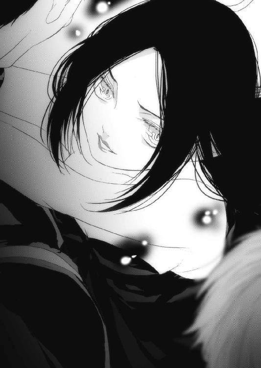
あのリヴァルト王国襲撃も、リーゼの一存で決められたことだった。
普段は体調不良ということにして姿を消しておき、いざというときにオーダス王の姿になって国内の決定事項を裁いてきたのだ。
リーゼはオーダス王の姿になり、玉座に腰掛けて世界会議に参加してきた二人を待った。
おそらく、その世界会議というのは魔王への対抗策を話し合う場だろう。だが王が不在だったオーダスは、王子と宰相が会議に参加してしまったという。
（私がその会議に参加していれば、もっと面白いことをしてやれたものを！）
悔やんでも仕方がない。
世界会議は、もう終わってしまったのだから。
「父上！」
その時、オーダス王の息子ゴバーナ王子と、オーダスの宰相が部屋に入ってきた。
「父上、捜しましたぞ。いったい何処に──」
「ゴバーナぁ......」
ぎろり、と丸い目玉を王子に向ける。それだけで王子は萎縮し、体を震わせはじめた。
「きっさま、誰に断って世界会議などに出た？」
リーゼはオーダス王の性格、口調、癖などを完全に覚えていたので、ただですら頭の回転はあまりよろしくないトロルたちに、目の前の王が偽者であるなど、見抜くことはできなかった。
「し、しかし、グレイウッズもログナックも、果てはディルギニアのフリーレンまでもが参加した会議なのです。我らだけが出ないわけには......」
『やかましいいいっ！』
リーゼがそう怒鳴ると、ゴバーナ王子と宰相は今にも泣きそうな顔になって縮こまる。
「で、その会議でワシらは何をさせられることになったぁ？」
ゴバーナはアレンシア連合軍におけるオーダスの役割を包み隠さず話した。
集結は中央平原である。夢魔の被害が大きいオーダスとセレンディアの二国は、前線ではなく後方支援に回ることになったという。
「ふん、随分面白くねえじゃねえかぁ？」
リーゼは立ち上がり、ゴバーナと宰相に向かって言い放った。
「いいか、ワシらオーダスはそんなつまらん役はやらん！ アレンシア連合軍が集まったら、その隙にグレイウッズ、ログナックに全軍で攻め込め！」
その言葉に、ゴバーナと宰相はさすがに凍りついた。
「そ、それは、世界会議の盟約を破ることに──」
「やかましいっ！ ワシを差し置いて決めた会議なんぞ、無効じゃい！」
リーゼはこのオーダスという国では、王が絶対的な権力者であることを熟知していた。
「いいな、しかと命じたぞ？」
うなだれる二人を後目に、リーゼは部屋から出て行った。
だが、リーゼの気分はどうにも晴れなかった。
これまで万事、自分の思い通りに事を進めてきたのに、先の銀獣人の件といい世界会議といい、常に後手を取らされている。
何かしら、歯車が狂い始めているのを感じた。
（ここは一旦引くか。夢魔も集めないといけないし）
リーゼはこうして、ひとまずカナクがいる西の居城へ戻ることにした。
第七章・表 世界の理【アルマ、ネウ】
アルマは背囊からロープ二本とダガーを三本、それと布を取り出した。
ダガー二本は扉の上下にしっかりと打ちつけて固定する。残った一本のダガーで布を切り、ドアに突き立てた二本のダガーの刃を布でくるむ。
そして上側のダガーの刃と柄にロープを結び、下側のダガーと交互にかけていく。三重ほどロープをかけたところで、その中心部分でもう一度ロープを固く結び、部屋の中央に向かって垂らす。長さはまだ充分だ。
そのままゆっくりとロープを引っ張ってみたが、ロープがきりきりと軋む音を立てるだけでドアが動く様子はない。
アルマは嘆息し、もう一本のロープを手にする。こちらは先端を書架の背後の隙間に通し、書架の背面を一本のロープが通る形にした。そしてロープの先端同士が均等になるように揃えると、書架の中央あたりで固く結び、余裕がある分を部屋の中央に持ってきて輪を作った。
アルマは重くなる体、荒くなる息、滴る汗に耐えながら淡々と作業を進めていく。大きなランプの明かりはまだ煌々と部屋を照らしている。本来ならすぐにでも消したいところだが、明かりなしでこの細かい作業は不可能だった。
震える手で書架に結んだ輪の中に、ドアから垂れるロープを通す。あとは椅子とテーブルがある場所の反対側、何もないスペースに移動し、そこからドアにつけたロープを引っ張ることで書架を縛ったロープが支点となり、普通に引くよりも大きな力をドアにかけることができる。
問題は消耗しているアルマの体力と、その力に書架が耐えられるかだ。ここで書架がアルマの力に負けて倒れてしまったら、もうアルマに為す術はない。
ここから先は暗闇でも可能だ。アルマはランプの火を消し、所定の位置に着く。
（絶対に、諦めない。そうだろ、ネウ）
アルマは漆黒の中、ゆっくりとロープを引いて力を込めていった。みちみち、とロープが鳴き声を上げ、アルマの力がロープを伝って部屋の中央へ、そしてドアに打ち込んだダガーへと伝わっていく。
焦って急に引っ張ると、ドアを開けるどころかダガーが抜けてしまう可能性がある。アルマは慎重に、ずっしりと重くなってきたロープを引いていく。
こんなところで倒れるわけにはいかない。アルマはギルド命令で、ネウの旅に随行しなくちゃいけないんだ、こんな暗く寂しい部屋でくたばってたまるかと、思い切り歯を嚙みしめて腕に力を込めた。すると──
ばかん、という大きな音がしてドアが開いた！
一度開いてしまえば、あとは手でも動かせる。アルマは疲労と酸欠による意識障害と頭痛で今にも倒れそうだったが、何とか足を前に出して巨大なランプの上に本を数冊載せ、ドアの前に立てかけ、再び閉まらないようにした。
そして、ネウが読んでいた本「世界の理」を背囊に入れた。
「はあ、はあ......や、やったぞ......」
アルマはドアを背にずるずると座り込み、気を失ってしまった。
気がつくと、階下の六階は微かに明るくなっていた。
アルマが慌てて時計を見ると、もう朝の四時を過ぎていた。
（しまった......約束の時間に遅れた）
アルマ自身、まさか図書館でここまで足止めを食らうとは考えていなかった。
急いで来た道を引き返し、六階西側の窓から外へ出た。既に霧は晴れ、澄み渡った空にヴァスト山脈が雄壮な姿を浮かばせている。地面に足を着けると、朝露に濡れた夏草の香りがアルマの鼻を擽り、ジュリキュール川のせせらぎが耳を撫でる。新鮮な空気が吸えることに感謝しつつ、アルマは図書館入口の階段を駆け降り、約束の橋へ向かった。
都市中心部から三番目の堀の、東側の橋。そこが待ち合わせの場所だった。
（昨日といい今日といい、最近ツイてないことばかり起こるな）
アルマはそんなことを考えながら重たい体を引きずり、土を蹴る。
そしてようやく、約束の橋にたどり着いた。
「遅かったっすね」
早朝の、程よく冷えたジュリキュール川の水より冷たい言葉が、息上がるアルマの後頭部に突き刺さる。
「す、すまんな......いつもはデートに遅れることはないんだが」
アルマの前には大きなフードを被り、膝上までのローブを着た人物が立っていた。
「アルマさんがエッチな割に女性の扱いが得意でないことくらい、ギルド中の誰もが知ってるっすよ」
呼吸が乱れて痛む胸を、思い切り抉るような毒を吐かれた。
「あのなあ、部下なら部下らしい口のききかたっつーもんが──」
「アレンシア各国の動きが活発になってるっす」
「──あるだ......あ？」
その人物はフードを取り、顔を見せる。凍るような冷たい風が、彼女の蒼い髪を躍らせた。目鼻立ちははっきりしていて、ガザラ生まれっぽい顔だ。背が低く、お世辞にも美人というタイプではないが、愛くるしい容姿である。
彼女はナディといい、リュシオルファクルのアルマ班に所属する盗賊だった。
「先日、ムーアから連絡がありまして、フェルゴートでアレンシア各国の王が一堂に会する世界会議が行われたそうっす」
アルマは橋の欄干にもたれかかり、顎に手を当てた。ムーアもアルマの部下の一人で、フェルゴートの周辺に置いている連絡係だ。
「他は？」
「これはフェーン地方担当のマヤからっすが、世界会議終了後、コルセアはガザラからザイラスという人物を迎えたそうっす」
いよいよ、準備が整いつつある。アルマはそう感じた。
「どうやらアレンシア中が動き出しそうだな」
ナディは悲しそうに目を細める。
「また大きな戦が起こるっすか？ 戦争だけは、もうイヤっす......」
ナディは今は無き西の小国リヴァルト王国の出身で、幼い頃に戦に巻き込まれ、戦災孤児となった。リュシオルファクルが彼女の身柄を預かるまで、それは惨めな生活を送っていたらしい。
アルマはそんなナディの頭をぽんと叩き、笑顔を見せた。
「大丈夫だ。黒夢の魔王や夢魔がこんだけ暴れてる中で、国同士の戦なんか起きねえよ。どの国もそんな余裕はないしな。むしろ争っていた国が休戦して、魔王に......」
アルマはハッとした。疲れがピークに達している今だから、そこに考えがいたったのかもしれない。
まさかとは思うが......調べてみる価値はありそうだ。
アルマはそう思い、ナディに指令を下す。
「ナディ、次の仕事だ。俺の部下たち全員に各国の軍の動きを調べさせろ！」
アルマの部下はジェド三国を除けば、ほぼ全国にいる。これらの国の動きを、いち早く押さえておきたかった。
「それは、ジェドも含めてっすか？」
「そうだ。ディゴバのカリリスに伝えろ。ログナック、グレイウッズ、オーダス......それにディルギニアもだな。これらの国に軍事的な動きがないかを調べろとな」
カリリスとはやはりアルマの部下で、ディゴバに常駐させてジェドの動きを監視させている。可愛い名前だがもう三十歳になる髭面のドワーフで、以前ディルギニアのセスコム荘の情報をアルマにもたらしてくれたのも彼だった。
「わかったっす......それと、アルマさん」
「ん？ 他に何かあんのか？」
「私は、アルマさんをお婿さんにしたいと考えてるっす」
どさくさに紛れて逆プロポーズだった。しかも眉一つ動かさず、平然と。
「ああ、ありがとよ。だがお前の目当ては俺の金と地位だろ？」
アルマがそう言うと、ナディは頰を染めて視線を逸らす。
「そんなにはっきり言われると、照れるっす」
実に素直な金と地位への執着だった。
「いいから早く行け！」
アルマに急かされ、ナディは再びフードを被る。
「アルマさんはいつもそうやって仕事のことばかりっす」
ローブから腕を出すと、その手には刃が青いダガーが握られていた。
「でも、そんなとこも......イイっす」
ナディはダガーの切っ先にマナを込めると、素早く魔法陣を描いた。
「変身の魔法！」
宙に描かれた魔法陣が回転しながらナディの体を通過すると、大きな鳥に姿を変えた。
「じゃ、行くっすね、ダーリン」
ナディはそう言い残し、凍った空に向かって飛び立っていった。
「何がダーリンだ！」
そんな叫びは、虚しく町の静寂に溶けるだけだった。
アルマはその後、さらに重くなった足取りで宿屋「蠟燭亭」に帰ってきた。
結局、朝になってしまった。さすがにもう誰も起きていないだろうと思い、よろよろと部屋のドアを開けた、その時だった。
「アルマあっ!!」
いきなり抱きつかれ、足がもつれて転倒した。真っ赤な目をしたネウだった。
「お、お前、起きてたのか!?」
アルマの上に乗ったまま、こくんと頷く。
「だって......だって、あんなに怖いアルマ、初めてだったし......あの後なかなか帰ってこないし...‥心配したんだから！」
ネウは魔法を解いてこの部屋に意識を戻してから、一睡もせずにアルマの無事を祈っていた。あの部屋に仕掛けられていたトラップは魔法を使ったものではなく単純なものだっただけに、ネウには何が起きていたのか全くわからなかった。
故に、余計アルマのことが心配だったのだ。
「大丈夫？ 怪我とかしてない？」
アルマはネウの頰を撫でると、震える体を無理矢理起こした。
「何ともねぇ。強いて言うなら......」
「なら？」
「お前が近い」
ネウはアルマの上に乗り、顔を近づけていたことに気づき、頰を赤らめて立ち上がった。
「ぶ、無事なら、それでいいよ」
顔を背けつつ、アルマに手をさしのべるネウ。
アルマは正直なところ、昏倒寸前だった。酸欠のトラップにかかり、その後図書館六階から壁を降り、走ってナディと会っていたのだから。
だがそんなことは全く表に出さず平静を装ってネウの手を取り、言ってのけた。
「俺を誰だと思ってるんだ。天下の大盗賊団、リュシオルファクルのアルマだぞ」
本音は〝今回はダメかと思った〟なのだが。
「えへへ......おかえりアルマ」
安心したからか、満面の笑みを浮かべるネウに「おう」とだけ告げて、アルマは背囊の中から一冊の本を取り出し、ネウに渡した。
「あっ!? これ、持って来ちゃったの!?」
アルマはベッドに身を投げる。今すぐ眠れそうだった。
「非常時なんでな、ちと借りてきた。なるべく早く読んでお......け......」
その台詞を最後まで口にすることはできず、アルマは意識を失い眠りに落ちた。
ネウはアルマが力尽きたように眠りに落ちると、本をテーブルに置き、布団をかけ、その疲れ切った寝顔を眺めた。
（意地っ張りだなあ、アルマは）
ネウは溜息をつきつつも、口元を緩める。いつも飄々としているアルマがあれだけ慌てていたのだから、何ともないわけがない。
でもきっと、アルマはそんな苦労を周りに話したりはしないだろう。
「よっし、あたしも頑張ろう！」
ネウは毛布を膝掛け代わりにして椅子に座り、アルマが苦心して持ち帰った「世界の理」の続きを読み始めた。
それから暫くして、レニウスが起きてきた。
昨夜はレニウスも暫くネウと共にアルマの帰りを待っていた。だが昼間に忙しく動いていたレニウスは疲れていたので、先に寝てもらったのだ。
「まだ起きてたのか、ネウ」
眠そうな声をかけてきたレニウスは、ベッドに目をやって、そこにアルマが寝ていることに気づいた。
「そうか、無事に帰ってきたんだな」
ネウは本に栞を挟み、目を擦った。
「うん。本人は何もなかったって言ってたけど、かなり疲れてました」
レニウスは寝息も立てず眠るアルマに目を落とし、ネウが座っていた場所の、テーブル越しに対面の椅子を引いて腰掛けた。
「アルマは凄い奴だな。何だかんだ言って俺たちを引っ張ってくれてるもんな」
ネウは優しく微笑んで、なにも言わずにアルマを眺める。
ネウは魔王になってしまったカナクを救いたいという想いを抱き続けてここまで来た。でも、果たして自分はアルマと同等の危険を味わってきただろうか。
いくらギルドの命令だろうが、コルセアの頼みであろうが、アルマは明らかに割に合わない仕事をしている。
「いずれアルマには、きちんと礼をしなきゃな」
レニウスはそう言って、ネウの肩を叩く。
「そうですね。本当にそうです」
特にネウはアルマに頼っている面が多い分、レニウスに言われなくてもそう感じるところは大きかった。
「ところで、図書館の七階で何か発見はあったのか？」
「あ、はい。アルマが持ってきてくれました」
ネウはテーブルの上の本をレニウスに手渡す。
「何だ、持ってきたのか」
レニウスは驚いてその本を開き、ぱらぱらとめくる。
「まずかった、ですかね？」
不安そうに聞くネウ。
「問題無いんじゃないか？」
意外にもレニウスはそう言い、レニウスは本をネウに返して椅子に腰掛けた。
「オレはあの図書館の司書マリアナと懇意にしてきたが、進入経路、逃走経路からオレみたいな聖剣士の仕業じゃないことはすぐわかるだろうからな」
「ってことは、盗賊と魔術師の仕業っていうのは、すぐにわかっちゃいますか？」
「そりゃあ明白だろうさ。だが図書館側はそれに対して何もしないだろうよ。寧ろ、必死に隠蔽するはずだ」
ネウは首を傾げ、ベッドに腰を下ろす。
「どういうことですか？」
「考えてみろよ。あの図書館はミスティカ公国が誇る宝だぞ。その分警備も厳重だし、七階への階段には魔法のトラップまで施してあった。それが全て破られた挙げ句に蔵書を持ち出されました、何てことになれば、館長の責任は大きい」
ふむふむ、とネウが本を抱えて頷く。
「七階の本全てが盗まれたというなら話は別だが、もともとそこの蔵書は館長と一部の司書しか知らないんだ。一冊無くなった程度なら、それを公表さえしなければ、七階から本を盗まれたと誰が言えるんだ？」
「......あ！」
ネウはハッとして、レニウスの言いたいことを理解した。七階に何が保管されているのかを知る者が一冊の本を失った事実を公言さえしなければ、それを裏付けることは誰にもできない。ネウとアルマははからずも、峻厳な警備の隙を突いたのだ。
「まさか、レニウスはそこまで考えて？」
呆れたように言うネウに、レニウスは微笑を浮かべる。
「肝心なのはその〝世界の理〟という本の内容を把握してくることだが、仮に本そのものを持ち帰ったとしても、図書館側は何もできないだろうということは計算に入っていた」
はぇー、と息を漏らして感服する。先の先を読み、幾通りもの状況を読んでおく。それはレニウスだからこそできることであって、ネウには到底真似できない芸当だった。
「さてと、さらに念には念を入れて、今日にもリビリアを出発しよう。次の目的地はコルセアのジェノアだろ？」
「え、ええ、そうですけど」
レニウスは眠るアルマとヤヒロに目をやり、再びネウに言った。
「あの調子じゃ、まだ二人は起きないな。じゃあネウは今のうちに寝ておいてくれ。オレはこの宿を引き払う準備をしておく。それと念のため、その本に妙な魔法がかけられていないかも調べておくんだぞ」
「は、はいっ！」
レニウスはそれだけ言い残し、部屋から出て行った。
それから三時間後、ヤヒロと草人たちが起きてきた。ネウはヤヒロと一緒に起きて一階の酒場で朝食をとった後、ヤヒロたちと共に旅支度をはじめた。
とはいえ旅慣れているネウは旅に何が必要で、何が不必要かを見分けるのが早い。あっというまに荷造りを終えると、あとはもうアルマが起きてくるのを待つばかりとなった。
その後、昼前になってようやくアルマが起きてくると、ネウはヤヒロと一緒にレニウスが言っていたことを伝えた。
「あー、そういうことかよ......なるほどなあ」
アルマには状況がすぐ理解できたらしい。がしがしと頭を搔き、布団から飛び起きた。
「出立の準備はもうできてんのか？」
ネウはヤヒロと顔を見合わせ、もうできてるよと言うと、アルマは顔を擦って無理矢理目を醒まして口を開いた。
「よし、じゃあ早速ここを出るか。レニウスは？」
ヤヒロがストリングス・ボウを担いでアルマに言った。
「下で馬の準備をしているよ。じゃ、先に行ってるから！」
ヤヒロはそう言い残すと、草人たちを肩に乗せて部屋を出て行った。
「はー、随分と手際がいいんだな......」
不意にアルマを脱力感が襲い、膝が折れる。
そんなアルマを支えたのは、ネウだった。
ネウはそのままアルマをベッドに座らせ、自分もその隣に座った。
「本当に大丈夫？」
アルマの本音では一日くらい休息の時間が欲しかったが、ここでやることがなくなった以上、早く次の目的地に向かいたかった。
やはりミスティカ公国というのは、アルマの肌に合わなかった。
「寝起きで立ちくらみを起こしただけだ。さあ、早く行こうぜ」
アルマは自然にネウの手を握り、立ち上がる。
普段、ネウがアルマにそんなことをされたら、きっとその手を振りほどいてしまっただろう。だがその時だけはその手をしっかりと握り返し、アルマと共に部屋を後にした。
こうしてネウら四人は蠟燭亭を出立し、ミスティカの首都リビリアからコルセアの西、森の暗道にあるフォレストエルフの町、ジェノアに向かって旅立った。
リビリアからジェノアまでは、馬を飛ばして最短で二十日程度かかる。
パーティはミスティカの首都リビリアを出立し、ガザラ王国最南端の町フェノンを目指して馬を走らせていた。そこまでたどり着けば、安全な街道を走ることができる。だがフェノンに到達するためには、ミスティカ南部の過酷な道を抜けなければならなかった。
ネウたちは草木が生い茂る荒れ地や切り立つ苔むした岩場で襲ってきた魔物を倒し、人気の無い丘陵地帯や危険な暗き湿地帯では夢魔を退け、廃墟となった古城で雨露を凌ぎ、黒いマナが渦巻く洞窟の入口で横になった。
ネウはこうして旅の辛さを味わう度に、千年前にこの地を旅し続けた暁の賢者マールの偉大さをその身に感じていた。旅人や冒険者には、次の町までの辛抱だから今は頑張ろうという心の支えがある。そこまで行けば暖かい布団とスープがあり、魔物の影に怯えることなく熟睡できる至福の時間が待っている。
だがマールに、そういった類いの支えは何一つ無かった。町に入っても必要最低限の食料だけ買い、すぐにまた旅立っていく。それが如何に辛いかは、実際に旅をしてみなければわからないものだ。
ネウにしても辛い旅をしているとはいえ馬に乗って、仲間たちと一緒に移動しているのだから、いつも一人だったマールの辛苦とは比べるべくもない。
こうして聖神官や冒険者、旅人たちはどんなに旅が辛くても「マールに比べれば......」と自分を励ますと同時に、マールへの畏敬の念を深めていくのだ。マールが神として崇められるようになった背景には、やはりこうした旅人たちの支持が大きかった。
やがてネウたちの前に、ヴァスト山脈から流れてくるアレンシア北東部最大の川、ジュリキュール川の支流が立ちはだかった。この川は流れも速く水温も低い。その上川幅も広いので、迂闊に足を踏み入れるとあっというまに流されてしまう。
雨や風が強ければ決して足を踏み入れてはならない川であり、この地方で最大の難関とも言えるのだが、それはパーティの中に「吟遊詩人」がいなければ、の話だった。
「ヤヒロちゃん、またお願いできる？」
ネウは対岸に目を向けながら、ヤヒロにそう声をかけた。時刻は昼過ぎ、風はなく穏やかで、ちぎれ雲がいくつかぽっかり浮かんでいるだけの晴天だった。
川を渡るなら、今をおいて他にない。
「任せて！」
しゃらん、とストリングス・ボウの弦を弾くと、比較的ゆっくりとした曲を奏で始めた。
するとネウたちが乗っていた馬の足がほんのりと輝き、ふっと地面から離れる。
これは吟遊詩人の呪曲「浮遊の呪曲」である。
「よし、行くぞ！」
レニウスがそう叫んで手綱をゆっくりと引くと、馬が恐る恐る足を前に出し、まるで透明の橋に足をかけているように川の上を横断していく。そしてレニウスとヤヒロの馬の後にアルマとネウの馬、そして荷物を載せた馬と続いていった。
この手の魔法は吟遊詩人でなくとも魔術師の「浮遊の魔法」があるが、何より持続力が違う。これほど幅のある川をパーティごと移動させるには、かなりのマナが必要なのだ。
こういった場面では吟遊詩人の〝マナを少量しか使わないが、効果を発揮するには演奏し続けなければならない〟という特徴が活かされる。もっとも〝大声や楽器の音は、魔物や夢魔を呼び寄せてしまう〟という欠点に目を瞑ればの話だが。
こうしてヤヒロの歌で無事にジュリキュール川を越えたネウたちは、さらに南東へと馬を走らせ、出会った夢魔を倒しながらフェノンの町に辿り着くと、ネウたちはそこで二泊して必要な物資を買い集め、再び旅路についた。
ここからはまたヤヒロの出番である。吟遊詩人の「快速の呪曲」は、人や馬の足を速くできる。この歌を使えば、かなりの時間短縮になる。
ネウたちはフェノンの町から街道沿いに南のタロン王国王都タロンを経由し、さらに南下してフェルゴートを通過、コルセア王国に入ってジェノアを目指すことにした。
ヤヒロが馬の上で器用にストリングス・ボウを奏でると、四頭の馬の速度が徐々に上がる。風が髪を巻き上げ、夏の焼けた風に身を焦がす暇すらなく、地面を滑空する鳥のように街道を駆け抜けていった。
そして、フェノンを出立して三日目の夜。
「快速の呪曲」のおかげであっという間にタロン王国を過ぎ、もうフェルゴート王国国内に入っていた。湿った岩と木々に囲まれた街道の脇に見つけた広場でキャンプの準備をしているレニウス、アルマ、ネウの横で、一日中ストリングス・ボウをかき鳴らしていたヤヒロが力尽きたように天を仰いで寝息を立て、草人のカナちゃんとユーちゃんが大きめの葉っぱでヤヒロの顔に涼風を送っていた。
「こんなに小さいのに、吟遊詩人としての腕と根性は一流だな」
レニウスはそうヤヒロを褒めて、彼女を抱えてテントの中に連れて行った。
「ちくしょう、この辺りは雨が降ったみたいだな。薪が湿って火がつかねぇ！」
アルマは薪に火を熾そうとしていたが、水気を含んだ枝に苦戦していた。
「じゃあ、まかせて」
ネウはワンドを手にしてマナを集め、宙に魔法陣を描く。
「乾燥の魔法！」
そう叫んで魔法陣を薪に飛ばすと、回転した魔法陣が水気を一気に飛ばし、水蒸気が空へと立ち上った。
「魔法とか呪曲ってのぁ、つくづく便利だな」
アルマはすかさず薪の下に敷いた枯れ草に火打ち石を叩く。かりかりに乾いた草は火花をすんなりと受け入れ、赤々とした炎をその身に宿した。
「そうだよね。でも、ちゃんと使えるようになるには修行と練習は欠かせないし、それでも失敗しちゃう時もあるし......」
ネウはコルセアのオリヴィア女王に命じられ、レニウスと共にディルギニアへ行った時のことを思い出し、恥ずかしさを覚えた。
「そういえばお前、以前レニウスに治癒魔法をかけようとして失敗したんだって？」
アルマが意地悪そうにニヤニヤしながら言う。ネウは瞬時にして顔を赤くした。
「レニウスも可哀想になあ、ネウのドジっぷりを知らなかった頃だって──うおぁっ！」
「うるさ────────いっ！」
言葉を遮るように、ネウがアルマに飛びかかった。ネウはアルマの腹に乗り、胸をぽかぽかと叩く。ネウの温もりが、アルマを激しく動揺させた。
「あたしだって、一生懸命やってるもんっ！」
「わか、わかったから、離れろって！」
「いーや、今日という今日は許さないっ！ このこのこの......」
ぽかぽかとネウが叩く度にネウの柔らかい太ももがこすれて、アルマの制御不能な部分を刺激する。
「わ、悪かった、ゴメンなさいっ、カンベンしてくれっ！」
その時、テントから出てきたレニウスの瞳が、じゃれあう二人を捉えた。
「んー、あー、こほん」
レニウスの咳払いで我に返るネウ。
「そういうことをするなとは言わないが、せめてオレが寝てからにしてくれないか？」
慌てて距離を置くネウとアルマ。その顔は先ほどつけた炎より真っ赤だった。
「いいなあ。オレも早くリリルに会いたいぜ」
嘆息しながらそういうレニウス。
「ご、誤解だ────！」「誤解です────っ！」
アルマとネウは声を揃えて叫んだ。
薪に火がつき、その熱で棒に刺したチーズの塊を溶かす。
とろりと柔らかくなり、辺りに豊かな芳香が漂う。
「おお、う、旨そうだな」
空腹のアルマはこの魅惑的な黄色い塊に唾を飲み込む。
今日の火の番はアルマだ。レニウスはその間パンを削り、ネウは鍋に水を入れてスープを作るための仕込みをしていた。
こうして夕食の支度が済むと、三人は火を囲んでチーズのせパンととうもろこしのスープを口に運んだ。ヤヒロの分は今日の見張りであるネウが起きてから与えることにしていたので、レニウスとアルマに食べ尽くされないよう配分に気を遣っていた。
「さてネウ、そろそろあの〝世界の理〟の内容、話してもらえるか？」
「あ、はい。えっと──」
ネウは「世界の理」の内容をかいつまんで話した。
それはラーラというフェイエルフが記したもので、彼女は幼い頃、自分の世界である精霊界フェイエリアから、白夢の世界イストリアル・セントラルに迷い込んでしまった。
とてつもなく高い壁に囲われた町で、入口も出口もない。途方に暮れて泣いていたその時、ラーラは一人の美しいイストリアル人に助けてもらった。
ちゃんとあなたの世界に返してあげるから、と優しくラーラの手を引いて、真っ白で大きな城に入った。その人はその城のお姫さまで、彼女から世界の仕組みを教えてもらい、白夢の泉という場所を通って無事にフェイエリアに帰って来たという。
その後ラーラは成長し、イストリアルの他にも現世界アレンシア、つまりここの存在を知り、フェイエリアにある白夢の泉を通ってアレンシアへやって来た。
その貴重な体験を一冊の本に記し、ミスティカの図書館に寄贈したという。
「おいおい、夢の世界？ そんなバカなことが、と言いたいところだが......」
ネウはそう言うアルマに、頷いて見せた。
「あたしたちはこの本に書いてあることが真実だっていう確信を持てる。何といっても、あのリーゼがやってきたという場所はこの本に書かれている場所と一致するんだから」
「ああ......イストリアルか......」
レニウスとヤヒロが固唾を呑む中で、ネウは話を続ける。
この世は現世界であるアレンシア、フェイエルフたちが住む精霊界フェイエリア、そしてアレンシアの者たちが見る夢が力を持つ世界、夢幻界イストリアルという三つの世界で成り立っている。アレンシアとフェイエリアはある程度近く、白夢の泉を通じて行き来が可能である。故にラーラのようなフェイエルフがごく稀にアレンシアに行くので、アレンシアではフェイエルフも稀少種族と呼ばれている。
一方、イストリアルは特別な世界で、フェイエリアに偶然発生する穴を抜けなければ行くことはできない。イストリアルは現世界アレンシアの人が見る幸せな夢・白夢と、欲望や絶望からなる黒夢に分かれており、黒夢はセントラルという場所で浄化され、白夢となってアレンシアに帰っていくという。
「何だかややこしくなってきたが、そもそも黒夢は夢魔と何か関係があんのか？」
パンを食いちぎりながら、アルマがそう言った。
「無関係ではないと思うよ。夢魔からはどす黒い力を感じるもん。マナみたいな多様性を持った感じでもない、何か、凄く怖い感じ」
そう言うネウに、レニウスはそういえば夢魔がリリルに化けて自分を襲ってきた時、ネウだけはそれが夢魔だと見破った。
ネウには黒夢を感知する力があるのか、と密かに思う。
「でね、このラーラっていうフェイエルフを助けたイストリアル人の名前がね......」
ネウはそこで間をおいた。
「何だ？ 何でそこで止まるんだよ」
アルマが不服そうにネウのそばに寄る。
「うん、えっと、どう考えればいいのかちょっと困っちゃうんだけど......」
「何だよ、もったいぶるな」
ネウはアルマの目を見て、静かに言った。
「そのラーラを助けたイストリアル人の名前は......リーゼ。リーゼ姫よ」
「何だとォ!?」「何だって!?」
アルマとレニウスが、同時に驚嘆した。
「この本に書かれているリーゼ姫が、あたしたちの知るあのリーゼと同一人物かはわからない。でも、その可能性は充分あると思う」
証拠も確証もないが、ネウは何となくそう思った。
迷い込んで来たフェイエルフを助ける、心優しきイストリアルの姫。でも彼女はアレンシアに来て、黒夢に触れて、変わってしまったのではないか。
リーゼも、カナクと同じだったんじゃないか。ネウはそんな考えがどうしても頭の中から拭いきれなかった。
「で、でもよ、その本自体、信じていいものなのかよ。あのミスティカが閲覧禁止にしていた本だぞ？」
アルマはいかにも訝しそうにネウが手にしている本に目を向ける。
「ミスティカがこれを公開しないのはしょうがないと思うよ。だってさ、世界がアレンシアの他に二つもあるなんて、誰も信じないでしょ？」
ネウはアルマを諭すように言った。
「まあ、そうかもな。フェイエルフはアレンシアにもいるから精霊界があるっていうのは信じられるが、その後の夢幻界っつーのはどうもなあ──」
「だからだよ。だからミスティカはこれを公開しなかった。だって、誰もこれを証明できなかったんだから。もっとも、今まではだけどね」
アルマは眉間に皺を寄せる。
「リーゼ......砂の体と、黒夢の力を使う魔女......」
「皮肉だけど、あのリーゼの存在が、この本の信憑性を高めてくれた」
フェイエルフがいるから精霊界は存在するというのなら、イストリアル人がいるなら夢幻界も存在すると考えられる。
「で、そこからカナクを助ける方法に繫がったのか？」
レニウスの言う通り、肝心なのはそこだった。
「うん。それこそ、ジェノアにあるわ」
「ジェノアに!?」
今まで黙っていたヤヒロの目が輝く。
「この本には、それぞれの力について詳しく書いてあったよ。黒夢はとても強い力だけど、白夢なら黒夢に対抗できるって。精霊界フェイエリアは白夢の力を受けた世界なんだって。それでね、著者のラーラがアレンシアに来た時〝白夢の泉〟っていう場所から現れてるんだけど、これってフォレストエルフの町ジェノアの近くにある泉なの」
ダークエルフのネウはその泉を実際見たことはないが、何度も仲間から聞いてきたことだった。ジェノアにだけは近づくな、フォレストエルフに捕まって白夢の泉に叩き込まれて命を落とすぞ、と。
「なるほどな。じゃあネウは闇雲にジェノアを目指していたわけでもなかったんだな」
「うん。奇しくもだけど、行き先がヤヒロちゃんと同じだったからね」
ネウはゆっくりと本を閉じる。
「さあ、二人はもう寝て。明日も早いから」
ネウはそう言って、話をそこで終えた。
そして皆が寝静まる中、アルマだけはネウが微かに見せた不安そうな表情が、いつまでも胸に刺さっていた。
第七章・裏 発覚【リーゼ】
「魔王さま」
リーゼは再び魔王の城、謁見の間へ戻ってきて、驚いた。
魔王カナクの姿が、銀獣人ですらなくなっていたのだ。
あの銀の髪の、ひ弱そうな人間の姿だ。
だが中身は、まるで別人のようだった。相変わらず降り注ぐ膨大な量の黒夢を、見事なまでに胸の黒晶石へと導いているのだ。
（何とまあ、羨ましいこと）
カナクは既に、今のリーゼを遥かに凌駕する量の黒夢を集めていた。
そんなカナクを見て、リーゼは思わず舌なめずりをしてしまった。今の砂の体では、形を維持するだけでもかなりの黒夢を使ってしまう。
（まあいい、カナクをイストリアルに追いやってしまえば、この体は私のもの）
だが、それでもアレンシア人がイストリアルに飛ぶにはまだ足りないのだ。
「リーゼか。どうした？」
カナクの傍らにはユーリエの姿をした夢魔がおり、カナクの手を握って心配そうな眼差しを送っていたのも、リーゼにとっては興味深いことだった。
「まずは、ご報告せねばならないことがあります」
リーゼは魔王に膝をつき、頭を下げる。
「どうやらアレンシア各国が手を組んだそうです」
「ほう」
カナクはそれだけ答えた。
「闇種族、陽種族ともに結託し、中央平原に集結後、ここに攻め込んでくるとか」
その時、カナクの目つきが変わり、体から黒夢とマナが同時に溢れ出した。
（おお......素晴らしい！）
その激しい力に、リーゼは背筋がぞくぞくした。
「リーゼ、今一度聞きたい。闇種族も陽種族も一緒になって僕を倒しに来るの？」
「間違いありません。先に、アレンシア全ての国王が集まり、会議を行ったとか」
リーゼがそう言うと、カナクは少し俯いて再び玉座に腰掛けた。
「そう......」
カナクは何やら考えを巡らせると、やがて勢いよく立ち上がり、リーゼに言い放った。
「リーゼ、そのアレンシア連合軍......全力で潰そうか」
リーゼは驚いて、思わず顔を上げた。あの気弱なカナクとは思えないほど邪悪な目をし、薄ら笑いを浮かべるその表情には、どす黒い殺意が漲っていたのだ。
（とうとう黒夢を抑えきれず、精神を食われたか？）
そんな疑問をよそに、カナクは窓の外に目を向けて続けた。
「そうだ、どうせなら全ての夢魔をここに集めようよ」
銀獣人ですらないカナクの口調には、不気味な優しさすら垣間見えた。
「既に、各地の夢魔にここへ集まるよう司令を出しています。夢魔どもは疲れを知らないので、数日中にここへ戻ってくるでしょう」
「はは、さすがだね」
カナクは振り返って不気味な笑みを残し、ユーリエの姿をした夢魔と共にその場を去っていった。
（......何を、企んでいるの？）
リーゼははじめて、魔王となったカナクに戦慄を覚えた。
第八章・表 森の中の吟遊詩人【ヤヒロ】
翌朝、ヤヒロたちは荷物をまとめ、馬に乗ってジェノアを目指した。
ヤヒロはレニウスの後ろでストリングス・ボウを手にし、「快足の呪曲」を奏でる。
景色が温められた山羊のバターのように溶け、緩やかで優しい風が一変、身体を根こそぎ吹き飛ばすかのような強風へと変貌し、ヤヒロの髪をなびかせる。
吟遊詩人という変わった職業の中で、冒険者から最も求められるものがいくつかある。
魔術師の精神を安定させ、マナを集めやすくする「春風の呪曲」、戦士や剣士の攻撃力を高める「虹の呪曲」、そして移動速度を上げる「快足の呪曲」だ。
ソーン音楽団にいた頃、ヤヒロはこれらの代表的な呪歌、呪曲を一つも使いこなせなかった。それ故にヤヒロは歌姫としては一流でも、吟遊詩人としては三流以下だった。
ところが皮肉なことに捨て子だったヤヒロを拾い、ここまで育ててくれた音楽団の団長ルイ・ソーンが失踪してから、急に呪歌の扱い方のコツを覚え、様々な呪歌、呪曲を覚えていった。
故にヤヒロはソーンを捜し出して、どうして誰にも言わずにきえてしまったのかを問い質したかったのと同時に、吟遊詩人としてこれらの曲を使いこなしている自分を見てもらいたかったのだ。
ヤヒロは逸る気持ちを抑えつつストリングス・ボウをかき鳴らす。先頭を行くのは危機察知能力が高く反射神経のいいアルマと、その腰にしがみつくネウ、後に続くのがレニウスとヤヒロという、ミスティカ行きの時と同じ編成でジェノアへと走った。
そしてフェルゴートを抜け、コルセアに入って二日目。街道から少し外れた岩場の陰でキャンプをしていた夜のことだった。
ヤヒロはレニウスのそばで眠っていたのだが、妙な話し声が聞こえてきて、ぱちっとその大きな瞳を開いた。寝袋から出ると意外と冷えていたので、毛布を外套代わりにして羽織り、ストリングス・ボウを片手にテントから出た。
声の主は男女らしい。こっそりと音を殺して近づいていく。やがて小さめの岩に座るアルマと、見知らぬ女性の姿が目に入った。
「アルマ？」
ヤヒロが声をかけた時には、既に二人ともヤヒロに向かって顔を向けていた。
「子供とはいえ、あたしたちの密会の邪魔はさせないっす」
女性の方が突然、ヤヒロに向かって走り出......そうとして、いつの間にか岩から降りたアルマに顔から転ばされていた。
「慌てんな。こいつは俺の旅の仲間だ。それに密会って何だ、怪しい言い方すんな！」
転ばされた女性はもちろんアルマの部下、ナディである。ナディとてアルマには及ばないものの、かなり手練れの盗賊である。
ナディはむくりと起き上がり、両手を腰に当ててアルマと対峙する。アルマより背が低いので、ナディがアルマを見上げる形になる。
その目は怒りにも似た、強い力がこもっていた。
「な、何だよ」
少し押され気味のアルマが戸惑いながら言う。
「あたし、これでも転ばされたの初めてっす......」
さすがにプライドを傷つけたか、と思うアルマ。
「そりゃすまなかった。何せ急だったからな」
「責任を取ってもらうっす」
「......は？」
ナディはそのままの姿勢で、顔を赤らめる。
「あたしのはじめてを奪ったんで、アルマさんはもうあたしのお婿さんにならなければ──」
「おいヤヒロ、こっちに来い。この変態を紹介する」
そう言われてヤヒロは激しく戸惑ったが、敵でもなさそうなので、少し引き気味にアルマの許へ行った。
「こいつはナディ。俺の部下で職業は変態だ」
にはは、と苦笑いをして頭を下げるヤヒロ。
「初めまして、吟遊詩人のヤヒロです。アルマと一緒に旅をしています」
「はじめまして、変態の部下のナディっす。好きな物は権力とお金、趣味は宝探し、夢はアルマさんを利用してギルドマスターになることっす」
ぶっちゃけすぎだった。
「なあナディ、概ね合ってるんだが、それじゃ俺が変態みてぇじゃねぇか？」
「お仲間なら彼女の前で報告してもいいっすか？」
「そりゃ構わねぇけどよ、少しは俺の話を聞こうぜ......」
ナディはこほん、と咳払いをしてアルマとヤヒロに膝をつき、話しはじめた。
「リュシオルファクル、アルマ班全員からの情報っす。アレンシア各国は、世界会議の後から武具や馬具、魔法の道具をかき集めているそうっす」
アルマとヤヒロの表情が曇った。
「ジェドはどうした？」
「同じく兵を集め、戦の準備を始めているっす。さらに、中央平原で争っていたジェド、コルセア、セレンディア三国が休戦協定を結んだっす」
ヤヒロはこのナディという盗賊が、時々アルマに情報をもたらしていたことに気づいた。考えてみれば、アルマはアレンシア最大の盗賊ギルド「リュシオルファクル」の幹部なのだから、部下を多数抱えていてもおかしくはない。普段は気さくなアルマだが、ナディの報告を聞くその姿は、上に立つものの威厳に満ちていた。
「動きはまだあるっす。ガザラ王国のザイラスという人物がコルセアに招かれ、ライカという銀獣人を鍛えているとか。また、ガザラ、ディルギニア、グレイウッズ、レベルドなどはもう実際に兵の調練まで始めているっす」
むう、とアルマが呻いた。
「魔王側は？」
「はい、こちらも情報があるっす。アレンシア中の夢魔が魔王の居城周辺に集まり出しているとのことっす」
「冒険者たちの動きはどうだ？」
「各地の冒険者たちは魔王の城を目指し、西へ西へと足を向けているっす。但しその殆どが夢魔の大群に襲われ、国に帰るか、眠りものにされるか、っすね」
アルマは顎に手を当て、ヤヒロにちらりと目を落とした後、ナディに尋ねた。
「じゃあよ、ルイ・ソーンについてはどうだ？」
びくん、とヤヒロの体が跳ねた。
「はい、少ししか得られなかった情報っすが、ルイ・ソーンは魔王を倒すために城にいるのではなく、どうやら魔王側についているようっす」
ことん、と、銀のストリングス・ボウが地面に落ちた。
「この先のジェノアには魔王の城に挑み、ルイ・ソーンに敗れた冒険者たちが何人も立ち寄っているっす。酒場あたりに行けば、すぐ詳細を教えてくれるっすよ」
ヤヒロは震える体で、じっと足許を見た。
何故......ヤヒロの頭の中は疑問でいっぱいだった。
「ありがとよ、ナディ。引き続き、任務を頼むと皆に伝えてくれ」
「はい。アルマさんも、お気をつけてっす」
ナディはまた短剣で魔法陣を描き、フクロウに変身して飛び去っていった。
「アルマ......先生のこと、調べてくれてたんだ」
ヤヒロはその場にへたり込み、小さな声で呟く。
「ま、ついでだ。今はアレンシア中を調べなきゃならない時だからな」
頭をかきながら言うアルマ。
空には蒼の月と、雲に隠れた紅の月が輝き、アルマの横顔を染める。
「それよりヤヒロ、ちょうどいい機会だから聞くが、お前、何であんなバカでけぇマナを扱えるんだ？ 俺たちに何か隠してるだろ？」
アルマは初めから、ヤヒロという少女に薄気味悪さを感じていた。
エルフ族特有の醇美さと人間族特有の多様性を併せ持ち、マスター級の盗賊アルマや中央平原の英雄レニウス、そして各人種の中でも比較的マナを多く持つダークエルフのネウすら足許に寄せつけないほどのマナ、言い換えれば「化け物じみた」マナを持つヤヒロ。
アルマはそこが気になって仕方がなかった。
「アルマ......私ね、ソーン音楽団が無くなってから、しばらく途方にくれてたんだ」
ヤヒロは落としたストリングス・ボウを手にして立ち上がり、アルマの前に立つ。
「いろんな悪い人に騙されて、思い知った。私って、ずっと本当に先生に守られてきたんだなあって」
少しだけ俯くヤヒロ。これだけの容姿なのだから、何があったかは想像できる。
「でも、アルマ、レニウス、ネウ......あなたたちなら信じられる。だから言うよ」
拳を固く握りしめ、足をしっかりと岩場に立て、そしてヤヒロはアルマの顔を見た。
「私、今年で二十四歳なんだ」
一瞬、アルマの顔が歪む。
「は？ そ、そりゃないだろ。ハーフエルフの成長速度は人間と同じだ。もしお前が本当にその年なら、もう立派な大人に──」
アルマはそこまで言って、口を止めた。
「そう、アルマの言う通りだよ。先生が宮廷音楽家になる道だってあったのに、旅の音楽団を選んだのは、私のこの成長しない体を治すためだったんじゃないかって思うの」
ルイ・ソーンとはそういう人なのだということを、ヤヒロはよく知っている。ヤヒロは目を閉じて、元気に笑顔を向けるソーンを思い出す。
つい、目頭が熱くなった。
「えー、あー、えーと、そのナリで実は俺よりもかなり年上なのは、まあ何とか呑み込もう。じゃあよ、その異様なマナは何だ？」
ヤヒロはふるふると首を振る。
「わからない。ただ言えるのは、三流以下の吟遊詩人だった私がこんなにいっぱい曲を覚え始めたのは、先生が失踪した日からだった」
「三流以下？ お前が？」
アルマの頭は混乱していた。目の前の少女はどう見ても十歳程度なのに、実は二十四歳で、ハーフエルフとは思えないほどのマナを持っている。だが、アルマがヤヒロのことをいまいち信じきれないと思っていた部分は、かなり解消できた。
それは当然のことだったのだ。何せ本人ですら理解できていないのだから。
「ヤヒロ、悪かったな」
アルマの突然の謝罪に、今度はヤヒロが困惑する。
「え、何が？」
「俺は正直に言って、これまでお前のことを全く信じていなかったと思う。何かを隠した、意味深なガキだって思ってた」
「あはは、アルマらしいね」
歯に衣着せぬ語り口は、時として素直な心を表す。今のアルマがそれだった。
「でもね、今の私の体は解き放たれたように成長し始めているの。背も伸びてきたし、体中が軋むように痛いし、少しだけど胸も大きくなってきたし」
ヤヒロがまだまだ未発達の果実のような胸に手を当ててそう言うと、アルマは赤くなってヤヒロから目を外した。
「ねえ、私もあなたに聞きたいことがあるの。アルマはネウのこと、好き？」
もともとヤヒロもアルマ同様、思ったことをそのまま口にするタイプである。アルマは顔を赤くして「ガキの訊くことじゃねぇ」と言いかけ、それが年上相手に使う言葉ではないことを悟る。
「こりゃ、何ともやりづれぇな」
「ねえどうなの？ 答えてよ！」
何でそんなに気になるのか、逆にヤヒロを問い質したかったが、眉を吊り上げたヤヒロには通じそうもなかった。
アルマは溜息をついて、正直なところを話した。
「実はな、俺にもわかんねぇ」
「はへ？」
期待はずれ丸出しの反応だった。
「ネウはあのバカ聖神官のことが大好きで、あいつのためにこんな旅をしてるんだぞ？」
「それとアルマの気持ちと、どういう関係が？」
うぐ、と言葉に詰まるアルマ。
「アルマ、ネウってさ、カナクに恋してるだけなんだよ。恋と愛は、全然違うよ」
小さいながらもヤヒロは吟遊詩人である。この手の話をさせたら繊細さの欠片もないアルマなど、手も足も出ない。
「ど、どう違うんだ？」
「恋は動的なもので、あの人が欲しい、あの人と一緒にいたいっていう感情的なものに過ぎないわ。でも愛は静的なもので、自分ではなく相手を思いやる気持ちなの」
「う、お......」
こいつソーンから何を教わったんだ、と密かに思うアルマ。
「ネウがカナクに恋しているのはよくわかる。でも、私にはアルマがネウを愛しているように見えるわ」
「じゃあよ、俺がアイツを愛しているとして、お前は結局何が言いたいんだ？」
白とも黒ともつかない、微妙な返事だった。
「ああんもう、じれったいなあ」
ヤヒロは、人差し指をぴっとアルマに向けた。
「ネウはダークエルフだけど、かなり普通とはかけ離れたダークエルフだよ。聖神官だし、とってもいい子だしね。だからアルマはネウに恋をしないで、今のままずっと愛してあげてほしいの。深く強く、静かに熱く、ね」
ヤヒロはそれだけ言うと有名作家の彫刻のように美しい微笑みを残し、ストリングス・ボウを持って寝床に帰って行った。
アルマは一人、空を見上げていた。
ヤヒロの言葉が、ひどく胸を揺さぶった。
（恋をせず、愛してやれ......か）
まるで聖神官が使う言葉のようだったが、吟遊詩人のヤヒロが言ったことで、アルマの心にすんなりと入り込んでしまった。
ヤヒロは言った。恋は相手を欲する感情、愛は相手の幸せを願う想いだと。アルマは蒼の月と紅の月を見上げ、暫く自問を続けるのだった。
それから三日後、ヤヒロたちは街道をひた走り、ジェノアがある森へと入った。
アルマがナディから得た情報はレニウスとネウにも伝えた。実際この森に来るまでに、コルセア兵と思われる一団と何度か出会った。世界会議の結果とその後の各国の動きから、それはコルセアだけではなく、全ての国で起きているだろうと予想できる。
つまり魔王討伐のための、アレンシア大連合軍の結成だ。
あれだけ激しく争っていた中央平原での戦があっさり休戦になったというのも世界会議で何らかの協定が結ばれたからだろうし、そう考えれば戦場ではなくなった中央平原は大軍を集めるのに最もふさわしい場所だ、とレニウスは語った。
レニウスの予想は中央平原に各国の兵を集め、そこから一気に西にある魔王の城を攻める、というものだった。実際に中央平原で兵を率いて戦い、セレンディア建国の立役者となったレニウスの分析力だけに、それはまるで見てきたかのような説得力があった。
ネウは焦った。もしレニウスの予想が当たっていれば、カナクを助けたいネウに与えられた時間はそれほどないことになる。
だがいくらヤヒロの「快足の呪曲」があるからといっても、馬を走らせているのに変わりはない。馬は生き物であり、お腹もすくし、眠くもなるし、何より走れば疲れる。
アルマは日の射す広場を前方に発見すると、そこで馬に休息を与えることにした。レニウスが馬に餌と水を与え、アルマは馬から荷を下ろして食料が入った袋を漁っている。ネウはそんな二人をそわそわしながら見ていた。
「焦っても今すぐどうこうできないよネウ。落ち着いて」
ネウの心中を察したヤヒロが、そう声をかけた。ヤヒロの両肩で座っていた草人たちも、ネウの胸に飛び込んで彼女を宥めるようにぴーぴーと声を上げる。
「ヤヒロちゃん......」
ネウは泣きそうな顔になりながら、その場にへたりこんでしまった。
ちなみにアルマはヤヒロのことをレニウスにもネウにも話さなかった。この二人は既にヤヒロと良好な関係を築いていたのだから、アルマは余計なことは言わない方がいいと判断したようだ。
「それよりも、この辺りはもうフォレストエルフたちの領域だよ。ネウは石碑巡りをしているはずだから持ってるでしょう、闇種族に与えられる、マールの仮面を」
ネウはこくりと頷いた。石碑巡りに与えられるものは陽種族であれば腕輪だが、ネウのような闇種族の場合は仮面である。
この仮面には「陰陽変換の魔法」が込められており、ダークエルフのネウがこれを被ると、フォレストエルフの姿になる。こうして闇種族たちは陽種族たちの目をかいくぐり、石碑巡りを行ってきた。
「でも、あたしはコルセア王国の聖神官だもん。い、いくらフォレストエルフの人たちがダークエルフを嫌ってたって、あたしはあたしのままでジェノアに行きたいよ」
ネウがそう言うと、ヤヒロは厳しい目つきでネウを睨みつけた。巨大なマナが怒気となって小さなヤヒロから溢れ出し、瞬時にネウの身体を鷲摑みにする！
「ひ......」
ネウが、体を硬直させた。蛇が蛙を睨みつけ、その動きを封じているかのように。
「ネウ、あなたのその心意気は立派だと思う。でもね、いくらネウがそう思ってても相手からすればただのダークエルフなんだよ？ このままジェノアに行けば、白夢の泉どころかあなたの命が危ないの。
本当に早くカナクを助けたいなら一時だけその高尚な気持ちを抑えて、仮面を被って。もしネウが捕らえられたら、私たちはカナクではなくあなたを助けるために時間を使わなきゃならなくなるんだから」
まるで大人が子供を叱っているようだった。ネウは唇をきゅっと結び、涙を目にいっぱい溜めて、小さく頷いた。
「ありがとうネウ。あなたが普通のダークエルフじゃないことは私たちがよく知っているから。誰のためでもない、カナクのために、ここは耐えて」
ネウの頭を撫でるヤヒロに、零れそうになる涙を懸命に堪えるネウ。
その姿を横目で見ていたアルマは、やっぱりヤヒロは本当に年上なんだなあ、と感じざるを得なかった。
その広場での休憩を終え、パーティはまた深い森へ足を踏み入れた。この森は馬車なども往来するため、道幅は意外とある。ヤヒロは再び快速の呪曲を奏で、馬の速度を上げた。
この道はコルセア王都カリーンからセレンディアの王都までをほぼ直線的に結んだ街道だったが、コルセアからセレンディア方面に向かう人は少なく、逆にセレンディアからコルセア方面に向かう人の数はかなり多かった。
ネウはヤヒロの助言通り、マールの仮面を被ってフォレストエルフの姿になっていた。ただ、その目は多少曇っている。
やがて道は徐々に狭くなっていき、辺りは昼なのに薄暗くなってきた。森を構成する木々の大きさがどんどん太く高くなり、とうとう灯りが必要になってくるほど暗くなった。
そもそもこの道は「森の暗道」と呼ばれるほど日の射さない道だ。ネウがパーティに「暗視の魔法」をかけてさらに進んでいくと、ぽつぽつと光の玉が見えはじめた。
コルセア王国内、森の暗道沿いにある町、ジェノアだった。
ジェノアは全て巨木の中腹に造られた踊り場の上にある変わった町だ。
そこにはミスティカ中央図書館にあったような魔法昇降床で入ることができる。但し、図書館の物とは規模が全く違う。何せ、その昇降床は馬車が軽く五台は載せられるほどの広さがあるのだ。
ヤヒロたちは町の下にある馬の預け所に馬を頼み、荷物を持ってフォレストエルフの衛兵に挨拶をして床に乗る。衛兵は黙って床を上げてくれた。
ジェノアにはこの昇降床が西、中央、東の三カ所にあり、ヤヒロたちが上がってきたのは東の昇降床だ。踊り場から踊り場を繫ぐ吊り橋が至る所に架けられ、この辺り一帯の木々そのものが町を形成している。
町に入ると、ヤヒロたちはまず宿を取ることにした。通りすがりのフォレストエルフにこの町で一番大きな宿を尋ね、中央の昇降床の踊り場にある宿「幸福の森亭」が最も大きいと教えてもらった。
吊り橋を三つ渡り、そこへ向かう。ジェノアには至る所に光る魔法の玉が設置されており、多少薄暗いものの、照明代わりとしては充分だった。
幸福の森亭はやはり一階が酒場、二階と三階が宿屋という、ミスティカで泊まった宿屋「蠟燭亭」同様、一般的な宿だった。
早速入ってみると、酒場の異様な光景にヤヒロは愕然とした。満席に近いほど人がいるのに、みな一様に暗い表情で酒を飲み、溜息をつきながらテーブルに目を落としている。吟遊詩人として様々な酒場に行ったヤヒロにとって、こんな暗い酒場は初めてだった。
呆然とするヤヒロをよそに、レニウスが手早く四人部屋を取ると、部屋に移動して荷物を置いた。
「なんなの、ここの酒場......まるでお葬式みたいな雰囲気だった......」
ヤヒロはストリングス・ボウを握りしめて呟いた。
「おおかた西を倒し、英雄になろうとした者たちだろうよ。そこで現実を知って、打ちのめされたってとこかな」
レニウスは鎧を脱ぎながらそう言う。
ヤヒロはそんな湿っぽい酒場が気に入らなかった。酒場はもっと明るくて楽しい場所じゃなきゃ駄目なんだ。そのために吟遊詩人が一生懸命歌い、踊るのだから。
ヤヒロの中の、吟遊詩人としての使命が燃えてきた。
「レニウス、酒場につきあって。あんなの駄目だよ！」
ヤヒロの目が、怖いくらいに輝いていた。
「あ、ああ、そりゃ構わないが、ネウたちはどうする？」
レニウスがネウにそう聞くと、ネウはワンドを握り、俯いた。
「あたしは聖神殿に行きます。白夢の泉は、ここの聖神官なら知ってると思うので」
ネウはぎゅっと拳を握ってそう言う。アルマは頭を搔いて眉間にしわを寄せた。盗賊としては聖神殿なんて、できることなら関わりたくない場所だ。
だが、今のネウを一人で行かせたくはない。アルマの中で二つの思考がぶつかり合っていたその時、ヤヒロの言葉が脳裏を駆け抜けた。
（アルマには、ネウに恋をしないで、今のままずっと愛してあげてほしいの）
「俺も、ネウと聖神殿に行こう」
自然と、アルマの口からそんな言葉がこぼれた。
「え？ で、でも......」
当惑するネウに、アルマは顔を近づけて言った。
「但し、俺はただお前についていくだけだ。全てを考え、選択し、実行するのはお前だ。わかったな！」
うん、と笑顔で応えるネウ。ヤヒロは何だかんだと言いつつも、仲がいいこの二人が少し羨ましかった。
「ネウ、じゃあこの子たちもお願い」
ヤヒロが目で合図を送ると、草人たちはひょっと跳んでネウの肩に着地した。
「アルマ、カナちゃん、ユーちゃん。ネウをよろしく！」
アルマと草人たちは静かに頷いた。
こうしてネウとアルマは幸福の森亭を出て聖神殿に向かっていった。ヤヒロとレニウスはとりあえず旅人たちが集う一階の酒場へと向かった。
そこには数人の行商人や冒険者たちが肩を落とし、嘆息しながらビールを飲んでいた。
「うー、暗いー」
二人は頷き合い、ヤヒロはストリングス・ボウを準備しながら小さく「よし」と気合いを入れる。その間にレニウスは酒場の店主に話を通しに行った。
ヤヒロが考える酒場というものは、もっと活気に溢れていて、笑い声と話し声が混じりあって、みんなが楽しめる場所だ。
それなのにこの酒場は、陰気な雰囲気に支配されてしまっている。夢魔のせいで商売が上手くいかなかったり、大事な人が眠らされたり......人それぞれの事情はあるが、吟遊詩人であるヤヒロにはこんな空気に我慢できなかった。
レニウスが店主から許可を得てヤヒロに合図を送ると、ヤヒロはストリングス・ボウをしゃらんと奏でる。
酒場の注目が、一気にヤヒロに集まった。
それからヤヒロは軽快な曲を奏で始め、その曲に合わせて目一杯笑顔を振りまきながら歌い踊った。はじめはこんな時に音楽か、などと冷たい言葉を発していた客たちだったが、ヤヒロの愛らしい姿と透き通った歌声に耳を、目を奪われ、次第に笑みがこぼれ出す。
レニウスはその場にいたフォレストエルフのウェイトレスを口説き、二人はヤヒロの歌と曲に合わせて踊り始めた。
すると、いつのまにか酒場は緩やかな明るい風が吹き始め、気づけばヤヒロの歌と踊りに手を叩き、踊り出す者まで現れた。
やがてヤヒロの歌と演奏が終わると、人々はヤヒロに惜しみない拍手を贈り、先ほどの暗い雰囲気が噓のように消し飛び、杯を重ねていった。
そしてレニウスがあの小さな吟遊詩人に天賦の才を感じていた、その時だった。
「おめえたち、ちょっといいか？」
そうヤヒロに声をかけたのは顔に痛々しい傷を持つドワーフだった。
「俺ぁトッドってもんだ。冒険者さ」
ヤヒロはレニウスと共に自己紹介し、トッドの勧めで椅子に腰をおろした。
ドワーフは筋肉質で背が低く、座っているのでわからないが、トッドはおそらくレニウスの腹くらいまでしか身長がない。だがドワーフは生まれながらにして戦士といわれるほど力が強く、豪放で快活な性格をしている。
トッドもそんな、典型的なドワーフの戦士だった。
「あんたら、見たところ流れものだな。これからどこに行こうとしてるんだ？」
ヤヒロとレニウスは顔を見合わせた。
「私たちはフェルゴート五英雄のルイ・ソーンを捜しています。ご存じないですか？」
その名を出した途端、トッドはジョッキをテーブルに叩きつけた。
「何だと、ルイ・ソーン!?」
トッドの瞳に殺気が宿る。ヤヒロはストリングス・ボウを握りしめ、レニウスも腰の剣に手をかけた。
「西に行こうとしているなら曲の駄賃代わりに忠告してやろうと思ったんだが、よりにもよってルイ・ソーンを捜すなど......そんなバカな真似は止めとけ」
「ほう、何故だ？」
トッドは震える手でジョッキを傾け、一息吐いてから言った。
「俺ぁよう、仲間と一緒に魔王の城に行ってきた。魔王に直接挑んできたんだよ！」
レニウスの手が、ぴたりと止まる。
「本当か？」
「ああ。冒険者の仲間たちと一緒にな。銀と黒が混じった長髪の男で、黒い煙みてぇなのを体中から噴き上げていた。獣のような姿で何かを持って突っ立ってたからよ、仲間が魔法で攻撃したんだ」
最近のカナクに出会った人物はそう多くない。
レニウスとヤヒロは、トッドの話に集中して耳を傾けた。
「だが、あまりにも反応がないからよ、俺ともう一人の剣士がヤツに斬りかかった。そうしたら──」
「そう、したら？」
こくりと喉を鳴らすヤヒロに、トッドは身を屈めて一本の太い木の棒を取り出した。
「この棒はよ、元は立派な魔法の斧だったんだ。それが一瞬で砕かれて、この有様だ。次の一撃で、魔法の鎧も砕かれ、壁に打ちつけられた」
トッドは悔しそうに、もう一度ジョッキをテーブルに叩きつけた。
「あれはもはや人が太刀打ちできるようなモンじゃねえ！ 俺だって、俺の仲間たちだって歴戦の冒険者だ。いくつも有名なダンジョンを制覇してきて、経験も実績もある。なのによ、たった二発で自慢の武器防具を粉々にされたんだぞ!?」
その時の光景を思い出したのか、トッドは体全体を震わせ、頭を抱えた。
「それで、どうなった？」
レニウスはいつのまにか注文していたビールをトッドに差し出し、話の続きを促す。
「あ、ああ。それからはもう無我夢中で逃げた。だが城から出られたのは六人いた仲間のうち、二人だけだった」
トッドはビールを一気に飲み干し、少し落ち着きを取り戻した。
「仲間たちには悪いが、城に戻る気にはとてもなれなかった。俺ともう一人は打ちひしがれて、東へと逃げていた。その時、あいつが現れたんだ」
そこで一息入れ、トッドは驚きの名を口にした。
『黒い鎧を身に纏った、ルイ・ソーンが』
ヤヒロは思わずグラスを床に落とした。乾いた音と共に弾けるグラスの破片が、ゆっくりと四散する。
ミスティカで聞いた情報は、本当だった。
「俺ぁよ、その時は天の助けだと思ったんだ。フェルゴートの五英雄はアレンシアに広く知れ渡った名だもんな。だから俺の仲間も、気を抜いて助けを求めて近づいたんだ。そしたらよ......いきなり虹色に光る剣で斬りつけられた」
かたかたと歯を鳴らし、顔面蒼白で絶句するヤヒロ。
「こりゃあおかしいと思った俺ぁ、また逃げざるを得なかった。だがあっさり追いつかれ、俺も斬り伏せられた」
トッドは右耳をとんとん、と指で叩く。
「暫く気を失っていた俺ぁ、たまたま通りかかった冒険者の一団に助けられたけどよ、右耳が全く聞こえなくなっちまったよ。もう一人の方は、残念ながら両耳もっていかれちまったが──」
「うそよ！ せ、先生は、そんなひどいことしないもんっ！」
ヤヒロは机を叩いて立ち上がった。
目から涙が跳ね、乾いた木のテーブルに染み込んでいく。
「先生は優しくて、思いやりがあって......人を傷つけることを、一番嫌がる人......うう......おっちょこちょいなところもあって、子供っぽいところもあって......う......」
もう、言葉にならなかった。
そんなヤヒロの肩に、レニウスは瞳を閉じてそっと手を置くのだった。
第八章・裏 ルイ・ソーン【カナク】
カナクは謁見の間を出て、ある部屋を目指して歩いていた。
この城にいるのは大小様々な夢魔と、ユーリエの姿をした夢魔と、朦朧としたルイ・ソーンだけだった。
フェルゴート救国の五英雄の一人、ルイ・ソーン。カナクは椅子に腰掛け、虚空を眺める彼の前に立った。その体内からは、やはり変わった黒夢の力を感じた。
（蒼尾竜ラザーフェニアの想念......やはりドラゴンは、次元が違うということか）
その時、背後に気配を感じた。
「ねえ、君は何故、ソーンを味方に引き入れようとしたんだい？」
そこに現れたのは、やはりリーゼだった。
「私は黒夢の化身です。アレンシアに来て最も私が嫌ったものこそが、人を幸せにしてしまう〝音楽〟でした。必然的に、私はアレンシアで最も優れた音楽家であるルイ・ソーンに接触しました」
リーゼはカナクに得体の知れない不気味さを感じていた。
もしカナクがリーゼを襲ったらどうなるか。共に黒夢の力を操るもの同士だが、既にカナクはリーゼを粉々に出来るほどの力を持っている。
ここは素直に従わないと、命が危ない。そういう意味でリーゼは今、真に忠実な部下になったのだ。
「彼は、不思議な悩みを抱えていました。娘のように可愛がっていたヤヒロという少女が、十歳を境に成長が止まったのだとか」
ソーン音楽団の、ヤヒロ。その名にカナクは覚えがあった。
カナクは目を見開き、リーゼに顔を近づけた。
「そうか、ヤヒロちゃんの中に眠っていたんだな、あの蒼尾竜ラザーフェニアが」
カナクの声に恐怖すら覚えたリーゼは静かに頷き、その時のことを話しはじめた。
リーゼがヤヒロの中に黒夢に限りなく近いドラゴンの魂を発見し、それをソーンに伝えると、彼は頭を抱えてうなだれた。そんなソーンに、リーゼは取引を持ちかけた。
このままにしておけば、いずれヤヒロはあの黒夢に食われて命を落とす。今なら、そうなる前にあの娘から黒夢を取り出すことができる。だが、引きずり出された黒夢はすぐに新たな器を欲しがる。
あなたにそれを受け止める覚悟はあるか、と。
ソーンは一も二もなく乗ってきた。そしてリーゼはヤヒロから黒夢を引きずり出しソーンに埋め込むと、彼は意識を無くし、リーゼの操り人形になったという。
その話から推察すると、おそらくヤヒロは力を蓄えてきた黒夢を抜かれたことにより、大きな空洞を得たことになる。
そこを埋めるのはマナしかない。あの頃のヤヒロは、ハーフエルフにしてはマナを操るのがかなり下手だったが、それは黒夢に邪魔されていたからだったのだ。
「その黒夢が、今やソーンから取り出せなくなっているということは......」
リーゼは首を縦に振る。
「ドラゴンの魂が彼の体に定着していることを意味します。おそらく彼はもう、元に戻ることはないでしょう」
カナクは目を閉じて天を仰いだ。
この人も、ユーリエと同じように自分を捨てて愛する者を守ったのだ。
カナクは眉間にしわを寄せ、拳を固く握っていた。
第九章・表 白夢【ネウ】
ネウとアルマと二人の草人は、ジェノア・マール聖神殿の前にやってきた。
この町の聖神殿はいかにもフォレストエルフらしく、巨木をくり貫いた洞の中にあった。
「はー......緊張するー......」
何度も深呼吸し、聖神殿の扉に手を触れるのを躊躇うネウ。
「いずれにしても行かなきゃならねぇんだから、さっさと行け！」
どん、とネウの背中を押すアルマ。
「ぅわ、ちょ、ちょっ......あいたっ！」
ゴン、と響く鈍い音。踊り場の僅かな出っ張りに足を取られ、顔面から堅い木の扉にぶつかってしまった。
「いったあああ！ おでこ打ったー！」
涙目でアルマに訴えるネウ。
「おっと、すまんすまん。お前の持病を忘れてたわ」
「病気じゃないもんっ！」
はしゃぐ二人に気づいたのか、聖神殿の扉が開き、中からひょこっと長い髪にサークレットをつけたフォレストエルフが顔を出した。さすがはフォレストエルフの聖神官、かなりの美人だった。
「えっと......何かご用でしょうか？」
ネウとはかなり違う、しっとりとした落ち着いた声だ。
「ああどうも。今日は少々お伺いしたいことがあって来ました。時間はありますか？」
アルマが応対する。ネウはおでこをさすりながらアルマの左足を一度だけ蹴った。
「え、ええ、時間は大丈夫ですけど......」
静かにうずくまるアルマに変わり、ネウが声を張り上げた。
「はっ、はは、はじめまして！ あたしは、あ、じゃなくて、わたくしはコルセア王国、マールの村の聖神官ネウと申します！ 本日はここの聖神官さまにお願いがあって、この従者アルマと共にやってまいりました！」
聖神官と聞いてその女性は安心したのか、扉を開いて姿を現した。
美しい山吹色のローブに、薄い緑のケープを羽織っている。身長はフォレストエルフらしくそれほど高くはなく、ネウと同じくらいだったが、ネウとはかなり肉付きが違った。
「マールの村の？ それはそれは......はじめまして、ネウ神官。私がこのジェノア・マール聖神殿の聖神官、ターニャです」
ネウとターニャは右手を胸に当て、軽く膝を曲げる。
それは暁の信徒同士で行う挨拶だった。
「同じ聖神官として、出会えたことを嬉しく思います。さあ、中へお入り下さい」
ネウとアルマはターニャにそう促され、聖神殿の中に入った。
木の香りがする、とても爽やかな部屋だった。決して広くはないが、綺麗に手入れされた祭壇が一番奥にあり、その手前に二人掛けの椅子が四つ、二列になって置かれていた。
「小さな礼拝堂でしょう？」
ターニャ聖神官がネウの思考を読みとったかのように、くすくす笑った。
「あ、いえ、決してそんなことは──」
「いいんですよ。ここは木の踊り場に造られた特殊な町ですので、一カ所に大人数を集められる場所がそんなにないんですよ」
ネウはなるほど、と得心する。聖神殿よりも宿屋や酒場などに、立地のよい場所を譲ったのだろう。
「さて、今日ここにいらっしゃったご用事は何でしょう？」
ターニャ神官は落ち着きがあって、まるで暗き森の中に凜然と咲く一輪の花のような人だ、とネウは思った。
「今日ここへ伺ったのは他でもありません。今、アレンシアは黒夢の魔王と、その下僕である夢魔によって混乱に陥っています。然るに、これを破るにはここジェノアにあるという白夢の泉を通り、精霊界フェイエリアに──ってぇあッ！」
ネウを押しのけて流暢に状況を語るアルマの尻に、ネウの膝が入った！
「な、何すんだてめえっ！ 今のは本当に痛かったぞ！」
涙目で文句を言うアルマの前に立ち、ターニャ聖神官に言った。
「あたし、どうしても白夢の泉に行きたいんです。黒夢を抑えるのはマナでもできるけど、黒夢そのものを払えるのは白夢だけだと、ミスティカで調べてきたんです。だから、あたしを白夢の泉に──ッひゃわあん!?」
今度はアルマがネウのスカートをがっしりと摑んでまくり上げ、ネウのぱんつが完全に明るみに晒される。それはスカートめくりのレベルを超えていた。
「こっ、ここっ、この、えろアルマあっ！」
「お返しだこの野郎ッ！」
ぎゃあぎゃあと騒ぐ二人に、ターニャは目を細めてくすくす笑う。
「いいですねえ、仲がよろしくて」
「はあっ!?」「はいっ!?」
叱られるかと思った二人は、互いにほっぺたをつまみながら驚く。
ターニャ神官は、なかなか大らかな人物だった。
「最近ここに来る旅人は、みな暗い顔をしていますから。でも私たちフォレストエルフは、もともとは明るく楽しいことが大好きな種族ですから。そうですよね、ネウ聖神官」
「う......は、はい」
一瞬、言葉に詰まる。本当は同族どころか敵視の対象であるダークエルフだという事実を隠していることが、ネウの胸をちくりと刺す。
「でも、私たちフォレストエルフよりもさらに活発でいたずら好きで好奇心旺盛なのが、アレンシアで稀少種族と呼ばれているエルフ族の始祖、フェイエルフなのです」
ターニャはそう言って聖神殿の扉の前へと歩いていく。
「白夢の泉に案内しましょう。覚悟を決めて、ついてきて下さい」
そう微笑むターニャの顔は、口は笑っているものの、目は真剣そのものだった。
それから三人は、町の中央にある魔法昇降床を降り、ひたすら南へと進んだ。
道は途中で途切れ、葉とも苔ともわからない植物がびっしりと生えた地面の上をさくさくと歩いていく。徐々に町の灯りが遠くなり、茂みに覆い隠されて消えた。もはや右を見ても左を見ても、深い緑と土色を形成する木と蔦と草しかない。
そんな中をターニャは、目を閉じて進んでいた。その状態で時々止まり、耳を澄ませ、また歩いていく。
「なあターニャさんよ、あんた何で目を閉じてるんだ？」
足許に注意を払いながら、ターニャのすぐ後ろを行くアルマが聞いた。
「白夢の泉はただの泉ではありません。すぐに場所を変えてしまうので、こうして草木に耳を傾け、その場所を聞いているのです」
「は、はあ」
ターニャの言っている意味がわからず、変な顔になるアルマ。
「ま、待って......ぅわぶっ！」
その後ろでネウが転ぶ。その度に二人の草人がぴょんと跳ねてネウの体に潰されないよう避けていた。
「確かにここは足場が悪いが、もう六回目だぞネウ。いい加減にしねぇとマジで引くぞ」
「うー......」
ネウはネウなりに一生懸命だったが、結果が全く伴っていなかった。
「ふふ、あなたたちは本当に不思議な方たちですね。色々と私に隠し事をしているけど、その仲の良さは噓ではないようです」
アルマとネウは、胸を突き上げられたような思いだった。
「あ、そ、その、何がですか？」
一生懸命前を行くターニャとアルマについて行きながら、ネウが問いかける。
「お忘れですか？ ジェノアはフォレストエルフの自治区ではあるものの、コルセア王国の一部です。そのコルセアの聖神官が、ダークエルフにしてマールの村の聖神官になったネウという人物を、知らないはずがないじゃないですか」
ターニャははじめからわかっていて、ネウという人物を見ていたのだ。ネウは息を呑み、アルマは危険を察知して密かに持っていた短剣の柄を握った。
足を止めたターニャと、二人の間に緊張が走る。だが、先に頰を緩めたのはターニャのほうだった。
「あなたのような方がダークエルフだなんて、本当に信じられません。でも、あのオリヴィア女王さまが認めただけあって、不器用だけど、すごく純真な人ですね」
ターニャは再び目を閉じて耳を澄まし、歩き始めた。
「あんたは俺たちを、本当に白夢の泉に案内しているのか？」
アルマはまだ臨戦態勢のままだった。
「私は何があったのかを知りたいのです。マールの村の聖神官は、カナクさんではなかったのですか？」
ずしり、とネウの両肩に万鈞の重しがのしかかる。
「た、ターニャさんは、カナクさんを!?」
「ええ知っています。ユーリエさんもね。それとそこの盗賊さん、私はあなたたちに危害を加える気はありませんから、そう警戒しないでもらえませんか？」
アルマは自分が盗賊であることをあっさり見抜かれたことに驚き、肩を竦めて短剣から手を離した。
ターニャは白夢の泉の位置を探りながら、カナクとユーリエが石碑巡りでジェノアを訪れた時のことを話した。その日は年に一度の、ジェノア感謝祭の日だった。祭りは冒頭でマールの寸劇を行うのが慣例になっていたのだが、その年は珍しく訪れていた石碑巡りにそれを依頼することにした。
それが、カナクとユーリエだったのである。
「カナクさんはぼろぼろの衣装を纏った行き倒れ寸前の人、ユーリエさんはそこに通りかかったマールを演じて下さったの。二人は劇の最後には本当に口づけをして、お祭りを大いに盛り上げてくれましたわ」
ジェノアの感謝祭はコルセアでも有名な祭りである。そこにカナクとユーリエが参加していたことに、ネウは驚きを隠せなかった。
「それからカナクさんがコルセアの山奥で村を作り、そこの聖神官になったことを知りました。何故、そんなところにわざわざ村を作ったのかは──」
そこまで口にして、ターニャは顔色を変えた。
「おかしいですわね、普段ならこんなに浅い位置には現れないのに」
ターニャがそう言って草をかき分けると、アルマとネウ、そして草人たちはみな目を丸くした。ネウたちが乗っている岩場の下に、それは広がっていた。まるでほんのりと光るミルクのような、不思議な泉だった。
「こ、これが、白夢の泉......なのか？」
アルマが驚嘆混じりの声を漏らす。
「はい。ここに飛び込めば、精霊界フェイエリアに行けます。運が良ければね」
ターニャは泉のほとりに立ち、そう言った。
「じゃあよ、運が悪ければどうなんだ？」
アルマの問いに、ターニャは首を振った。
「帰ってこなかった人から、話を聞くことはできませんので」
うぐ、と息を詰まらせるネウ。
「ネウ神官、あなたは本当にここに入るつもりですか？ 何故そこまでして、白夢の力を借りたいのですか？」
ターニャは険しい顔つきでネウに言った。
ネウはターニャの前に立ち、陰陽変換の魔法がかかったマールの仮面を外した。フォレストエルフとは違う浅黒い肌。漆黒の髪。少し尖った耳。欲望にまみれ闇に落ちたというエルフ族、ダークエルフの姿だ。
ターニャはネウの真の姿を見て、目を丸くしていた。
「......驚きました。噂には聞いていましたが、本当にダークエルフなんですね」
「はい。あたしが聖神官になれたのは、カナクさんの下で修行を積んだからです」
ネウは聖神官の証である首飾りを握りしめた。
「詳しいことはアルマに聞いて下さい。今は時間がないので......白夢の泉に、入ります」
こくり、と喉を鳴らすネウ。冷や汗が額から頰へと流れた。
「待って」
泉に顔を向けたネウの肩を、ターニャが摑む。
「未だかつてこの泉にダークエルフが入って、戻ってきた例は一度としてありません。あなたが聖神官とはいえ、その身に何があるか、わからないですよ？」
「あたしに何が起きたって構いません。白夢の力をお借りして魔王になってしまったカナクさんを救えるのなら、この身が裂けようが千切れようが、本望です！」
ネウはそう言って、ターニャの腕を優しく外す。
「今、何て？ カナクさんが、魔王？」
そう呟くターニャをよそに、ネウはアルマの許へ歩いた。
「アルマ、カナちゃんとユーちゃんをお願いね」
ネウがフードをとんとんと叩く。いつもの合図だ。
中にいた二人の草人はアルマの肩に跳び移った。アルマはネウのそばに寄って、見つめ合う。アルマはネウを、ネウはアルマの瞳を通じて、互いの想いを伝え合った。
「俺は、お前の帰りを信じて待ってる。絶対に帰って来いよ」
そう言って、アルマは右手を差し出した。
「うん、ありがと」
ネウはその手をしっかりと握り返した。
温かいアルマの手が、ネウの心に勇気を与えてくれる。そしてネウは、かつてユーリエが使っていたワンドを手に、泉を睨んだ。
「白き夢よ、どうかあたしを導いて......」
ネウは思い切って身を翻し、泉の中に飛び込んだ。白夢の泉はネウの身体を包み込むように捕らえ、あっという間に引きずり込んでしまった。
アルマはその場に座り、泡一つ立てずにネウの体を呑み込んだ泉のほとりに腰を下ろし、溜息をついた。
「あーあ、本当に行っちまったぁ」
そんなアルマの隣に、ターニャがやって来た。
「あなたも、随分変わった人のようですね」
アルマは泉に目を向けたまま軽く吹き出して「違いねぇ」と答える。
「俺らは四人のパーティだけどよ、変わり者ばっかりなんだよな。ダークエルフの聖神官に、セレンディアの色男、それにちびっ子吟遊詩人だからな」
ターニャはふふっと笑みをこぼし、アルマに言う。
「そして、そのダークエルフの聖神官を愛する盗賊さん、ですか」
アルマは目を閉じて、口を開かなかった。
二人の草人が、そんなアルマの肩から顔を覗き込む。
「よくわかんねぇ。ただ俺はあいつが望むなら、そばにいてやりたい。それだけだ」
アルマは目を見開いて、揺らめきもしない水面を睨みつけていた。
泉の中は不思議と呼吸もできて、苦しくなかった。ネウは力を抜き、体を包む心地よさに身をゆだねながら、奥へと沈んでいく。
ネウは、ただひたすらカナクのことを想った。
ジェドでの、はじめての出会い。マールの村での再会。
生活を共にした日々。レニウスとリリルとの邂逅。
リーゼとアルマの出現。そして......魔王になってしまったカナク。
（黒夢を抑えるのはマナ。黒夢を祓えるのは、白夢──）
ネウは「世界の理」に書いてあった一文に、全てを託していた。ここで白夢の世界、精霊界フェイエリアに行けなければカナクはずっと黒夢の魔王のままで、アレンシア中の兵士たちに攻められて......命を落としてしまうかもしれない。
（カナクさんは、必ずあたしが助ける！）
その時、ネウの耳に何かが聞こえてきた。
複数の澄んだ笑い声だ。本当に、楽しくて笑っている時の声だった。
やがて沈むネウの体が白い光に吸い込まれ、意識が遠くなっていった。
ネウが目を醒ますと、何処かへと続く街道に横たわっていた。腰かけるには丁度良さそうな、つるつるした石の後ろに、一本の細い木が立っている。
その街道は、美しい花畑に囲まれていた。見たこともない花が咲き乱れ、白銀の空に向かって顔を上げている。
ネウは体を起こし、辺りを見回す。人の気配はなく、柔らかな風が花びらを舞い上げ、かさかさと音を立てていた。
「ここは......!?」
その時、風に乗って声が聞こえてきた。
「ようこそ精霊界フェイエリアへ、黒き闇に落ちたエルフよ」
女性の声だった。ネウはただひとつの持ち物であるワンドを手に、辺りを見渡す。だが、ネウの周りには誰一人いなかった。
「あ、あ、あなたは誰ですか!?」
試しに叫んでみたが、返事はなかった。だが、姿なき声は確かに「ようこそ精霊界フェイエリアへ」と言った。ネウはほっとして、その場に座り込んだ。
その時、また声が聞こえてきた。
「フェイエリアは白夢とマナの世界。白夢の泉を通れたということは、それだけであなたが清らかな心をお持ちだという証明になります。よもやそれがダークエルフとは思いませんでしたが」
ネウは立ち上がって、ワンドを握りしめながら空に向かって叫んだ。
「どなたかわかりませんが、現世界アレンシアでは黒夢の魔王が誕生し、夢魔というものを生み出してみんなを苦しめています。このままでは、魔王はアレンシア中から狙われて、い、命を奪われるでしょう！」
刹那、突風がネウの髪をかきあげた。
「黒夢の魔王が現れたことは知っていますが、アレンシア人が魔王を倒せるのなら、それでいいのではないですか？」
「それじゃダメなんです！」
ネウは首を振りながら、力の限り叫んだ。
「魔王になったのは、あたしを正しく導いてくれた、大切な人なんです。ただリーゼという魔女に唆され、利用されているだけなんです！」
風が止み、辺りを静寂が包み込む。
ネウは肩で息をしながら、姿なき声に向かって言った。
「あたしは、黒夢の魔王になったカナクさんという心優しい男性を、リーゼの魔の手から助けたいのです。そのために、白夢の力をお借りしたいんです！」
「では聞きましょう。魔王はあなたにそうしてほしいと望んでいるのですか？」
ネウは即答できなかった。
「魔王は、あなたに助けてもらいたいと思っているのですか？」
おそらく、思っていない。
カナクの望みはただ一つ。ユーリエの許に行きたい、それだけなのだ。
そのために自ら魔王になったのだから、ネウがやろうとしていることはカナクにとって迷惑なことに過ぎないだろう。
「もう一度アレンシアに帰って、よく考えなさい。あなたがしようとしていることは、本当に正しいのかどうかを」
「嫌です！」
ネウはどこを見てよいかわからず、空に向かって叫んだ。
「もう充分すぎるほど考え、悩み、泣いてきました。もう考える時間は終わったんです。カナクさんがユーリエさんの許に行きたいのは百も承知です。カナクさんにとって、あたしがしようとしていることが迷惑であることも！」
ネウは力の限り、叫んだ。
「でも、それは間違ってる。そのためにアレンシアでどれほどの涙が流れているか......黒夢の力に頼らなければいけないなんて、絶対に間違ってます！」
その時、突風がネウの体を包み込む。
「あううっ」
ネウは吹き飛ばされそうになりながらもそれを耐えた。
「カナク、黒夢、魔王、マール、千年、リーゼ、イストリアル、世界の理、ユーリエ、夢魔、世界会議......」
姿なき声は、ネウの記憶からアレンシアで何が起きているのかを探った。
「なるほど、あなたはそれほどの決意をして旅してきたのですね。そして黒夢の力を祓う白夢の存在に気づき、ここへ来た」
ネウは凜然と頷いた。
「ひとつ、お尋ねさせて下さい。リーゼが言うように、黒夢を使えば過去に行けるというのは、本当なんですか？」
「行けるでしょう」
即答だった。
「そのリーゼという者は噓をついていない。でも、真意も明かしていない」
だが、少々謎な言葉だった。
「あなたは本当に、白夢の力を手に入れたいのですか？」
「はい！」
ネウは即座に答えた。
「それでカナクという男に嫌われても？」
「......はい。カナクさんが魔王などではなく、元の優しい聖神官に戻ってくれるなら、あたしは嫌われようが恨まれようが......構いません！」
辛いけど、カナクがアレンシアで生きてくれればそれでいい。ユーリエが、暁の賢者マールとして残したものを忘れず、しっかりと未来を見て生きてくれれば。ネウは胸を摑み、ぎゅっと握る。こんな痛みなんて耐えられる。自分にそう言い聞かせていた。
「わかりました。では、これからあなたの言葉を試します。その結果次第で、白夢の力をあなたに貸すか決めましょう」
ネウは息を呑んで、耳を傾ける。
「そこで、暫し待ちなさい」
姿なき声はその言葉を最後に、呼んでも聞いても、何も応えなくなった。
（試す......？ どんなことをさせられるんだろう？）
ネウは近くにあった石に寄りかかり、雲一つない、真っ白な空を見上げた。
やがて日が落ちはじめると、花畑に咲き乱れる花たちもその花弁をたたみ、夜に備えて首を垂れる。空気には湿り気が混じり、気温も下がってきた。
ネウはひたすら待った。冷える体をさすり、白い吐息が青くなった空にほどけていく。
魔王になったカナクを救うためには、このフェイエリアに溢れる白夢の力が必要だ。
何としても、白夢の力をアレンシアに持ち帰らなくてはならない。
それができなければ、アレンシアに戻っても何の意味も無い。
幸いここでは眠気も空腹も感じない。だから待てと言われた以上、何時間でも、何日でも待つつもりだった。
辺りの景色は徐々に青から黒へと色を変えていく。
そんな中、ネウはただ一人、ワンドを握りしめてひたすらその場に佇んでいた。
愛するカナクを、ひたすら想いながら。
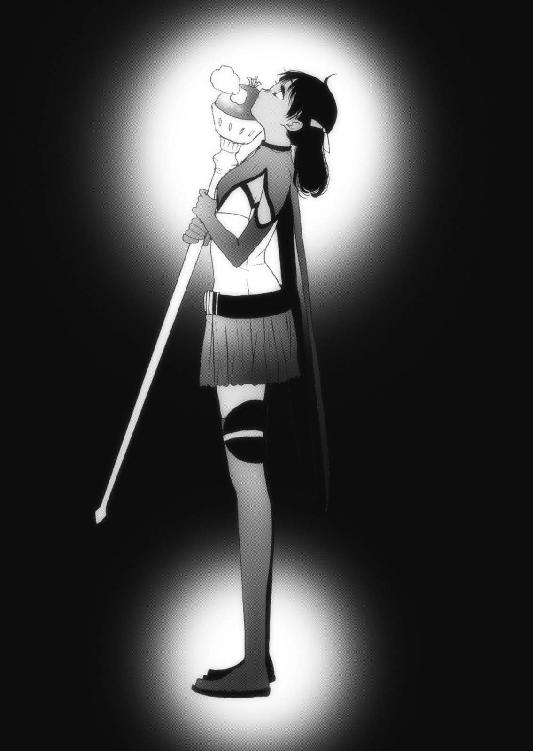
第九章・裏 大悟【カナク】
カナクはソーンのことでやるせない思いを抱いたまま、部屋を出て広場の奥にある兵舎に向かった。ここには魔王退治にやって来ては、敗れて眠りものになった冒険者らを寝かせていた。ユーリエの肖像画を焼いたあの冒険者らも、ここで眠っている。
自分は黒夢の魔王である。だが、リーゼのように落ちてはいない。できることなら、死人など誰一人出したくないと考えていた。
カナクはネウが縫ってくれた神官衣に触れ、そのことに気づいた。
昔、ダークエルフのネウから聞いた、闇種族の扱い。そして闇種族の国での、陽種族の扱い。アレンシアに住む者たちは、どこかしらズレてしまっているだけで、きっかけがあればきっとみんなが幸せになれるはずだ。
アレンシアが、一丸となって攻めてくる。それは大きな契機だった。
黒夢の魔王たる自分なら、そのきっかけにふさわしい。
どうせやるなら、とことん強敵になってやろう。陽種族だけでも闇種族だけでも勝てない、そんな存在になってやろう。
そう思った時、カナクの中で何かが弾けた。
それから数十日が経過した。
カナクの傍らにはユーリエの姿をした夢魔、そして正面にはリーゼが跪いている。
あれほど脅威に感じていたこの女が、今では銀獣人にならずとも可愛らしく思えてしまう。それほど力の差が開いていた。
「リーゼ、夢魔は？」
カナクがそう言うと、リーゼは素直に答える。
「はい。アレンシア各地から全て集めまして、この城の周りに配置しています」
カナクは立ち上がり、窓に歩いていく。城壁の向こう側、荒れ野の一帯が黒い海のようになっていた。
「こちらの戦力は？」
「全ての夢魔を集め、およそ十万ほどかと」
その数を聞いて、カナクは驚いた。
「十万？ 僕はそんなに夢魔を作っていないよ？」
リーゼはカナクの背後に立ち、顔色を変えずに答えた。
「上級の夢魔は、黒夢を集める力を持っています。彼らが各地で下級夢魔たちを生み出していったのです」
なるほど、と呟くカナク。
リーゼはカナクに上級夢魔を作っていくよう進言してきていた。故にカナクは上級夢魔のみを練り上げていたのだが、それがこんな効果を生んでいようとは思わなかった。
「これだけの黒夢があれば、僕はもうイストリアルに行けるんじゃないか？」
以前のカナクなら、そんなに堂々とリーゼにものを尋ねることはできなかった。
だがリーゼを恐れなくなった今なら、何を憚ることはない。
「そのとおりですわ。でも、ここから先は黒夢があればいいという問題でもありません」
カナクは振り返って、リーゼに近づいた。
「そろそろ、詳しく聞かせてもらおうか。どうすればイストリアルに行けるんだ？」
強い殺気が、瞬時にして謁見の間に広がった。リーゼは膝をついて、呻くように言う。
「私は魔王さまがこの城に来てすぐに、既に全てを提示していますわ」
カナクはいぶかしみながら、その言葉を反芻する。
リーゼが今までカナクに提示してきたもの──
それは、イストリアル。黒夢。夢魔。ルイ・ソーン。
......ユーリエ。
その時、カナクの体を電撃が走り、瞬時にして全てを理解した。
リーゼは本当に、既にカナクに答えを提示していたのだ。
カナクは怒りに身を任せ、リーゼの首を摑んで持ち上げた。
「ぐ......うう......」
砂になって逃れようとしたリーゼだったが、カナクの手のひらから流し込まれた黒夢によって体中を硬直させられていた。
「何故もっと早く言わなかった！」
苦しそうなリーゼが、何とか口を開く。
「こればかりは、先に答えを提示するわけにはいきませんでした。その方法を教えてしまえば、黒夢が足りなくてもあなたはイストリアルに行こうとしてしまうでしょうから！」
カナクはリーゼを手荒く放した。どさりと床に落とされたリーゼは首を押さえながら、恨めしそうな目で魔王を睨む。
だがカナクの視線はリーゼではなく、ユーリエの姿をした夢魔に向けられていた。
そして、その日より魔王の城から夢魔が一体、姿を消した。
最終章・表 アレンシア大戦へ【オリヴィア】
「準備は良いか、ライカ」
ライカは特注サイズの胴当てを着て、赤いマントを身に纏っていた。
「いつでも大丈夫です、女王さま」
自信に満ちたその表情から、オリヴィアは安堵する。
「まだまだ半人前だが、中距離ならまず外さない。問題ないだろう」
そう声をかけたのはガザラ国王の亜父、ザイルだ。
世界会議から二ケ月。ライカは顔つきからしてさらに逞しくなった。
何せ烈翔紅帝と呼ばれたオリヴィアに力を引き出してもらい、唯一、影砲士の訓練を知っていたザイルがつきっきりで鍛え上げたのだ。
「この二ケ月で、ガザラ鉱山からガザリウムが採掘されれば良かったんだが、結局発見できなかった。つまり、オリヴィア女王が持っていたその弾が、最後のガザリウム弾だ」
ザイルはさすがにこの国でオリヴィアをレベッカとは呼ばなかったし、オリヴィアも国に戻ってから再び仮面で顔を隠していた。
「さあさあ出陣の時間ですぞ女王さま。馬と瞬間移動大魔法の準備も出来ています」
そう促してきたのは、コルセア大神官のグウェイルだった。
「まずは、兵士たちにお声をかけて下さりませ」
「うむ、そうしよう」
オリヴィアはライカとザイル、それにグウェイルを引き連れ、城壁の上に行った。
愛する夫、スフィアから贈られた思い出深い紅の鎧に身を包み、ロングスカートをはためかせ、腰には愛刀「紫焰」を差している。
オリヴィアが姿を現すと、広場に集結していた一万の精鋭たちが歓声を上げた。
「皆の者、静まれっ！ これより出陣前に、オリヴィア女王陛下よりお言葉を賜る！」
グウェイルがそう叫ぶと、歓声がぴたりと止んだ。よく訓練された兵士特有の、機敏かつ迅速な動きだった。
これだけの人数が静まりかえる中で、オリヴィアは城壁の縁に立ち、その姿を全て兵士たちの前に晒した。
「これより我々コルセア勢は瞬間移動大魔法を使用し、約束の地〝中央平原アレンシア連合軍駐屯地〟へと赴く。だがその前に、皆に伝えておきたいことがある！」
オリヴィアはライカとザイルに手招きし、二人をより前に出す。
「ここにあるは、ガザラ王国で亜父という高位にあるザイラス・ウォートン殿である。私は彼と、二人でこのライカという少年をアレンシア軍の切り札として鍛え上げた！」
ライカはただの少年ではない。稀少種族、銀獣人である。しかもザイラス亜父の助力により、黒夢の魔王を撃つ力を持っている。
よいか！ 我々の使命はライカを守り、魔王のところまで連れていくことだ。そのためなら、この私ですら命は惜しまない！」
どおおおおお、と、兵士たちが手にした武器を打ち鳴らして歓声を上げた。
オリヴィアは腰から紫焰を引き抜き、紫色に輝く刀身を露わにする。そして兵士たちの後方にある城門に向かって切っ先を振るうと、それが合図となって城門が開け放たれた。
その先には通常の何倍もある巨大なポータルが開かれ、周囲に十名ほどの魔術師がポータルに向かってマナを送っていた。
「さあ行くぞ！ 中央平原で世界中の同士が待っている！」
『おおおおおおおおおおおおおおおおおおおおおおおっ!!』
オリヴィアの檄に呼応するコルセア軍は、ロゴス将軍を先頭に、吸い込まれるようにポータルへと進軍していく。馬蹄と足音、そして武器がぶつかる音が合わさって、軍隊特有の音が辺りに響く。
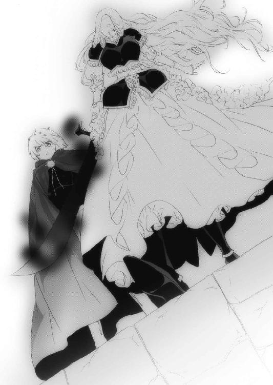
オリヴィアは剣を鞘に収めて城壁から降り、傍らにいたザイルに抱擁した。
「ザイル、ありがとう。あなたがいなければライカはここまで立派になれなかった」
ライカは抱き合う二人を視界に入れまいと、土煙を上げる兵士たちに目を向けた。
「当然のことをしたまでだ。お前の勇姿、先王のじいさんにも見せてやりたかったぜ」
オリヴィアを抱きしめながら、ザイルは今は亡き心の友に思いを馳せていた。
「あたし、この戦に勝ってくるね。そしたら今度はあたしがガザラに行くよ。ジョンさんのお墓にもご挨拶したいし」
オリヴィアは不思議に思った。こうしてザイルの腕に抱かれていると、ここフェーン地方で必死に剣を振るっていたオリヴィアではなく、キンドリーの長城で過ごした女の子、レベッカに戻ってしまうのだ。
「心に揺らぎはないか？ ......カナクを、討てるか？」
ザイルは滞在中、何度もオリヴィアと杯を交わしながら話をした。
そして黒夢の魔王がスフィアとレベッカの間に生まれた子カナクであることを聞くと、アレンシアの神、マールを恨まずにおれなかった。だがそれすらも......そのマールこそが、カナクが愛した女性ユーリエその人だと知ると、ザイルはもう頭を抱えて溜息をつくしかなかった。
オリヴィアはザイルから身体を離し、右の手のひらをザイルの胸に当てる。
「大丈夫。あたしはもう覚悟を決めているから」
ザイルは眉間に皺を寄せ、その掌を握った。
「すまない。俺にもっと力があって、そのマール石に再びマナを注ぐ力があれば......」
全盛期のザイルならともかく、もう老年のザイルにはどうすることもできなかった。
「いいのよザイル。あたしの命は、本当ならとっくにガザラで尽きていたのだから。ほんのひとときでもスフィアと愛し合って......カナクをこの手で抱けたのだから。
あたし、すごくいい人生だったと思うよ」
ザイルの目から涙が溢れた。何故、この娘だけがこんな業を背負わなければならないのか。それを思うと、涙を堪えきれなかった。
「出陣前の涙は縁起が悪いわよ、ザイル」
オリヴィアは笑っていた。
「国に戻って、吉報を待ってて。あたしは不肖の息子を懲らしめてくるよ。それが母親としてできる、最初で最後の教育だからね！」
オリヴィアは振り返り、ライカに向かって言った。
「さあ行くぞライカ、中央平原へ！ あとは頼んだぞ、グウェイル！」
その言葉にグウェイル大神官は深々と頭を下げ、ライカはオリヴィアに片膝をついた。
ガザラ王国の辺境キンドリーで出会った、屈強な老人ジョンと、偏屈な衛生兵ザイル、そして影の巨人を撃ち続けた気弱で、心優しき銀獣人スフィア。
そんなスフィアに嫁ぎ、彼らと幸せな時間を過ごした少女レベッカは、再びコルセアの烈翔紅帝オリヴィアに戻り、これからアレンシア軍を率いて魔王カナクを......スフィアとの間に授かった愛する息子を倒しに行く。
ザイルは涙を拭ってその誇り高き旧友に、思わず頭を下げた。
オリヴィアとライカは広場に下り、騎乗して一気にポータルに向かって走り出した。
ポータルは中央平原でのコルセア軍の拠点エマル近辺に飛ぶ。ポータルに突入し、瞬時に中央平原へと飛んだ二人は、その光景に思わず馬の足を止め、目を見開いた。
今まで見たこともない大軍が、中央平原に所狭しとひしめいていたのである。
一人一人が規律良く動き、まるで動物の群れのようにも見える。
世界会議の盟約は守られ、全ての国の一軍がここに集結していた。
「これは......すごいな......」
歴戦の戦士でもあるオリヴィアが思わずそう漏らすほど、壮観な景色だった。
全ての国の軍隊が集まり、その総勢二十五万の大軍だった。
オリヴィアはライカとコルセア聖騎士団長ロゴスを連れ、ゆっくりと中央の巨大な帷幕に向かって馬を走らせる。アレンシア大連合軍は、その帷幕を中心に各国の軍を駐屯させていた。
帷幕にたどり着くと、オリヴィアとライカに気づいた衛兵が幕を開け、中に入るよう促す。
オリヴィアは下馬し、ロゴス、ライカと共に堂々とその中に入る。中央に円卓があり、その周りに各国の司令官が座っていた。世界会議は各国の王が集うものだったが、オリヴィアとは違い、そうそう王自ら戦場には来ない。
各国の司令官はオリヴィアの姿を目にすると、一斉に立ち上がって頭を垂れた。
陽種族も闇種族も関係なく、このアレンシア軍を率いるのは烈翔紅帝オリヴィアであることは世界会議で決められたことであり、オリヴィアの噂を少しでも耳にしたものは誰も異を唱えなかった。
オリヴィアは諸将に向かい、声を張り上げる。
「諸君の参陣、大変心強く思う。ここまでの道中で、何の諍いもなく一つに纏まったこの連合軍の姿を見て、勝利を確信した。この戦に勝ち、黒夢の魔王と夢魔を掃討し、平和なアレンシアを勝ち取ろうではないか！」
「おおっ！」
誰しもがそれを望んでいる。オリヴィアは頼もしい味方たちに顔を向け、笑顔を見せた。
「時に、私はこの戦いにもう一つの意義を感じている」
オリヴィアが右手を挙げると、ライカは一礼して下がっていった。
「此度の戦いは、これまでアレンシア各地で起こっていたアレンシア人同士の戦いではなく、アレンシア共通の敵を排除するという、前代未聞の戦いである。普段であれば暁の信徒だ紅の信徒だといがみ合う仲ではあるが、この戦で闇種族と陽種族、そして各国がもっと深く互いを知り合える契機になればいいと思う。そこで──」
その時、帷幕にライカが布を持って帰ってきた。
ライカは跪いて、それをオリヴィアに渡す。
「こういうものを作ってみた」
オリヴィアがそれを広げると、各国の司令官たちはおお、と感嘆の声を漏らす。
その布にはアレンシアの地図の上に、髪の長い女性の横顔がシルエットで描かれていた。
「暁の賢者であろうが紅の魔女であろうが、マールがアレンシアの神であることは変わりない。我らはみな、マールの子なのだ。これをアレンシア連合軍の旗印として西に向かいたいと思う。誰か、異論はあるか？」
最初に動いたのは、驚くことにログナックの司令官だった。彼は武器を机に置き、手を叩いたのだ。各国の司令官はそれに倣い、机に各々の武器を差し出して拍手した。
「感謝する。では、これより進軍を開始する。先陣は我がコルセア勢が務めよう。各々、早々に準備せよ！」
「おおおおおおおおおおお────っ！」
オリヴィアの号令一下、各司令官は帷幕から駆け出して、伝令に進軍命令を伝える。
中央平原に集結した巨大な渦は、大蛇のようになって一路、西へ向かって進軍をはじめた。
進軍すること二十余日。
アレンシア軍はオリヴィアが作った旗を掲げ、魔王の居城へと迫った。
枯れ木や岩ばかりの荒涼とした大地に、曇天がその不気味さに拍車をかける。
乾いた風が、これから起こるであろう大戦を後押しするかのように背中から吹いてきた。
魔王の城が見えはじめた頃、アレンシア軍の兵士、司令官......そしてオリヴィアまでも、驚愕で表情を凍らせた。
（やはり備えをしてきたか......リーゼ！）
これだけの規模の軍を動かしたのだ。リーゼどころか、町の子供にだってアレンシア軍の話は伝わっている。魔王の城は、まるで黒い湖のように集結していた夢魔の中、孤島のようにぽつんと浮かんでいた。
「ま、まさか、あれが......全て夢魔なのか......!?」
将校の一人が呟く。オリヴィアが世界会議で大連合を組むことに反対したのは、こういう事態を予想できたからだった。
（カナクの力は、もはや人知を超えている）
オリヴィアは動揺するアレンシア軍に向かって、声を張り上げた。
「畏れるな！ 我が軍の方が数的にも魔王軍を圧倒している！ マールのご加護は、我らにあるのだぞ！」
オリヴィアの檄は各国の軍を率いる司令官の耳に入り、兵士たちを鼓舞していく。
「さあ、行くぞ！」
オリヴィアは剣を振るい、全軍を魔王の城へと進めた。ゆっくりと軍を進めて行くと、魔王軍も不気味に隊列を整えて前進してきた。
アレンシア軍の陣形は、主に三つに分かれている。魔王の城を二手から攻めるためだ。それに対して魔王軍は城を中心に展開し、さらに四つの遊軍がアレンシア軍の手薄なところを探すように城の周りを周回していた。
敵軍の主な人物といえばまず魔王カナクだが、元聖神官だったカナクに軍略などわかるはずもない。
もう一人、何故か魔王軍に従っているルイ・ソーンだが、いかにフェルゴートの五英雄とはいえ、こんな大軍を率いて戦ったことなどないだろう。
すると、残るは一人。
またもオリヴィアの前に立ちはだかるのは、魔導師リーゼだ。
（今まで私は、あの女に一度として勝てたことがなかった）
夕闇の海で影の巨人の侵攻を許し、リーゼが復活してから愛するスフィアを奪われ、愛息カナクを奪われ......。
「リーゼぇ......」
オリヴィアは、リーゼに半生を奪われてきたと言っても過言ではない。思い切り歯を嚙みしめて、ついにこの日が来たことを実感していた。
（絶対に倒してみせるぞ、リーゼ！）
足を止めることなく進むアレンシア連合軍と、魔王の一軍。
「うっ......!?」
そして両者が対峙したその時、コルセア軍の誰もが言葉を失った。
魔王軍の先頭、夢魔を従えて浮かんでいたのは......。
何と黒夢の魔王、カナク本人だった。
最終章・裏 アレンシア大戦へ【カナク】
いよいよ、決戦の日がやってきた。
カナクは腕を組んでリーゼと共に城壁の上に乗り、巨大な土埃が巻き上がる東側を眺めていた。この距離ならば魔法も弓矢も届かない。
二人はこの壮大な景色に目を奪われていた。
「ははは、よくもまあ、集めに集めたものよ！」
リーゼが珍しく声を上げて笑った。アレンシアの国全ての一軍がこの地に集結しているのだから、かなりの兵力のはずだ。
軍旗には紅の魔女とも暁の賢者とも呼ばれたマールの横顔が描かれている。
さらには国旗も並んでいるが、見たところ闇種族も陽種族もなく、全ての国が集まっているようだった。
「......あれは!?」
リーゼが驚嘆する。彼女の視線の先には、オーダスの旗印があった。
（そうか、バカ息子が父王に反旗を翻したか！ くくく、ははは......）
リーゼはトロルの王子、ゴバーナの決断に拍手を送ってやりたい気分だった。
あの鈍い王子がなかなかやってくれる、と。
「ソーンはどうしている？」
カナクの問いに、リーゼは城の南を指差した。
「アレンシアの主攻はおそらく城壁が崩れていて防御の弱い北と南から攻めてくるでしょうから、ソーンには南の軍を任せました。アレンシア軍に隙があれば、夢魔を率いてそこを突けと命じております」
さすがはリーゼである。
この城を数に頼って攻めようとするアレンシア軍に対し、魔王軍は四つの遊軍を各方角に配置し、残りは城の周りをぐるりと囲むように陣を組んでいた。
いくら城とはいえ、こんな古城ではあの大戦力に耐えられないだろう。
ならば野戦に持って行くしか勝機はなかった。
「北の左軍は私が指揮を執ります。魔王さまは謁見の間に控えておいて──え？」
カナクは素早く魔法陣を描くと、城壁の外に足を出してその場に浮いた。
「折角こんなに集まったんだ。まずは主催者に挨拶をしないとね」
不敵な笑みを浮かべるカナクの体から、黒夢が噴き出す。
それはまさに、魔王というに相応しい貫禄だった。
「は、ははっ！」
リーゼは思わず、膝をついた。
カナクは笑みを浮かべたまま浮遊し、東に布陣していた魔王遊軍の上を通過した。
すると、夢魔たちが主の後を静かに追ってきた。
（さあ、全力でかかってくるがいい。アレンシアの力を全て出すんだ！）
カナクはそう思いながら、銀色の髪をなびかせてアレンシア軍の先頭にいた人物に目を向ける。
白馬に跨がり、紅い鎧に剣を携えた凜々しき女性。
コルセアの烈翔紅帝、オリヴィア女王だった。
かくして、双月暦一五一九年。
アレンシアの西、旧リヴァルト王国領にて、コルセア女王オリヴィア率いるアレンシア大連合軍と、魔王カナク率いる夢魔の軍が対峙した。
後に歴史として残る、アレンシア大戦の始まりだった。
あとがき
こんにちは、上総朋大です。
カナクのキセキ四巻、いかがでしたでしょうか？
四巻はこれまで同様、表裏章で展開しましたが、主にカナク、オリヴィア、ネウの三人に焦点を当て、三つのお話を三人称で描くという、ちょっと難しい書き方をしてみました。
このカナクのキセキというお話は描きたいエピソードが多すぎてネタには困らないものの、それをどう調理し、いかに面白くできるか、ということに毎回苦労させられます。
それも、楽しいんですけどね（笑）。
さて、ここまで紡いできたカナクのお話は、いよいよクライマックスに突入します。
カナクとユーリエの結末はどうなるのか。
果たしてカナクのキセキとは何なのか。
最後までお楽しみ頂ければ、僕も嬉しく思います。
いつも根気よく僕の荒い原稿に向かって下さる担当高野さんと、お忙しい中、見事に各シーンをビジュアルにして下さる、さらちよみ先生。
そしてカナクを応援して下さる心温かな皆様に最大級の謝辞をお贈りし、筆をおきたいと思います。
それでは五巻の巻末で、またお会いしましょう。
全ての皆様に、マールのご加護がありますように。
二〇一二年二月二九日 上総朋大（雪中の閏日より）
カナクのキセキ４
上総朋大
平成24年4月25日 発行
発行者 山下直久
発行所 株式会社富士見書房
〒102-8144 東京都千代田区富士見1-12-14
http://www.fujimishobo.co.jp/
(C)2012 Tomohiro Kazusa, Yomi Sarachi/Fujimishobo